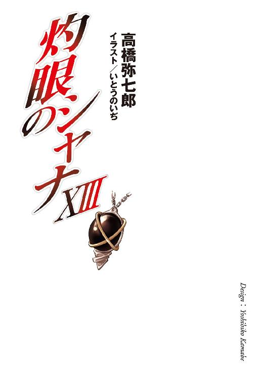
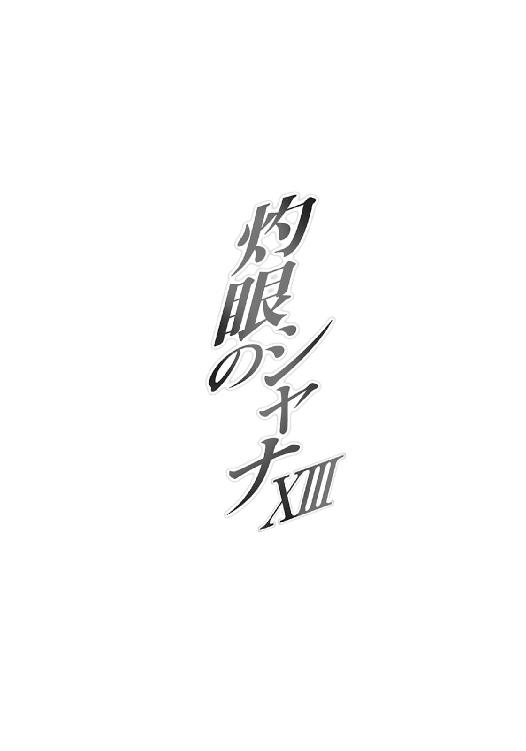

| 灼眼のシャナ 13 | |
| 高橋弥七郎 | |
| KADOKAWA / アスキー・メディアワークス (2013) | |




本書（電子版）に掲載されているコンテンツ（ソフトウェア／プログラム／データ／情報を含む）の著作権およびその他の権利は、すべて株式会社アスキー・メディアワークスおよび正当な権利を有する第三者に帰属しています。
法律の定めがある場合または権利者の明示的な承諾がある場合を除き、これらのコンテンツを複製・転載、改変・編集、翻案・翻訳、放送・出版、公衆送信（送信可能化を含む）・再配信、販売・頒布、貸与等に使用することはできません。
プロローグ
世の空を、人知れず巨大な要塞が彷徨っている。
泡のような異界『秘匿の聖室』によって外の世界から隔離・隠蔽され、また自在に動き回ることもできる宝具──この世で最大級の〝紅世の徒〟の集団［仮装舞踏会］が、その本拠地と定める移動要塞『星黎殿』である。
その広大な城郭の奥深くで、どんな意図をもって据えられたのかも知れないパイプとメーターと電球が、それぞれの特性でもって大いに暴れ回っていた。常の状態ではないことは、各部が内包した異常な圧力に弾け、歯車が過剰な回転に吹っ飛び、蒸気煙が濛々と噴出していることからも明らかである。
バチンッ、
と、これら混沌の奥で、火花が散るのにも似た音が轟いた。音に連れて、銀色の光でできた奇怪な文字列、自在式が無数、宙に散り、消える。
「──ッンノオオオオオオオオオォォォォォォォォォ──────!?」
文字列の散った根元から、むやみに素っ頓狂な絶叫が上がる。
声の主は言うまでもない、［仮装舞踏会］の客分として、とあるものに関する研究と解析を行っている『教授』こと〝探耽求究〟ダンタリオンである。
「機ぃー関変調によるシィーステムダウンッ!? のせいで完成間近のバァーナナの皮──もとぉーい！ 解析中の式が二層丸ごと吹ぅーっ飛んだじゃありませんかぁー!?」
だらんと長い上っ張りを着たひょろ長い体躯が、出来の悪い振り子のようにガックンガックン前後に折れては伸び上がりして、文字通りの動揺を見せている。細い首にかけた様々な器物が揺れでかき回され、こんがらがっていた。その前後する口が、
「ドォーミノォー!!」
と自身の助手を務める〝燐子〟を呼ぶ。
蒸気の靄、ぐるぐる回転する針、激しい明滅に埋もれる奥の奥から、
「はあーい、教授！」
と返答があった。
ガラクタと蒸気を下から突き破って、膨れた発条に歯車の両目をつけ、頂にネジ巻きをつけた顔らしきものが、ピョッコリと飛び出す。教授が独自の力で作り上げた特殊な〝燐子〟、『我学の結晶エクセレント28─カンターテ・ドミノ』ことドミノである。
教授は、分厚い眼鏡越しの視線を猛然とそちらに振り向けた。
「こぉーの機関変調は、いぃーったいなぁーにごとですかぁー!?」
「今確かめますんでございますです！」
頭だけの彼（？）の横に、古臭いメーターと電球を束ねた、パネルらしきものが競り上がった。その表示を見た歯車が、激しく回転して仰天の様を見せた。
「きょっ、きょきょ！ きょきょ教授っひははは!?」
「なぁーにを慌てているのですかぁ!?」
教授はマジックハンドに変えた手を長く伸ばして、助手の頬をつねり上げる。
「冷静ぇーに！ 在ぁーるがままの現実を報告─っするのです！ 観察研究実験発明は、全てそこから一歩二歩三歩四歩と踏み出し走って転げて起きてぇ──!!」
「機関大底部に繋いであった『暴君』が過剰に活性化して、全回路内に力の逆流を引き起こしているんへひはひひはひ」
言われたとおり、冷静に在るがままの現実を報告した助手の頬を、またマジックハンドがつねり上げていた。
「人の話を邪ぁー魔してはいぃーっけません、とあれほ、ど......」
言う間に、報告の内容が意味するところを理解する。
「......『暴、君』？」
ごくごく最近になって研究の対象に返り咲いたもの──今現在、彼が滞在している組織にとって最重要のもの──
「......ッドォーミノォー!? なぁーにをグゥーズグズしていぃーるんです！」
教授は尻に火がついたような勢いで飛び上がり叫んだ。
「ただちに銀沙回廊を起動ぉーっ！ 天井を機関大底部『暴君』格納庫にぃー！ 前方壁面を『祀竈閣』に融ぅー合！ 急ぐんでぇーすよぉー！」
「はいでございますです！」
首の傍らから、パイプにコードを絡めた腕がニョッキリと生え、傍らのスイッチを複雑な手順で、しかし澱みない動作で押す。
途端、シュゴーッ、となにかが新たに噴出する音が遠く響き、ほどなく目に快い、銀色の煙と見える光点群が室内に漂い始めた。『星黎殿』内部の空間を組み替え、離れた場所と場所を繋ぎ合わせる移動簡略化装置『銀沙回廊』が作動を始めたのである。
銀色の煙は一定の密度を持つと、教授の前方に位置する壁際で渦を巻き、すぐまた渦の中空を広げる。その中空の向こうには、壁に銀の縁取りで穴を開けたかのように大きく、別の空間が繋がっていた。
殺風景な、広いドーム型の部屋である。擂鉢状、同心円を描いて降りる階段の底に、上向きの口を開けて灰を満たす巨大な竈『ゲーヒンノム』を据えた『星黎殿』の司令室──通称『祀竈閣』だった。
階段の中ほど、竈を挟んで立っていた二人が、空間の繋がったことに気付き、振り返る。
「た、〝探耽求究〟様!?」
その一人──背に蝙蝠の翼、細長く伸びる尻尾、鋭い両手の爪、尖った耳に二本の角、分厚く長い鞘に収まった湾曲刀を備えた、風采の上がらない中年男──は大いに驚き、
「なにかあったようだね、教授」
もう一人──灰色のタイトなドレスに装飾品をいくつも提げ、右目に眼帯をつけた三眼の美女──は待ち構えていたように、教授とドミノ、部屋ごとの到来に声をかける。
「ぐぐぐ軍師様、らら〝嵐蹄〟様！ たたた大変、大変なんでございまふひはははは!?」
「慌ててはいぃーけないと、たった今言ったばぁーかりでしょう、ドォーミノォー？」
二人が騒ぐ間に、繋がった部屋と部屋、合わさった天井と天井に、新たな渦が広がっていた。さらなる空間結合が果たされ、一つの奇怪複雑な機構が現れる。
それを見て、
「ん、なっ!?」
悪魔の特徴を持つ貧相な中年男、〝嵐蹄〟フェコルーは、驚愕に大声を上げた。
反対に、三眼眼帯の美女、参謀〝逆理の裁者〟ベルペオルは、静かに情景の意味を探る。
「右腕が......？」
彼らの頭上に現れたものは、磔刑に処された罪人のような姿で天井に架けられた、西洋鎧だった。汚れて歪んだ板金の全身には、周囲の天井から細いコードや太い管が伸び、無数の札が貼り付けられている。
その不気味な物体は、異常事態を示すかのように、内側から銀色の光を不規則に明滅させ、本来ならば在るべきはずの右腕を欠損させている。
見上げるフェコルーは、懐からきれいに畳まれたハンカチを取り出して、微妙に広い額に滲む汗を拭った。
「つ、通常の鏡像転移で、『暴君』本体が影響を受けることは在り得ないはず......仮装意思総体の方に何らかの異常でも？ こちらの『吟詠炉』に居留反応は？」
ドミノが、ガラクタの間からガスタンクのような体を引き出しつつ答え、
「『吟詠炉』は、いつもの転移時と同じように、出て行ったっきりで空っぽ、反応なしなんでございま......あっ！」
その製造に携わった一人として、気付く。
「きょ、教授！ もしかして『暴君』の右腕は、仮装意思総体が活性化したせいで、転移先に実体化しちゃっているのでは？」
「んー、あぁーりそうな話ですねえ。こぉーのままでは、作戦開始前に全身が転移しぃーてしまう危険性すらあぁーりますよぉー？ まぁーさにェエーキサイティング！ 波乱万丈のァアークシデント！ こぉーれだから、この世に生きることはやぁーめられません!!」
教授は言って、眼前にある光景を愉悦の面持ちで眺める。
「しぃーかし、よぉーほど大規模な『大命詩篇』が、一ーっ斉に完全稼動でもしない限り、『暴君』自ぃー身が転移することなど、あぁーりえないはずなのでぇーすがねえ。そぉーのような状況が果ぁーたして......ん？」
「......ふん、なるほどの」
教授の分析から、ベルペオルは同じ答えに辿り着いた。
「我らが『大命詩篇』を稼動させ得る者は極少、ここまで大規模一斉に完全稼動させ得る者はさらに......通常考え難い、この事態が指し示す可能性は一つ、か」
「それは？」
勿体つけた物言いで、ゴクリと唾を飲むフェコルーを数秒待たせてから、ベルペオルはゆっくりと口を開く。
「宝具『零時迷子』本来の持ち主が現れた、と考えれば......どうだね、教授？」
視線を向けられた教授は、自分の傍らにもパネルを引き出して表示に注目する、そのついでとして答える。
「おぉーそらく、そんなところでしょうねえ。彼女が『零時迷子』に過干渉を行ったせいで、変換中の仮装意思総体を、常態以上の意識レェーベルで覚醒させてしまった......こぉーれは貴重な稼動サンプルになぁーりますよぉー？」
「〝彩飄〟フィレスが......！」
フェコルーは冷や汗を拭き拭き、彼ら［仮装舞踏会］実質の指導者、三柱臣が一柱たる女性に振り向く。
「たしかに彼女なら『大命詩篇』により変換を行った『戒禁』の奥に触れることは可能......ということは、私たちの計画の概要を悟られてしまう危険性があるのでは!?」
対照的に、ベルペオルは軽く笑った。
「なに、起動しただけなら単に彼が出るだけのこと、それが何者であるかなど、悟られることはないさ。式は、最後の一篇が組み込まれなければ意味をなさないのだからね」
笑って、しかしその表情を僅か思索のために伏せる。
「とはいえ、当面の問題......この実体化の進行は、なんとしても抑えねばな」
四人の見上げる先に掲げられた鎧、その明滅はさらに激しくなっていた。消えた右腕から、さらに肩口までがじわじわと消滅の領域を広げている。
フェコルーは口に指をくわえ震えあがった。
「か、かなり進行が早い......こちらで呼び戻すための式を構築する暇が......！」
速度を観察し、鎧の周りにある種々の部品の破損状況を確認し終わったベルペオルは、なにかを諦めたかのように、短く軽い溜め息を吐いた。
「やはり、他に手はないか」
教授の傍らに立つ〝燐子〟に命じる。
「カンターテ・ドミノ。『銀沙回廊』を起動、『星辰楼』に繋げておくれ」
「はいでございますですっ！」
緊迫したドミノの声にかぶせるように、
「その必要はありません」
平坦な声が大扉、この部屋本来の入り口から響いた。
皆が目をやった先、縦に長い大扉がゆっくりと音もなく開き、明るすぎる水色の輝きが部屋へと差し込んでくる。
ベルペオルが、納得する風に目を細めた。
「『大命詩篇』が完全稼動しているんだ、気付かないわけがないね」
「はい」
短く答え、静かな足取りで『祀竈閣』内に進み出たのは、大きな帽子とマントに身を包む、無表情な少女。体の周囲に、光源たる光の粒が、星のようにゆっくりと巡っている。ベルペオルと同じく、［仮装舞踏会］を率いる三柱臣が一柱、巫女〝頂の座〟ヘカテーである。
彼女が通常は寄り付かない『祀竈閣』に姿を現した、という事実から、ベルペオルは事態の深刻さを、より明確に認識する。
「やはり、まずい、と？」
「はい。『大命詩篇』による変換が不完全であるためか、仮装意思総体の覚醒に全く歯止めが効いていません。このまま放置しておけば、転移先の素体を核に、彼が全身を実体化させてしまう恐れがあります」
起伏のない声で明確に返しつつ、竈に向かって階段を下りる。その傍ら、
「おじさま」
と、教授に顔を向けず尋ねた。
「ん〜ん？」
「最後の式は、まだ使えませんか？」
問われた対象は、数ヶ月前に彼女が齎した、複雑怪奇な自在式。
その研究と解析に当たっていた教授は、ほんの先刻まで取り組んでいた研究への熱意もあらわに大声で答える。
「んんー、機能の概要は解析でぇーきました。予測どぉーり、今までに採取した鏡像を一ぃーっ気にジョッイィーント！ させて共振に必要な人格パターンの振幅を構築、その稼動によって全体の制御を行う、まっ、さっ、にっ、ェエーックセレントな──」
「今はまだ、使えぬようだが──」
暴走する教授の解説をベルペオルは簡潔に纏め、
「──こうなると、おまえ自身に、抑えてもらわねばならん」
組織の至上命題たる『大命詩篇』の扱いを一手に担っている巫女を、促す。
「行けるかね？」
「はい」
ヘカテーは表情を変えず、頷きもせず、ただ明確に答えた。
「座標も、『大命詩篇』の完全稼動で、問題なく掴めます。変換の下地もできていますから、もう刻印も滞りなく行えるでしょう」
「結構。頼んだよ」
「はい」
もう一度答え、巫女たる〝紅世の王〟は細く白い指を前に伸ばす。
その先にあるのは、どす黒い煤をまとわり付かせた大竈『ゲーヒンノム』。彼女ら三柱臣が、大命遂行時にのみ使用を許される特別な宝具が、今そこに二つだけ存在していた。
一つは、竈の上をゆるりとたゆたう、ベルペオルの鎖『タルタロス』。
もう一つは、白木の柄と金の意匠を灰の中ほどに刺す、ヘカテーの大杖『トライゴン』。
指し伸ばされる動作に、欲する意思に呼応して、大杖は矢のように飛んだ。
ヘカテーはこの高速の飛来を軽く確かに受け止め、一回転、床に石突を打つ。
シャーン、
と錫杖頭に嵌った遊環が、透き通った音色を『祀竈閣』に響かせた。
一同の見守る中で、巫女は一旦瞑った目を、開く。
明るすぎる水色の輝きが、決意と力に溢れていた。
「もう、見失いはしません」
１ 秘密と秘密
十二月も半ばになると、昼なお寒風が街を揉む。
近所のコンビニへと買い物に出た坂井悠二は、この肌を刺すような風の中、
「よっ」
「父さん!?」
突然、父・貫太郎に出くわした。
どの季節でも変わらない、褐色のロングコートにスーツという身形が、雪もちらつきそうな寒天にも揺るがず平然と立っている。細長い輪郭を強靭な線で形作った不思議な容貌が、これも変わらない、飄々とした笑みを浮かべていた。
海外に単身赴任しているという以外、息子である悠二にも、仕事の内容どころか居場所すら知らせない父は、短いときは数ヶ月、長いときは一年以上も家を空けている。不定期な帰宅に際しても、事前の連絡などは一切なく、今のように突然ひょっこりと顔を出す。この夏に帰ってきたときもそうだった。
帰る度にいろんな家族サービスをしてくれること、母・千草が事ある毎に惚気て仲の良さを見せ付けてくれること、本人の性格も大らか穏やかであること、などの理由から、悠二には、不在がちであるという一点を除けば、父には特段の不満も抱いていない。
が、それでも、
「風邪はひいてないな？」
などと、まるで先週会ったばかりのように軽く言われると、声に呆れも混じってしまう。
「うん」
ともかく悠二は──男同士の見栄からか──しゃっきりと背を伸ばし、外で父に出くわした際の、決まりきった質問をする。ちなみに、「おかえり」は家に帰って母と一緒に言うのが慣例だった。
「もう母さんには会った？」
「いや、これからだ」
決まりきった息子の質問に対する、決まりきった父の答えである（今回は「ああ、相変わらずだったよ」の方ではなかった）。
と、
「なあ、悠二」
その後に続くはずの言葉、「じゃあ、一緒に帰ろうか」が、今日は来ない。どころか、妙な提案が来た。
「少し、歩かないか」
「えっ？」
息子の戸惑いを察して、貫太郎はからかい半分に尋ねる。
「寒いのは嫌か？」
「そんなことはないけど......母さんに、早く会いたくないの？」
「あとでじっくり見つめるさ。行こう」
「うん」
気障な台詞も、父が言うと嫌味にならない。そのことに軽い嫉妬を覚えつつ、悠二は広い歩幅についてゆく。幼い頃は、ほとんど小走りで行かねばならず、度々取り残されては泣いて、父に謝られたり母に慰められたりしていたが、今はややの早足で十分続くことができた。
その昔から変わらず細い、しかし大きな背中越しに、貫太郎が訊いてくる。
「悠二。お前、少し雰囲気が落ち着いてきたんじゃないか？ 背は、ほとんど伸びてないと思うが」
「え、そうかな？」
父からの賛辞には、他の誰からのそれとも違う、独特の誇らしさがあった。
（でも、それは......）
胸の奥に、誇らしさと同等の寂しさが去来する。
今ここにある彼は、人間ではない。かつて生きていた、かつて〝紅世の王〟一味に喰われて死んだ、『本物の坂井悠二』の残り滓から作られた代替物、『トーチ』だった。
本来は残された〝存在の力〟を時とともに失い、存在感も居場所も自然となくし、誰からも気に留められることなく消え、いなかったことになるはずの存在だった。
ただ、彼はたまたま身の内に、毎夜零時、その日に消耗した〝存在の力〟を回復させる永久機関『零時迷子』を宿したがために、忘却と消滅の運命から免れ得ている。代わりに、波乱万丈というも生温い、自身の存在への悩みも背負わされていたが。
今という時も、例外ではない。
（父さんが感じた落ち着きも、人間として成長した証じゃなくて......僕が、取り込んだ〝存在の力〟を扱えるようになった表れ、なんだろうな）
それも、確かに一つの成長の形と言えるのだろうが、父が感じ喜んでくれたものとは、根本的な意味で違っている。そのことが、本物の息子の欠片として、悠二にはとても済まなく思われた。沈んだ気持ちから、自然と口は重くなり、後に続くだけとなる。
いつもなら、息子が思い悩んでいるときは、どこかズレていたり逆に鋭かったりの会話を投げかけてくる貫太郎も、どういうわけか、今日は口を開かない。
「......」
「......？」
悠二は、そんな父の雰囲気に微妙な深刻さが混じっているように感じられた。迂闊に話しかけることもできず、足はただ、その背を追う。
二人はどこを目指すでもなく歩き続け、やがて街路を塞ぐ堤防に突き当たった。
貫太郎は、周りを見回して一言、
「真南川か。お祭りはもう終わったのか？」
「終わったもなにも、あれは夏祭りだよ、父さん」
「ん？ そうだったか」
「そうだよ。一緒に浴衣着て行ったこともあるじゃないか」
（やっぱり、どこかズレてるなあ）
安堵にも似た笑いで、悠二は返した。
思案顔も一瞬、ああ、と貫太郎は思い出す。
「たしか千草さんは淡い青の風車柄を着てたな。うん、似合ってた」
「母さんのことだけは、ちゃんと覚えてるんだ」
「お前のことも、ちゃんと覚えてるぞ。見る度にリンゴ飴を欲しがっていた」
「そ、そうだっけ？」
「そうとも」
お返しのように笑うと、貫太郎は軽快な二段飛ばしで、ヒョイヒョイと堤防の石段を駆け上がってゆく。
悠二はその後に同じく、二段飛ばしで続く。この半年間、毎朝毎夜に飽かず続けている鍛錬のおかげで、もはや日常レベルの運動では、ほとんど疲労を感じなくなっていた。
上った先で、貫太郎が背を向けて待っている。
「冬の河川敷ってのもいいもんだ。渡り鳥のような暮らしを送っていても、息子と立つと、ここが『自分の街』だって気がしてくる」
「僕には見慣れた風景だよ。父さんと一緒ってのは珍しいけどね」
その隣に立った悠二は、深呼吸する父の細い顔が、意外と近くにあることに気付いた。
（昔は腕や肩しか見えなかったのに......それとも、大きくなってからは横に立たなくなってたからかな？）
思いつつ、尋ねる。
「父さん」
「ん？」
「今度は長く家にいられるの？」
「あー、それがな」
貫太郎は困った顔になる。
こうなるともう、悠二にとっては答えを聞いたも同然だった。
案の定、
「今度も、急用ができて帰ってきただけだから、またすぐに出ることになる。すまん」
苦く笑う父を、悠二はいつものように許容する。
「僕はいいけど、母さんは寂しがるだろうな」
「それを言われると、返す言葉がない」
ふと、悠二は父の苦い表情から、察するものがあった。
（......急用？）
父が、なにか言いあぐねている。
口にし辛いことが、あるらしい。
この父が、坂井貫太郎が。
そうと察し得たのは、自分にしては鋭いのではないか......と悠二は心中密かに自賛し、不器用ながら水を向ける。
「用って、母さんに？」
話の取っ掛かり程度のつもりで口にしたその問いは、しかし予想外なことに、かなり核心に近い部分を突いたらしい。
「ああ」
頷いて、貫太郎は両手を腰にやり、より深く大きく、まるで溜め息を吐くように、まるでなにかを準備するように、もう一度深呼吸をした。眼を合わさないまま、遠い対岸を見やりながら、口を開く。
「困った人の相談に乗るのが、私のモットーだからね」
「困った......？ 母さんが？」
悠二は訝しんだ。母・千草が困る、という状況を、全く想像できなかったからである。息子である自分始め、出会う人という人に例外なく逆らい難さを感じさせる、起こる出来事という出来事をマイペースに処理する、あの母が。
しかし、貫太郎はいとも簡単に、息子の幻想を吹き飛ばす。
「千草さんは『いい』と言ったんだが、あの人は昔から、自分自身のこととなると不器用なところがあるから......おっ、古い方の鉄橋見るの、何年ぶりかな」
戸惑う息子を置いて、父は堤防を歩いてゆく。
「ま、待ってよ、父さん」
悠二は慌ててその後を追った。
昼日中とはいえ、十二月の風吹き渡る堤防に、人影は少ない。子供が幾人か、河川敷のグラウンドでサッカーに興じている以外は、ジョギング中らしい老人が一人、前方に見えるだけだった。
その老人が二人の横をすれ違い、ややの距離を開けるのを待ってから、悠二は僅かに強い口調で尋ねる。
「母さんが困った、って、どういうこと？」
坂井千草という女性が困っている、という事実は、一緒に暮らしている息子である彼にとって、大きな衝撃だった。
母は常のように平然としていることが当たり前──母が悩んだり苦しんだり困ったりするわけがない──母は日常の中に絶対者として存在している──それらが全く無根拠な、子供の盲信であることに、ようやく気付かされたのである。
もしかして自分が関係したことなのか──気付かない間に何かしてしまったのか──どうして気付いてあげられなかったのか──どんどん悪い方に思考が螺旋を描き加速してゆく。
貫太郎は、そんな息子を振り返り見て、困った風に微笑む。
「いや、困ったといっても、別に悪い意味じゃない」
「えっ」
「ただ、どう説明すればいいのか分からず悩んでた、ってところかな」
「そ、そうなんだ......」
悠二は、とりあえずの安堵を覚えて、
「でも、実際に母さんが困ったり悩んだりしてたことに気付けなかったのなら......僕は、その、やっぱり悔しいよ」
なおも痛恨の思いを吐露した。
息子の言葉に、込められた優しさに、貫太郎は父として、微笑に驚きと喜びを混ぜる。
「うん、そうだな」
「それで父さん、母さんが悩んでた説明っていったい──」
核心を突きかけた悠二に、
「悠二」
貫太郎は突然、
「競走だ！」
「えっ？」
言い捨てて走り出した。堤防上、ジョギングシューズの足跡や自転車の轍がそのまま固まった不整地をものともせず、物凄い勢いで細長い足は回転する。
「......、っあ!?」
悠二は一瞬呆気に取られて、しかしすぐに後を追った。昔から、こういう突発的な行為はよくあったのである。そのくせ未だに慣れることができていないのは、前後の脈絡が全くないからだった。ともかくも、父を追って走る。
「ま、待ってよ父さん！」
「おっ、速いな」
貫太郎は笑って、さらに速度を上げた。
ふと悠二は、この背中を追っていた幼い日々のことを思い出す。決して抜けない背中、靡くコートは、まるで魔法のマントだった。胸の底に、思いが湧く。
（今、僕が持ってる本当の力を使えば）
この背中を追い抜けるかもしれない。
（いや、追い抜けるだろう）
確信して、それでも普通に走る。
意地でも、普通に走る。
そして、負けた。
「ゴールだ！」
言って、貫太郎は当初からの予定だったらしい、鉄橋の袂で止まった。ほとんど息が乱れていない。まったく、心身ともに若い父親だった。
ゴールとなった鉄橋（正式な名前は井之上原田鉄橋）は、御崎大橋の南に位置する、かなり古い橋である。対岸の御崎市駅からの分岐線を通す鉄道橋脇に、細い人道橋が一つだけ付いているのが特徴だった。
その人道橋の入り口、横を電車が通る度に揺れる、粗末な板張りに立つ貫太郎は、
「悠二」
何気なく問いかけた。
悠二も、息を整えながら軽く返す。
「な、なに？」
「私が帰ってきたのは、おまえに同意を求めるためなんだ」
母の悩みとどう関係しているのか、訝しみつつも鸚鵡返しに尋ねる。
「同意？」
「ああ。弟か妹か......その子の名前に『三』って文字を入れたいんだ。いいかな？」
「そりゃ、別に僕は構わな──」
質問に答える途中で、思考がスコン、と抜け落ちた。
空白の数秒を置いて、
「──ええっ!?」
悠二は驚愕に飛び上がった。
「お、弟、妹って、それ、つまり」
動揺で言葉が定まらない。
貫太郎は照れ臭そうに、頭をガリガリと掻いた。
「七月末に、一度戻ったろう？ あのときに、まあ、なんだ、できたらしい」
「そ、そう、なんだ」
ようやく頭が状況を把握して、ハッとなる。
「おめでとう父さん！ って、あれ？ 僕はこう言うべき......なのかな」
まだ混乱している息子に、もちろん、と父は頷き、
「ありがとう。そして、おめでとう、だ。悠二兄さん」
その肩を強く、ボンと叩く。
「兄、さん」
初めて呼ばれるその称号に、悠二は微妙なむず痒さと気恥ずかしさを覚えた。じわじわ湧いてくる嬉しさと高揚感の中、
（そうか......なるほど、父さんが帰ってくるには十分な、凄い理由だぞ）
と納得しかけて、
「あれ？」
ようやく気付く。
「そんなおめでたいことで、どうして母さんが困るのさ」
言う間に、『三』という文字が持つ意味への不審も抱く。
「もしかして、名前のことって......なにか意味があるの？」
「そんなところだ──、よっと」
貫太郎は橋の入り口、堤防の地面にガリッと、革靴の踵で鋭く線を描いた。
なにかの遊びかと思った悠二は、
「父さん？」
見上げた父の表情が、鋭く引き締まっているのに気が付いた。
その表情を崩して、
「いや、秘密、と言うほど大したことじゃない」
貫太郎は首を振る。前もっての無用な深刻さを払うためだった。
「今まで、なかなか話す機会がなかったし、今度のおめでたがなければ、話す気は起きなかっただろう」
声は軽くあっけらかんと、しかし言葉の意味は重く、説明は続く。
「しかしまあ、どんな神様のお計らいか、こういうことになった。それで、名前のことを千草さんと相談したとき......私は、今のおまえになら教えていいだろう、と思った。千草さんは、どう言えばいいのか、と困った。そういう話だ」
言いつつ、貫太郎は橋の中ほどに歩き始めた。
「もっとも、千草さんは素直に『困った』と言ってくれるような人じゃない。あの人は、どんなに困っても自分からは言わないし、顔にも出さないからな」
「うん」
それは悠二にも分かる。
「だから、千草さんが困っているときは、そうと察した他人が助けなければならない。だから私は、あの人と結婚した。助ける理由を問わせないために。今度の帰国も、その一つだ」
父の声が、姿が、少しずつ遠くなっていた。
「前もっての連絡はしてないから、帰ったらびっくりするだろうな」
悠二の前には、貫太郎によって袂の地面に引かれた薄い線が、小さくも大きな障害として残されている。
「──」
父が言うように、大したことではないのかもしれない。
しかし、父が帰国するほどに母が困っていることではある。
ほんの少しの躊躇を経て、
「──聞くよ」
他でもない父が、話してもいい、と見込んでくれたことに応えたい、という願い、
母が困っている原因を自分の協力で取り除けるのなら、という率直な思いやり、
そうすることで自分が大きくなれる、という意気込みが、足を踏み出させる。
「そのために、わざわざ帰ってきてくれたんでしょ」
「そうか」
貫太郎は、声だけで笑った。振り返らず、隙間から下が見える粗末な板張りの床を、ギシギシ鳴らして歩いてゆく。
その後に、近すぎず遠すぎずの距離を開けて、悠二は続く。
何十歩か歩いた頃、近い警笛と、その余韻を破って、電車が傍らの線路を通り抜けた。
グラグラと、危うい寸前まで揺れる床板の上でも、平然と歩を進める貫太郎は、電車が通過して静かになるのを待ってから、ようやく口を開く。
「千草さんと私が学生結婚した、ってことは知ってるな？」
「うん」
頷く悠二は、しかしそれ以外には、若かったので苦労した、程度しか聞かされていなかったことも同時に思い出す。子供心にも追及するのは悪趣味に思えたし、当の二人に、それ以上を問わせない雰囲気もあったからである。
自分は勘当された、と常から言っていた貫太郎は（ゆえに悠二は祖父母について全く知らない）、少し肩をすくめて旧悪を吐露する。
「お互い若かった、というのは言い訳だが、子供ができたから結婚した。今風に言えば、できちゃった婚、ってやつか」
（たしかに、僕が子供のときには話せないなあ）
そう大人ぶって考えてから、
（ん？）
父の言葉が『おまえができたから』ではなく『子供ができたから』だったことに気付く。
（なん、だろう？）
言い回しの誤差だけではない、妙な胸騒ぎを覚えた。
「千草さんは小さい頃から、赤ん坊だったり、そうでなかったり......たくさんの、いろんな子供たちを育てては見送る、そういう所にいた人でね」
「母さんが......」
悠二にとっては初めて聞くことばかりである。たしかに母は、息子を一人持っただけとは思えないほどに、子供のあしらいに長けていた。納得と同時に、その事実を開陳する意味、秘密の重さがゆっくりと心に染み込んでくる。
父の言葉は続く。
「だから余計に、かな。自分だけの、ずっとそこにいてくれる子供ができたことを、心から喜んでいたよ。若気の至り、で済ませようとしていた......粋がっていた馬鹿な若造だった私が、その姿に打ちのめされて、柄にもなく結婚を決意するくらいに、な」
「......」
そこに漂う得意げな笑い、夫婦の惚気を感じて、息子も少しだけクスリと笑う。
と、一転した声が、
「だが」
「？」
「その初産は酷いことになった。しかも、全部終わった後に、医者に告げられた。もう子供はできないだろう、と」
「えっ、でも」
言いかけた前から、自転車がガタガタと細い人道橋を走ってくる。
これを、二人は手すりに並んで寄りかかり、やり過ごした。
貫太郎は、その姿勢のままで言う。
「ああ。結果的に言えば、それは誤診だったことになる。まあ実際、それから十六年間、子供はできなかったわけだが......」
その目は、遥か遠くの冬空を見上げていた。
「今となっては、なにが効いたのか、どうやって治ったのかも分からない」
そこにあるものか、ないものかを見上げて、言う。
「とにかく、当時の私たちにとっては確かに、自分の子供はそのとき生まれた二人だけになったんだ」
聞き捨てならない言葉を、悠二は咄嗟に拾い上げていた。
「二、人？」
「ああ。生まれて、生きることのできなかった子。生まれて、生きることのできた子。その二人だけだった」
「──!!」
両親が幼い自分に言えなかった訳を、悠二はようやく理解した。
「次男だから、というだけじゃない」
貫太郎は真剣な眼差しで、息子に向き合う。
「生きることのできなかった兄さんが、確かにいたことの証として、もう一つ、兄さんの分も合わせた二人分の人生を悠に生きて欲しいという願いを込めて、私たちは、おまえに『悠二』という名前をつけたんだ」
そうして、最初の問いに、戻る。
「だから、次に生まれる三人目の子にも、兄さんと悠二、二人の次である証として、『三』の文字を入れたい。いいか？」
弟だった少年は、生まれてくる新たな家族のために、しっかりと頷いた。
「うん」
父にも言えない、一つの思いを秘めて、答えた。
「話してくれてありがとう、父さん」
貫太郎は、息子と並んで、久方ぶりの家路に就く。
「千草さんの悩みを思えば、たしかに名前一つのことだ。なんとなく付けた、と誤魔化して、次に話せるときを待つこともできたわけだが......」
「うん」
悠二も、父と並んで、帰るべき場所へと歩いてゆく。
どこかに坂井家も混ぜている、高い建物のない住宅地は、空が広かった。
その彼方を見るでもなく見て、貫太郎は言う。
「私としては、とにかく実際におまえと顔を合わせてから、決めようと思った」
「その結果、話してくれる気になったんだ？」
「ああ。ちゃんと話せる男になってるように見えたんでな」
「そりゃ......どうも」
悠二は、照れ笑いに、ほんの僅かな涙と誇らしさを混ぜた。父にそう見せた理由がなんであれ、結果として無駄な心労をかけさせない方向に事態が向かったこと、それだけは確かな、そして大きな、今の自分が得た成果であるように思えた。
（ちゃんと話す、か......）
父にそう見せた理由について、思う。
血のように赤い夕日の中で起きた、日常からの逸脱。
身の内にある、元凶にして命綱たる宝具。
そして出会った、一人の少女。
（今の僕が抱えている秘密は、話して理解してもらえるようなことじゃない）
その場所での自分の存在と秘めたる意味は、思うだに怖気が走る。
（けど）
今ここにいられること自体が奇跡と思えるほどの、あの戦い。
結果的に齎された、いつ火が点くか分からない、危険な平穏。
猶予は既になく、始まれば全てが変わってしまうだろう日々。
火に炙られるような恐怖の中、しかし今、真実と朗報を得た。
（いつか父さん母さんに......ただ、聞いてもらえるだけでもいい）
悠二は、自分の胸を掴んで、誓う。
父がそうしたように、自分もいつか、本当のことを話そう、と。
（そうすれば、僕は）
向かう先に、自分たち家族の家が、玄関先を掃除している母が、見えた。
父が一緒であることに気が付いて、その意味を悟って微かに表情を曇らせる、母が。
（ここから巣立てる）
今は帰る場所、そこに在る母へと、できるだけ明るく声をかける。
「ただいま、母さん」
温かく咲いた母の微笑み、喜びと嬉しさの言葉を、
「おかえりなさい」
ゆえにこそ切なく受け取って、誓う。
（あの時見た、全てを抱いて）
二ヶ月前、御崎高校の学園祭たる清秋祭の会場で、
《裏切ったことは、分かっている》
坂井悠二は、自身が蔵した〝紅世〟秘宝中の秘宝『零時迷子』本来の所有者『約束の二人』の片割れたる〝紅世の王〟──〝彩飄〟フィレスの襲撃を受けた。
《でも、もう決めた......友達は見ない、と》
『零時迷子』の中には、一つの戦いで瀕死の重傷を負い、そこから逃れるため転移した『約束の二人』の片割れ、『永遠の恋人』と呼ばれる〝ミステス〟ヨーハンが封じられていた。
《覚えているだろうか、ヴィルヘルミナ......あのときの、ことを》
フィレスは、人伝いに走査を行う自在法『風の転輪』を世界中にばら撒き、遂に愛しい恋人を隠した容れ物──坂井悠二の在り処を突き止め、彼を再び取り戻すため現れた。
《〝壊刃〟サブラクの攻撃を受けたヨーハンは、もうあのままでは助からなかった》
ヨーハンは、『零時迷子』の内に封じられ転移する寸前、何者かの依頼を受け、彼らを追い詰めた殺し屋〝壊刃〟サブラクに、謎の自在式を打ち込まれていた。
《だから、『零時迷子』の内に彼を封じて、避難のための転移を行わせ》
この自在式によって『零時迷子』は、ヨーハンを構成する部位に劇的な変化を起こし......同時期にトーチとなっていた坂井悠二の中へと、転移したという。
《私は〝壊刃〟を丸ごと抱えて、自在法『ミストラル』で》
劇的な変化が『零時迷子』に齎したものは、宝具を守る自在法『戒禁』の無差別な発動──フィレスまでも含む──と、かかった者の〝存在の力〟吸収という異常なものだった。
《できるだけ遠くへ、遠くへと、飛んだ》
フィレスはこれらの情報を、先行させた傀儡によって掴み、満を持して到来した本体は悠二に直接触れず、風の球の内に閉じ込めた上での分解を試みた。
《そうしたのは、貴女を助けるためだった──》
悠二とともに人として暮らし、ともに幾つもの激しい戦いを潜り抜けてきた〝天壌の劫火〟アラストールのフレイムヘイズ、『炎髪灼眼の討ち手』シャナ、
《──ヴィルヘルミナ》
異な縁から御崎市を訪れ、仮の宿に滞在していた〝蹂躙の爪牙〟マルコシアスのフレイムヘイズ、『弔詞の詠み手』マージョリー・ドー、
《私はヨーハンの転移の時を見られず》
シャナの育ての親の一人であり、またフィレスやヨーハンの友でもある〝夢幻の冠帯〟ティアマトーのフレイムヘイズ、『万条の仕手』ヴィルヘルミナ・カルメル、
《その変異すら知ることができなかった》
悠二を想い、人の身でありながらこの場に立つと決意した少女・吉田一美、
《だから、もう他は要らない》
マージョリーを慕い、子分たるを自任していた佐藤啓作と田中栄太、
《私だけで》
それら一同の前で、まさに処刑されつつあった坂井悠二、
《私と、ヨーハンだけで、いい》
彼の蔵した『零時迷子』に施された、ヨーハンの封印を解除する、言葉が、
「来て、ヨーハン」
「う、あ、わあああああああああああああああああああああああああああ──!!」
悠二の絶叫とともに響き、
そして、それが答えた。
「──ヨー、ハ、──」
フィレスが、自分を見た。
自分の胸を、見下ろした。
胸を、刺し、貫いている。
「──、ッ──？」
腕が。
悠二の、胸から生えた腕が。
ギシギシと歪んできしむ、板金鎧の、腕が。
その隙間から、炎を吹き上げる、腕が。
色は──〝銀〟。
胸に生えた、鎧の腕を見下ろす悠二は、
そこに吹き上がる銀の炎を見下ろす悠二は、
動揺と混乱の極みにあった。
「あ、あ......」
掛け値なし、絶体絶命の危機から、逃れることができたのか、できていないのか。
それすら分からない。
（なん、だ？）
ほんの数分前まで、御崎高校清秋祭の閉幕式を、皆で穏やかに眺めていたはずだった。
それが突然、目の前にいたフィレスの傀儡が弾け、
周辺地域も含め高校が封絶に包まれて静止し、
傀儡が変じたらしい自在法の球に囚われ、
吹き荒れる風によって宙へと攫われ、
行く先に現れた、本物の〝彩飄〟フィレスに分解されそうになり、
そして──〝銀〟の腕が自分の胸から飛び出して、フィレスの胸を貫いた。
（なにが、起きてる!?）
起きていることの全てを、分かって、分かっているからこそ、分からない。
（どうして、なぜ、僕は、こうなってる!?）
悠二は驚愕に痺れた唇ではなく、心だけで絶叫していた。
今までも度々、彼は自身の宿す『零時迷子』に驚かされ、また恐怖させられてきたが、これはその中でも最たるものだった。
自分の中から、違うモノが現れ、蠢いている。しかも、知らないなにかではない。他にこんなモノが在るわけがなかった。間違いなく『弔詞の詠み手』マージョリー・ドーが数百年の長きに渡って追い続けてきたという、復讐の対象にして謎の〝徒〟、
〝銀〟だった。
それの腕が、自分を殺そうとしたフィレスの胸を、貫き通している。
掛け値なし、絶体絶命の危機から、逃れることができたのか、できていないのか。
本当に、分からなかった。
そんな、ただ呆然と情景に見入る人形となっていた彼の自失を、
「──だ、れッ」
口から血のように琥珀色の火の粉を零す、フィレスが覚ました。
「おまえ、は......！」
手甲のはまった両の手で、愛する男の代わりに現れた化け物の腕を、握り潰さんばかりに強く取る。その拳を中心に風が集まり、風に琥珀色の輝きが混ざってゆく。
「誰、なの──!!」
悠二も感じる、怒りと攻撃の気配。
それに反応してか、彼女の背に貫き通されていた腕、先端の掌が、ガッと開かれた。
悠二は、思わず呻く。
「ぐうっ!?」
胸に生えた腕を伝って、新たな力が全身へと流れ込んでくる。まるで自分が本当に、喩え通りの容れ物になったかのような、おぞましい感触だった。
（フィレスの力を、吸い込んでるの、か......!!）
周囲に渦巻いていた風が突如として静まり、琥珀の輝きが薄まる。フィレスが力を失うとともに、風を操る自在法『インベルナ』の統制力が弱まっているのだった。
「ぁ......ヨー、ハン......!!」
それでもフィレスはもがく。中にあるはずの宝具『零時迷子』、中にいるはずの愛する男を求め、歪んだ西洋鎧の腕へと、半ば体をもたせ掛けるようにすがりつく。
が、鎧の隙間、吹き上がる銀の炎の奥には、ただ無限に落ち窪んで行くかのような虚空が覗くばかりだった。
悪寒に苛まれる中、悠二は、
（だめ、だ......なに、してるんだ、このまま、じゃ......力が、吸い尽くされる!!）
自分を消そうとした、そのために自身の友人をも欺いた眼前の〝王〟の惨状を、それでもだめだと──あってはならない危機だと感じていた。
フィレスは絶対に引かない。その身が破滅しようとも、愛するヨーハンを求める。誰もが痛感したばかりの執念が、今まさに彼女を滅ぼそうとしていた。
悠二は掠れた声で、
「......離れ......て」
殺されつつある者が殺しつつある者に言うこと、絶対に聞き入れられないと分かっていて言うこと、二つの愚かしさを自覚してなお、言う。
案の定、
「い、や──ヨーハン！」
引かず諦めず叫ぶ、
「ここに......ここに、貴方が──!?」
そのフィレスが、下方に離れた。
ズボッ、と嫌な音がして、鎧の腕が彼女の胸から抜ける。
「あ、ぐぅっ!?」
苦痛に歯を食い縛る彼女の足に、一条のリボンが絡まっていた。
死へとまっしぐらに盲進していた彼女を引き剥がした、そのリボンを下から引いているのは、考えるまでもない、『万条の仕手』ヴィルヘルミナ・カルメル。
彼女は既に、細い目線だけを開けた狐のような仮面、神器〝ペルソナ〟の内へと千々の表情を隠し、その縁から鬣のように無数のリボンを伸ばす戦装束となっていた。
この可憐不思議な屹立の傍ら、リボンで形成された籠のような防御陣の中には、動ける佐藤と田中、動かない吉田らが諸共に囲われ、守られている。
刹那それらを見た悠二の前から、
「あ──！」
絶望そのもの、というフィレスの顔が遠ざかり、代わりに、
「あんたは何方!?」
「兵隊だあ!!」
陽気かつ凄みの利いた声、軽薄なキンキン声、二つが連なり降りかかってきた。
「!!」
悠二が目線だけで仰いだ先に、寸胴の獣のような群青色の炎の衣〝トーガ〟を纏った『弔詞の詠み手』マージョリー・ドーが舞い上がっている。
「なにをお望み!?」
「酒一杯!!」
高度な自在法を制御する即興の呪文、『屠殺の即興詩』の切れとともに、悠二の周囲を、円形の自在式が十重二十重に取り巻いた。
思わず息を呑み硬直する彼に向けてマージョリーが、
「死にたくなかったら、ジッとしてなさい！」
同時に、フィレスの攻撃による負傷を押して、紅蓮の双翼を燃やし飛び上がったシャナに向けてマルコシアスが、
「攻撃じゃねえ！ 邪魔立ては無用だぜえ!?」
それぞれ叫ぶ。
（そうよ）
マージョリーの感情は轟然と燃え上がって、しかし以前の、悠二が銀の炎を顕したときのような忘我の狂騒に駆られてはいなかった。
（もう狂気に酔ってなんかいられない──これこそ私の求めてたものなんだから!!）
（おうさ）
彼女に異能の力を与える〝紅世の王〟、〝蹂躙の爪牙〟マルコシアスも、己が相棒の在るべき姿、誇らしき姿に、声なき快哉をあげる。
（今が女の正念場、ってとこよ！ 我が麗しのゴブレット、マージョリー・ドー!!）
さらなる即興詩、
「お金は何処に!?」
「置いてきたあ!!」
朗々軽妙な声に連れて、世に名高き自在師たる彼女らの知り得る限り、思い付く限り、集めた限りの走査と捕縛の自在法が次々と、数百年の時を超えて遂に巡り合えた仇敵〝銀〟を厳重に取り囲んでゆく。
この中、今度は群青色に輝く球形の自在法で、再び宙へと浮かべられた悠二は、
（まだ、だ）
自身がどうなるのかという不安、自在法に危険はないのかという懸念、周りの人たちがどうなったのかという心配、いずれも抱いていなかった。
あるものは、ただ恐怖。
どこというわけではない体の中に蠢くモノ──腕だけを見せている〝銀〟が、たった今フィレスから吸い込んだ〝存在の力〟によって、さらなる顕現を行おうとしている、自分の体から這い出そうとしている、その恐怖だけを総身に感じていた。
「ぐ、ぁ......」
まるで決壊した堤防から濁流が漏れ出すような、
まるで喰い破られた傷口から血が噴出するような、
そんな不気味な力感が、腕の生えた胸を蝕んでゆく。
「悠二！」
自在法による球のすぐ外に、紅蓮の炎髪灼眼と双翼を燃え上がらせて浮かぶ少女の姿があった。青ざめた顔には、強く凛々しい常の彼女には在り得ない、怯えが見えた。
こんな顔はさせたくない、させまいと思い励んできた悠二は、
「っだ......」
だめだ、と叫ぶことすらできない自分に歯噛みしかけ......その辛さと悔しさと苦悶を必死に力へと変えて、絶叫した。
「ッシャナ!! 離れて──」
「!!」
見開かれた灼眼が、自分への気遣いと状況への判断から、宙へと距離を取る、そのことに僅か確かな満足を得た、
瞬間、
「──う、ぅ!?」
胸からの不気味な力感が一気に激しさを増す。嘔吐とも消耗とも違う、まるで腸がごっそりと抜け落ちるような嫌悪感とともに、
それは胸からまろび出た。
銀の炎を頭上の頂華に噴き上げる、ひしゃげた兜。
そのまびさしの下は、やはり底なしに広がる虚空。
声はなく、ただ銀の炎の燃え盛る音だけがあった。
「──!!」
驚愕と恐怖に慄く悠二の見る下、首と肩、右腕のみを現した〝銀〟は、引き剥がされたフィレスをか、それともたった今離れたシャナをか、獲物を求めるように、腕を遮二無二前へと伸ばし、指を掻くように蠢かし、首を迫り出しもがく。
ほんの数ミリずつ、しかし確実に、〝銀〟は胸から這い出つつあった。
悠二は、その顕現の領域が広がるに連れ、今まで感じたことのない、自分が削り取られてゆくような悪寒を覚える。
「や、め──」
と唐突に、
バチッ、と火花が弾けるのにも似た音が鳴って、〝銀〟の首に腕に肩に、奇怪な文字列からなる群青色の自在法が、捕り縄のように絡みついた。
「っ捕らえた!!」
「っしゃあ!!」
マージョリーが、マルコシアスが、トーガの中から会心の叫びをあげる。
「そのままよ、そのまま......」
トーガの獣が両腕を前に突き出して、悠二と〝銀〟を丸ごと、遠くから掴み取るように、太い指をゆっくりと握り込む。呼応して、彼らを包む自在法の球が僅かに凝縮、〝銀〟を絡め捕る自在法の文字列も強く太く、その輝きを増してゆく。
悪寒の進行から一時的に逃れることのできた悠二は、
「はぁ、はぁ──」
荒い息を整えながら、束縛を受けてなおギシギシとうなる、『自分から生えた化け物』を眺める余裕をようやく得た。
（こいつ、なんだ？）
今までに出会った、どの〝徒〟とも違う......そんな直感があった。
これには、マージョリーから聞いた、鎧の間から這い出す虫の脚も、他者を嘲笑うような無数の目もない。それどころか、
（なかみがない）
自分で思った、そのなんでもない言葉から、連想が広がる。
（こい、つ）
違いが、うっすらと見えた気がした。
悠二がこれまで出会ったあらゆる〝紅世の徒〟は、欲望に根ざす強烈な意思を世に人に、あるいは己に向けて、猛然と生きる道を切り拓くように戦っていた。しかし、この〝銀〟には、その生きる力感の厚みや、道を踏みしめてきたという傲然たる証──『自我』が、『思考』が、感じられなかったのである。
まるで、今見せている一つの行動しか持っていない、単純な機械のような......
（なんなんだ、おまえ、は!?）
胸に湧いた深刻な疑問を解く糸口が、
「ユージ！」
自在法で〝銀〟を押さえつけるマージョリーからの声として投げかけられた。
「探査の式を繋ぐわよ！ あんたの鋭敏な感覚で掴めるだけ掴んで!!」
以前の暴走時に見られた狂態は、欠片もない。自分の仇敵を、殺すために調べ尽くそう、という冷徹な気概が、氷のように炎のように滾っていた。その一作業、球形の自在法から、鞠の糸を解くように、細い式を少年の指に絡める。
（さあて）
マージョリーは、数百年もの間、追い続けてきた本当の敵を前に、刹那の甘美な衝動──自在法を組み替え、少年もろともに爆砕する──と必死に戦う。
（まだよ、まだ）
ここで焦っては全てが台無し。神出の登場と同様、鬼没の退場を許す可能性が、まだ残っている......それだけが、猛獣たるの心に、ギリギリの線で手綱を引かせていた。
（なにをするにも、全てを捕らえてから）
彼女は実際のところ、フィレス到来による一連の騒動に感謝していた。ほんの昨日、坂井悠二が銀の炎を出したことで引き起こされた、我を忘れるほどの逆上......それを戒めと心に刻んだ途端の、本命たる仇敵〝銀〟自身の出現。全てが自分のために準備された、とすら思える、絶妙な事態の進展である。感謝しないわけがなかった。
（全てを、私の全てを、今こそ突き止め、砕いてやる!!）
逆に、この事態の進展に、苦しみ抜いている女性がいる。
他でもない、フィレスの友として彼女を保護し──結果、無残にも裏切られたヴィルヘルミナである。
彼女は今、消滅の危機から危うく救い出したフィレスを抱え、高校の屋上出口上に舞い戻っていた。その腕の中、胸を貫かれ力を吸い取られてなお、暴れに暴れている友へと、懸命に呼びかける。
「フィレス、落ち着くのであります！」
が、無論のことフィレスは、聞く耳など持たない。
「はな、して──!!」
取り乱し、虚空に浮く少年を、その中にいるはずの愛する男を求めて、力なき腕をどこまでも伸ばそうとする。
その様に、今は仮面の姿を取る神器〝ペルソナ〟から、彼女と契約する〝紅世の王〟、〝夢幻の冠帯〟ティアマトーが短く、冷徹な呟きを漏らした。
「拘泥疑問」
いつまでフィレスとの友情にこだわっているのか、という糾弾である。
「......っ!!」
ヴィルヘルミナも、そんなことは分かっていた。分かっていて、それでも捨てられない。マージョリーによって打開策が見出されるまではと、放せば死へと突進するに違いない友を必死に抱きとめ、制止する。
「フィレス、お願いだから......！」
その傍ら、リボンによって織り成された網状の防御陣の中には、封絶の作用で止まった吉田を抱える佐藤と、硬く目を閉じて蹲る田中──マージョリーの渡した栞により、外れた世界を感じる少年二人の姿があった。
一方、
「アラストール、あれのこと、なにか分からないの？」
どうにか小康状態を得たらしい悠二を捕らえて浮く球に、ややの距離を置いて宙に在るシャナは、自らの胸元へと、心配げな目線を落とす。
「む──話に聞いたとおりの〝徒〟だが」
答えたのは、黒い宝石に交差する金の輪を意匠されたペンダント。シャナに異能の力を与える〝紅世の王〟、〝天壌の劫火〟アラストールの意思を表出させる神器〝コキュートス〟である。彼の、常は貫禄溢れる遠雷のような声にも、今は困惑の揺らぎが混じっていた。
「やはり、噂の端すらも聞き知った覚えはない」
「悠二、大丈夫よね？」
「......」
答えようのない問いには、当然無言が返ってくる。
馬鹿なことを言ったとシャナは僅かに恥じ、悠二を見つめた。
封絶の空に浮かぶ自在式の球の中、苦悶の表情を浮かべつつ、マージョリーから渡された自在式で自身の内から現れた化け物の正体を探る少年──彼を遠く取り囲んで時折炎を立ち上らせる陽炎のドーム──下方に広がり静止する御崎高校清秋祭──それら光景の全てが、
「──」
突然、見えなくなった。
「──な」
二人の間に、ざらついたコンクリートの塊にも似た巨大な、臙脂色の物体が高速で落下、視界一面を塞いだのである。
「に!?」
驚く頭上から膨大な質量が一斉に降りかかってくる、その怖気を誘う風切り音をシャナは感知、反射的にかわす。
「っ!?」
紅蓮の双翼、その端を掠めて新たな、恐ろしく巨大な物体が落下してきた。
直下のグラウンド、生徒たちでごった返す清秋祭の会場を大きさ重さで押し潰し、静止する人々の欠片を巻き込み跳ねる中、砕けて消えるそれは、四、五メートル角はあろうかという大きさの、臙脂色をした立方体。
「これは？」
危うく避けた、さらに上から一つ、二つ、今度はより大きく、トラックをも軽く一敷きするほどの立方体が、立て続けに落ちてくる。
「まさか──『マグネシア』だと!?」
アラストールが驚愕した瞬間、
「うぁっ!?」
シャナは頭上から大圧力を受けた。先の立方体によるものではない。もっと細かで速い、滝の落水に打たれたかのようなこれは、たちまちの内に頭上の赤いリボンを削り取り、『夜笠』の縁をこそげ落とす。なにが起こったのか、咄嗟の状況把握ができない。
「ぐ、うっ！」
俄かに体中へと襲い掛かる強烈な重さと痛みは、フィレスの使う暴風『インベルナ』とも違う、まるで鑢がけされるような打撃の濁流だった。
その正体と特質を知るアラストールが、対処法を叫ぶ。
「下がれ！ この嵐の中に長く留まってはならん!!」
返事どころか頷くことすら辛い中、シャナは、
（なに、これ!?）
ようやく痛みと重さの正体が、全身へと降りかかり、またこびりつく微細な粒子であることに気付いた。『夜笠』の上で、見る間に積もり体積を増してゆく、薄っすらと臙脂に色付く半透明のそれは、
（重、い）
見た目の数十、数百倍はあろうかという異常な重量によって、単純な打撃のダメージのみならず、飛行の足枷となる重さまで加えてゆく。それでも、
「はあっ！」
気合一声、シャナは全身から爆発を生んで、この粒子を振り払った。同時に、紅蓮の双翼で逆進の噴射をかける。雪崩落ちる鑢の滝から逃れる間も、悠二から目を放さない。
距離を取って初めて、『マグネシア』というらしい自在法の全容把握が可能になる。それは、悠二を包む自在法の球を、さらに大きく分厚く球状に囲い込む、薄い臙脂色の粒子からなる嵐だった。
不幸中の幸いか、悠二に攻撃が加えられている様子は見えない。どうやら、彼の周囲だけは無風状態にあるらしかった。
シャナが飛び出した反対側から、マージョリーも嵐の威力圏内から脱しており、また下方、屋上にいたヴィルヘルミナも、フィレスや佐藤、田中、止まった吉田らを連れて、校舎の陰へと退避していた。
小さく安堵の吐息を漏らしたシャナを、
（良かっ──、......？）
しかしさらなる異変が襲う。
それは、蛍とも見える、宙を漂う光点。
未だ恐ろしいまでの勢いで吹き荒れる嵐の周囲を、それだけが場違いにゆるりと舞い、数を増してゆく。明らかに嵐とは違う風の流れを感じさせるほどに増えた瞬間、
それらは一気に光量を増した。
水色に。
「!!」
シャナが眩さに灼眼を細める間に、臙脂色の嵐はパッタリと止んでいた。
不意に訪れた静寂の中、光量を増した水色が無数、滞空している。
紅蓮の双翼で空にあるシャナは、まるで宇宙を漂っているかのような錯覚を抱いた。
と、
トン、
軽い靴音とともに、誰かが、悠二の頭上に降り立った。
物体ではない、球形に展開された自在式でしかない、その上に平然と、どこからともなく、一人、降り立っていた、
白く大きなと帽子とマントに着られるような、小柄な少女。
「〝頂の座〟ヘカテー」
マージョリーの声が、微かに震えていた。
そして、
バサッ、
とまた誰かが、ヘカテーと呼ばれた少女の背後へと舞い降りる。
蝙蝠のように大きく広がる翼、細い尻尾、ぞろりと伸びた黒髪、尖った耳と角、鋲を打ったベルトに湾曲刀を備えている、
平凡なスーツを着た、押しの弱そうな中年男。
「〝嵐蹄〟フェコルー」
アラストールが重く低く、その名を呼ぶ。
シャナも、フレイムヘイズの基礎的な教養として、この二人の名を知っていた。
この世における最大級の〝紅世の徒〟の集団における枢要たる〝紅世の王〟たち。
訪れた事態の、想像以上の広がりと深さへの戦慄が、知らず集団の名を口にさせる。
「......［仮装舞踏会］......！」
２ 別れと別れ
眼前の光景──〝頂の座〟ヘカテーと〝嵐蹄〟フェコルーの出現は、恐るべき自在法を使う強敵の襲来、という単純な図式に留まるものではない。
これは、今まで推測の一つでしかなかった、『零時迷子』と［仮装舞踏会］の間に繋がりがあること、また、その繋がりには重大な意味が秘められていること、危機的な二つの状況が確定付けられた瞬間でもあるのだった。
巫女〝頂の座〟ヘカテーは、［仮装舞踏会］を束ねる三人の強大なる〝紅世の王〟──三柱臣の中でも特異な存在として知られている。組織の実質的な運営者にして、あらゆる陰謀に手が届くと恐れられる参謀〝逆理の裁者〟ベルペオル、強大な戦闘力を有し、気まぐれに他者を守る依頼に動く将軍〝千変〟シュドナイらと違い、彼女は自身の名を宣布することも姿を見せることも極めて稀であり、必然的にその真意性向も不明瞭とされている。
にもかかわらず、彼女は厳然と揺るぎなく、三柱臣の中に在った。どころか［仮装舞踏会］の構成員たる〝徒〟らから、最も大きな尊崇の念を向けられてすらいた。外部の者には計り得ない、なにか重要な役割を、どうやら彼女が担っているらしい......〝頂の座〟の名に畏怖の響きが含まれる所以だった。
その彼女が唐突に、どこからともなく現れた。
しかも、護衛だろう〝嵐蹄〟フェコルーまで連れて。
しょぼくれた外見とは裏腹に、強大な力を持つこの〝紅世の王〟は、本来［仮装舞踏会］の本拠地たる移動要塞『星黎殿』の守りを一手に引き受けるベルペオルの腹心であり、ゆえによほどの理由がない限りそこを離れることはない。
彼の同行は、ヘカテーの出現が万が一にも彼女個人の気まぐれなどでは在り得ない、［仮装舞踏会］にとっての重要な作戦行動であることの証明に他ならないのだった。
その二人を呼び寄せた焦点たるモノがなんであるかは、考えるまでもない。
「悠二!!」
宙を無数漂う星の間を、シャナは双翼に紅蓮の尾を引いて突進する。ヘカテーの足下、マージョリーによる球形の自在法に囲まれ、止まった〝銀〟を胸から突き出したまま、ようやく自身の存在を繋ぎとめている少年の元へと。
「待て、シャナ！」
（待てない！）
アラストールの制止を無視する。
（悠二が危ない！）
気は急いていたが、しかし無謀に突っ込んだわけでもない。自分の突進を見て、貧相な容貌の〝紅世の王〟が怯えの色を濃くするのが見え、
（来た）
まるで静と乱、世界に区切りがあるように、忽然と嵐が吹き荒れる。たちまち全身に薄い臙脂色の粒子がこびり付き、前方からは巨大な立方体が猛烈なスピードで飛んできた。
「──はあっ！」
シャナは突進の中で注力、全身に轟と燃える炎を纏い、粒子を吹き飛ばす。炎の弾丸と化した身が、さらに大太刀『贄殿遮那』を脇に深く掻い込み力を集中、前方へと、空を貫く勢いの刺突を繰り出した。
「だっ！」
剣尖から紅蓮が迸る。これまでの、火炎を放射して爆発を起こす形式ではない。力を凝縮した、高熱による溶解と擬似的な実体化による切断を行う、灼熱の大太刀だった。
その、身の丈の数倍はあろうかという煌く切っ先に触れる前に、立方体が蒸発による急速な陥没を起こし、飛来の軌道を乱す。
斜めに回転してすっ飛ぶこれを、紙一重で掻い潜ったシャナは、
「っ!?」
すでに眼前へと迫っていた次の立方体に視界を塞がれる。舌打ちして、再び灼熱の大太刀を振るが、これを一刀、真っ二つに切り払った先に、また次の立方体──
「くっ！」
前進の速度に攻撃が追いつかない。
圧倒的な質量のごり押しに、シャナは粘り負けした。迫る立方体の先端に足をかけて上昇、燃やしてなお飛行の枷となる粒子の濁流、その圏外へと飛び出す。見下ろせば、防御によって押し戻される、という異様な事態に見舞われているのは、自分だけではない。
同じく嵐の外に出たマージョリーが、
「くぉっのおおおおお！」
中から追撃してきた立方体を、トーガの両腕を振るい、打ち砕いていた。
球形の大嵐は、フレイムヘイズ二人が振り絞った力の名残を塵ほども留めず、ただ厳然轟然と渦巻いている。
「分かったか、シャナ」
事実を体感によって確認し終えた、と判断したアラストールが、再び口を開いた。
「これこそ、〝嵐蹄〟フェコルーの誇る鉄壁の防御陣『マグネシア』だ」
「でも、悠二が──」
シャナはその抜き難さを理解し、ゆえにこそ危機感を抱き、しかし焦らず、戦闘術者として周囲の状況から打開策を見出す。
（──いけるか!?）
灼眼をマージョリーに、続いて下に、鋭く向ける。
次なる打開策をトーガ越しに交わし、その了解を取ったのだった。普段なら馬の合わない相手であっても、ともに戦えば、ともに戦う間に、強く確かに通い合うものができる。
その誤りのない実感を胸に、再び大太刀一閃、
「はあああっ!!」
今度は練りに練った膨大な力を、膨大な量の炎に変えて、全力放射する。
下に。
一方のマージョリーはトーガの両腕を前に突き出して、嵐の中心、囚われた悠二の周りに張っていた走査の自在式を、防御の盾へと組み替える。その一瞬の手順を終えてから、出した腕を引き戻す勢いで腹を大きく膨らまし、
「ッガハアアアアアア──！」
同じく全力で炎を吐き出した。
やはり下に。
フェコルーは、自身の球形に吹き荒れる嵐『マグネシア』をかすりもせず、下方へと溢れ落ちる二つの炎を見、
「むっ!?」
その先、嵐の下に、広大な絨毯と見紛う布状の物体が出現していることに気づいた。
これは、校舎の陰に退避した、と見せかけたヴィルヘルミナが、密かに伸ばしたリボンで織り上げ設置していた、援護の罠である。
紅蓮と群青、二つの炎が雪崩れ込んできた瞬間、この絨毯は表面に無数の自在式を輝かせて起動、バネのように解け弾けて、上空にある巨大な球型の嵐『マグネシア』を、丸ごと包み込む。粗く編んだ籠、あるいは球形の檻と化したそれは、燃え移った二色の炎を自在式によって増幅循環させて、擬似的な溶鉱炉と化した。
自在法『マグネシア』を構成する臙脂色の粒子は、この全周から迫る二色の猛火に焼かれ炙られ、見る見る内にそのサイズを収縮させてゆく。
（よし！）
シャナはこの機を逃さず、さらなる攻勢に出た。紅蓮の双翼を爆発のように吹かし、また全身を灼熱の炎に包んで、溶鉱炉の粗い目から覗く嵐の中へと突撃する。
反対側からマージョリーも、
（行くわよ！）
（おうさ！）
挟撃を狙い、トーガをより燃え立たせて、同じく中へと飛び込んだ。
一方、自分たちを囲んで縮む炎の檻の中心、
「大御巫」
フェコルーは前に在る少女、死守命令を受けた護衛対象へと目を落とす。その動く気配がないことを確認してから、初めて表情を険しく変え、両腕を胸の前で一旦交差、力を溜めてから横いっぱいに広げた。
「──ぬん！」
瞬間、
粒子の濁流ではない、ざらついた質感を持つ物体が、一挙に炎の檻を中から突き破り、球状に膨れ上がった。
「なっ!?」
「離れろ！」
驚愕するシャナとアラストール、さらには泡を食うマージョリーとマルコシアス、急ぎ抱え込む皆を守って飛びのくヴィルヘルミナとティアマトーらに、その膨れ上がるものは追いすがり、またすぐ乾いた砂像のように砕けて消える。
フェコルーは自身を中核に、炎の溶鉱炉の破壊力を上回ってなお有り余る......御崎高校の校庭を押し潰すどころか、校舎さえ半壊させるほどの体積を持つ球体を、ほんの一拍で生み出し、全ての攻撃を中からの防御によって打ち破ったのだった。その消えた後には、彼が守りきった広大な空間だけが残っている。
自在法『マグネシア』──まさしく鉄壁を誇る、防御の力だった。
その恐るべき使い手たる〝嵐蹄〟フェコルー当人は、まるで書類整理を終えた会社員のように、後れ毛で隠した広い額をハンカチで拭い、一息つく。
「ふう──大御巫、お早く処置を。強面三人が相手で、少々気を遣います」
今まで氷像のように静止していたヘカテーが、ようやく唇からの動きを見せた。
「分かりました」
頷いて、［仮装舞踏会］の巫女は、手にする大杖『トライゴン』下端の石突で、自身の立つ場所、悠二を取り巻いて守る自在法の球を、軽く叩く。
シャーン、
と透き通った音が辺りに響いた瞬間、
「なっ!?」
マージョリーが思わず叫んだほどに呆気なく、悠二を守る球、世に名高き自在師たる彼女の張り巡らせた幾十重もの自在法が、粉々に弾け飛んでいた。
悠二の内から顕現しつつあった〝銀〟を、危うく縛り付け制止していた式も、同様に。
「悠二!!」
シャナが叫んで飛び出す、
悠二が再び蠢き始めた〝銀〟に慄く、
マージョリーが新たな自在式の構成を練る、
ヴィルヘルミナが数十のリボンを槍として伸ばす、
フェコルーが『マグネシア』を発生させんと掌を出す、
その間に、
ヘカテーが再び『トライゴン』の石突で、蠢く〝銀〟の兜を軽く叩いていた。
シャーン、
とまた遊環が鳴る。
その余韻に重なる平淡な声の元、
「どうぞ、お退きを」
皆の見る前で、
〝銀〟の鎧が砕け、飛び散った。
溢れ出し、燃え尽き、広がり薄れてゆく銀色の炎の中、己が身を蝕んでいた力の滅失を感じた悠二は、最も根源的な意味での安堵を得て、放心状態となった。
その、彼の胸に、
「宝具に、刻印を」
くるりと返された大杖の先端が、ズン、と突き込まれた。
「っぐあ!?」
全くの不意打ち。
三角形の錫杖頭ごと胸に埋まった先端を、悠二は人間の体にではなく、〝ミステス〟の存在に感じていた。自分の遥かな奥、秘められた宝具へと、それが一息に届いたことも。
数え切れないほどに名を聞き、現象にも力にも救われていながら、未だ形すら知らない、自分を構成する全てといっていい宝具『零時迷子』に、届いた大杖の先端から迸った力が一撃、
「っう、あ!?」
焼印を押し付けられるような激痛を与えた。
さらにヘカテーは、先と全く同じ平淡な声で、
「容れ物の、分解を」
悠二を消す、と宣言する。
「!!」
恐怖に凍り付く悠二の周りで、三人のフレイムヘイズらはなんの策応もなしに動いた。
突っ込むシャナを見たフェコルーが、新たに『マグネシア』を展開しようとした瞬間、
「どこぞに失せろ──」
マージョリーは弔詞一拍、ヘカテーに砕かれた、しかし未だ宙に漂わせていた無数の自在式の欠片を拡大、割れたガラス片のような視覚の撹乱へと組み替えた。狙いは当然、自分の自在式を軽々と破ったヘカテーではない。
その標的・フェコルーは、
「な、なな!?」
視界の内を、無数のヘカテーと無数の封絶のドームと無数のマージョリーと無数の自身の姿と無数の悠二と無数のシャナと無数の火線走る地面で埋め尽くされた。回る万華鏡に閉じ込められたような混乱の中、
「──うすら、馬鹿!!」
とどめの弔詞を受けた鏡面が一斉に砕けて閃光が炸裂、目を眩ませた。
「ぬおわあっ！」
唯一つ、悠二の指に絡んだ細い自在式だけが、砕かれずに残っている。
それは、悠二を辛うじて宙に留め置く、走査の自在式の残滓たる、力。
マージョリーが意図せぬまま、なぜか残って指に絡んでいる、力の塊。
翻弄されるフェコルーは、まずなによりも、守るべきヘカテーを『マグネシア』に巻き込むことを恐れ、眩んだ目を押して辺りを見回す。その足に、
「っお」
遂に届いたヴィルヘルミナのリボンが巻き付き、宙に浮かんでいる彼を高速でひっくり返していた。
「おおっ──!?」
焦るその胸中に、己が身命の危機だけではない、より恐ろしい、上官の信頼を裏切ることへの恐怖が湧く。
（大御巫の元を、離れるわけには......!!）
現状からの逃避、災難の拒絶、今在る身への執着、明確な戦意が、全てを複雑に混じらせ荒れ狂い、大きな事象への干渉を発生させる。
生み出した微細な粒子を意思のままに流動循環させ、また瞬時に凝固させて巨大な物体を作り上げる防御の自在法『マグネシア』である。
フェコルーは自分の足に巻きついて、宙に浮かぶ姿勢を出鱈目にかき回すリボンへと、
「お、のれ──！」
『マグネシア』によって発生させた巨大な立方体を放った。
その質量と速度のごり押しによって、リボンはひとたまりもなく引き千切られる。
「はあっ、はあっ」
ようやく空中での翻弄から解放されたフェコルーは、しかしまだ『マグネシア』の大嵐を展開しない......否、展開できなかった。ヘカテーの位置も確認しないまま、粒子の濁流を発生させて、万が一、守るべき彼女を巻き込んでしまったら本末転倒である。
マージョリーとヴィルヘルミナによるフェコルー攻撃の成果は、この、彼が引き落とされた数メートルの距離、別の攻撃対象への『マグネシア』の指向、ヘカテーを見失うことによる混乱という、時間にして僅か数秒の隙でしかなかった。
しかし、それだけで十分だった。
二人は、それをこそ欲していた。
シャナの攻撃を援護するために。
二人のフレイムヘイズの作った隙に乗じて、全身を紅蓮に燃え上がらせた『炎髪灼眼の討ち手』は三度の突撃を、悠二に大杖を突き込んでいる、悠二を殺そうとしている［仮装舞踏会］の巫女に向かって、敢行していた。
気付いたヘカテーは、容れ物の分解に特段の執着を示すこともなく、その胸から錫杖頭を引き抜いた。漣のようにたおやかな声で、
「──『星』よ」
と唱え、大杖『トライゴン』を、まっしぐらに飛来するフレイムヘイズへと振り向ける。
シャーン、
と遊環の奏でる透き通った音とともに、宙から閃き出た、明るすぎる水色の光弾が数十、まるで流星群のように乱れ飛んだ。
悠二の指に絡んでいた自在式が、組み替わる。
（な、んだ......？）
組み替わって、腕へと体へと絡み付いてゆく。
複雑な曲線軌道を描いて襲い来る水色の星々を、シャナは紅蓮の双翼でかわし、大太刀『贄殿遮那』で切り裂いて進む。ただただ前に向かう、その意志の強さが、全身に力として満ち溢れていた。
と突然、光弾『星』が、凝縮されていた光を解放するかのように数個、爆裂した。
しかしシャナは腕を一振り、
「っは！」
その爆圧を真正面から、もはや炎弾とはいえない紅蓮の大波の掃射で相殺、どころか圧倒する。水色と紅蓮、力がぶつかり合い混じり合う乱流の中を、自身を包む炎で突き破り──
急に視界が開けた正面至近、
「だあっ!!」
端然と宙に佇む白装束の巫女に、大太刀『贄殿遮那』渾身の斬撃を振り下ろす。
対するヘカテーは、舞うように可憐な仕草で両手を大杖『トライゴン』に添え、
「──」
その流れの赴くまま、斬撃を真っ向、受け止める。
ドンッ、
と見えない力と力の衝突が、重低音となって一帯の空気を震わせる。
儚げな外見からは想像もつかない確かな体術、支える強靭な膂力を持つ〝紅世の王〟に、シャナは歯を食い縛って大太刀を押し込む。
「くっ......！」
「──『星』よ」
ヘカテーは呟いて、双方視線の交わる一点に光弾を生み出し、放つ。
「っ！」
シャナはその、ほとんど零距離からの射撃を、驚異的な反射でかわした。押し込む力を抜くことで仰け反り、そのまま斜め縦に鋭く回転して、ヘカテーが大杖を差し出すために上げていた腕の下、右の脇腹から逆袈裟に斬り込む。
ヘカテーは、広がるマントの下から来る必殺の斬撃に僅か反応を遅らせ、しかし辛うじてかわした。一陣、マントの端を斬撃が駆け抜け、その衝撃に煽られたかのようにクルクルと空を舞って距離を取る。その間も、退避を援護するための光弾『星』が数十、撃ち放たれていた。
頬を掠めて過ぎる、あるいは至近で爆発する水色の流星群の中を、シャナはなおも突き進む。ヘカテーが悠二から離れた距離を、さらに大きく開けるため、再び紅蓮の波による掃射を発した。
「はあっ!!」
「──っ！」
ヘカテーはこれを避けるため、小さな身を後方へと軽く舞わす。
不意に悠二の、混濁する意識の中に、触れるものがあった。
（誰、だ？）
半身から虚無にも似た痺れが広がり、片方の目が、光を失っていく。
一分にも満たないシャナとヘカテー、命の際を渡る交錯の間、
ヴィルヘルミナによって振り回され、見当違いな場所で宙をふらついていたフェコルーは、ようやく護衛対象の位置を再発見していた。その心中で、さらなる恐怖が湧き上がる。
（は、わわ）
よりにもよって三柱臣の巫女に太刀打ちなどさせてしまった。シャナの逆袈裟斬りで、彼女のマントに一線の切れ目まで入っている。
（ままままずい）
彼女は万が一億が一にも失ってはならない組織の核である、自分はそのためにわざわざ付けられた護衛だというのに、あえて大軍を送らず自分一人に任せた参謀の信頼も失墜してしまう等々の、職制から来る危機感だけが理由ではない。
もっと直接的な、絶命への恐怖だった。
（もし、もしこのことが将軍閣下に知れたら）
普段は鷹揚にして寛厚な猛獣、三柱臣の一柱たる将軍〝千変〟シュドナイは、ヘカテーの身の安全について、異常なまでに過敏なことで知られている。これまでも、彼女の数少ない外出の機会で、その身に僅かでも危険を与えた〝徒〟や〝王〟（ここには、あの〝探耽求究〟ダンタリオンも入る）が幾人も、怒り狂う彼の爪に牙に炎にかかっていた。
本急襲は、大命遂行において特に重要な作戦である。しかし、だからといって、無論、苦戦して良いというわけではない。むしろ、より安全に堅実に事を運ばねばならなかった。
（守らねば!!）
あらゆるものに、その念が振り向けられ、具現化する。至近で飛び回っている天罰狂いの魔神とその道具を内部に取り込む形でもいい、球形の『マグネシア』を構成──
「ごめんよ」
──しようとして、顔面を踏みつけられた。
「っふが!?」
踏みつけて跳んだ、使い込まれた旅装を払った、汚れた外套に風を大きく孕ました、
その何者かは、少年。
「ははっ──外だ!!」
金色の髪を飛翔に靡かせ、黒い瞳を子供のように輝かせ、細い体に壊れるほどの躍動感を漲らせ、生命の鮮やかさを見せ付ける、
それはまるで、少年の結晶。
シャナが、マージョリーが、ヴィルヘルミナが──ヘカテーさえも、驚愕する。
忽然と、どこからともなく現れたのではない。二人の激突する傍ら、なす術なく宙に浮いていた悠二が、落ち葉の裏返るように軽く、変わっていた。
まるで待ち構えていたかのように、周りの状況に戸惑わず驚かず立ち現れた少年は、
見ることをすら躊躇わせる無垢な笑顔で、ただ一人を呼ぶ。
「フィレス、おいで!!」
瞬間、
ヴィルヘルミナの腕の中に暴風が巻き、
「ヨーハン!!」
呼ばれた女は至上の喜びを涙と零し、ただ一人の元に飛ぶ。
「こ、のっ!?」
フェコルーが慌てて放った幾つもの『マグネシア』の立方体を、
「──『星』よ」
ヘカテーがシャナから標的を変え、差し向けた光弾『星』の流星群を、
「待たせてごめんね、フィレス」
「うん、うん、ヨーハン!!」
軽やかな風のように突き抜け掻い潜った『約束の二人』は、遂にその手を結び合った。
子供のように首にすがりつくフィレスの髪を優しく撫で付けながら、『永遠の恋人』ヨーハンは、琥珀色の風を外套の周りに巻き起こし、なおも続く追い討ちをかわす。
「やれやれ、騒がしいなあ。大事な話がしたいのに」
「ヨーハン、逢いたかったよぉ......！」
「僕の方がもーっと、逢いたかったさ」
「私の方が」
「僕の方さ」
「私」
「僕」
二人、額を寄せ合いながら攻撃をかわし、睦言を交わしながら宙を舞う。それは、異様であればこそ胸を打つ、余人を寄せ付けない恋人の姿だった。
「行こうよ、ヨーハン」
残された力にも構わず、フィレスは『インベルナ』を発動させる。
「空に、だね」
ヨーハンは頭上を......今や悠二による銀色ではなく、フィレスによる琥珀の炎を過ぎらせ立ち上る陽炎のドーム、封絶の頂を見上げた。全く他者を無視する、その飛翔が起きる予兆の中、少年はほんの僅か、下方、仮面をつけた友達へと、笑顔を向けていた。
「──」
それはフィレスに向けるものとは違う、哀しい笑顔。
唇だけで小さく、しかし確かに彼が言ったのを、ヴィルヘルミナは心に聞いた。
「──ごめんね」
その場にあった者たちが行おうとした制止妨害説得攻撃、全てを振り払って、琥珀の輝きが爆発、二人は封絶の頂から外へと脱していた。
ただ、僅かな火の粉だけを、名残に散らして。
「大御巫！」
想定外の事態を焦って見上げるフェコルーに、
「戻りましょう」
しかしヘカテーは平淡な声で、あっさり返す。
「ベルペオルが心配します」
「し、しかし......！」
「所定の目的は完遂されました。余事はまた、次の機会に」
彼女の言うとおり、〝銀〟の顕現を抑えること、『零時迷子』に刻印を入れること、ベルペオルから指示された二つの作業は終わっていた。刻印後の〝ミステス〟破壊による転移は成らず、『永遠の恋人』ヨーハンの出現という変事に見舞われもしたが、それらは大命の障りになるような事柄では全くない。
「......はっ」
フェコルーは、ようやくの戦闘終了への露骨な安堵を面に表し、頷いた。同時に、退去の時を稼ぐための『マグネシア』が、再び球形の嵐となって巻き起こる。
「それでは、大御巫」
「書庫に同調──」
ヘカテーとフェコルーの周囲に複雑な上にも複雑な、明るすぎる水色の自在式が渦巻き、
「──帰還します」
大仰な捨て台詞、去り際の決まり文句、いずれも残さず、二人の〝紅世の王〟は『マグネシア』と自在式ごと、全く掻き消すように去った。
宙に浮かぶマージョリーは、ようやく警戒を解き、トーガから顔だけを出した。
ヨーハンというらしい少年が脱した後、かけられた声なき声とともに封絶の制御を引き受けたのか、地に燃える火線の紋章、陽炎のドームに過ぎる炎、いずれも琥珀色から、ヴィルヘルミナによる桜色へと変じている。
酸鼻を極める破壊の跡ともども残された、これら光景を見つめ、マージョリーは起きた出来事、現れた者、去った者......複雑に縺れた事態を、今自分が動くことで刺激すべきかどうか、努めて冷静に考えた。全ての謎を握っているはずの危うい恋人たち、『約束の二人』の気配が頭上に在ることだけを確かめつつ、ようやく口を開く。
「どう、なってんの？」
「さーな」
答えを求めていない声に、マルコシアスは投げやりに返した。
佐藤や田中、吉田らを抱えて、半壊した校舎の脇に退避していたヴィルヘルミナは、魂が抜け落ちたかのように立ち尽くし、ただ友らの去った、頭上を仰ぐ。
「......」
「......」
ティアマトーは、なにも言わなかった。
ただ一人、シャナだけが、追っている。
現れたヨーハンを、変質してしまった悠二を、再び飛び上がったフィレスを、封絶の頂から外に脱した『約束の二人』の姿を、一心に追って上昇する。
（悠二！）
あのまま二人に逃げられてしまったら。
あのまま悠二が元へと戻らなかったら。
（悠二!!）
今までに感じたことのない、暗い恐怖が湧きあがってくるのを抑えられない。紅蓮の双翼が限界以上の炎を吐いて、封絶の頂を突き破った。
眼前に広がったのは、夕日が地平に一線、淡い赤を残すのみとなった宵闇。
その中、遥か高みにある『約束の二人』は、
「!?」
逃げるどころか、宙に浮かび語らっていた。睦言ではない。フィレスへと言い聞かせるように、ヨーハンはその両肩を掴み、真剣な面持ちで何らかの言葉をぶつけている。
そこに在る女は、今までシャナが見てきた、どの姿とも違っていた。
気性の鋭さや切迫した直向さ、見る者を震わす冷酷さが、完全に拭い去られいる。無邪気な子供のように話を聞いては頷き、柔らかに微笑んでは答え、自分にかけられる少年の声を福音として受け取っている。
なぜかシャナには、それが彼女の本来の姿であること、今までの姿こそが無理をしていたものだったことが、分かった。
（私、知ってる）
その、理非善悪、事情状況を全て無視する、喜びの姿──かつて倒した〝徒〟が誇りとともに示した確固たる姿──を、それを表す言葉を、シャナは知っていた。
（──『愛』──）
と、不意に、
「!?」
向かう先で輝いていた『愛』の様相、ヨーハンに抱きつくフィレスの笑顔が崩れた。
今までの安らぎが逆転し、絶望と嘆き、怒りと悲しみ、暗いものが溢れて涙となる。
自分の名である絶叫に、ヨーハンは寂しい微笑みだけで答え、
泣き喚く唇を、そっと──唇で塞いだ。
「だめ」
シャナは焦りから、無意識に声を絞り出していた。
その行為が、見たままのものだけではないことが、直感的に理解できた。
「やめて」
請うような呟きの懸念に反せず、ヨーハンは、悠二が保持していた膨大な〝存在の力〟を、唇伝いにフィレスへと、一挙怒涛の勢いで流し込み、与えてゆく。
「やめて！」
見る間にか細く、本当になくなってしまうのではないかというほどに少なく、薄れ果てそうなほどに小さくなる悠二の存在に、シャナは恐怖の絶叫を上げた。
「やめてえ──!!」
力のほぼ全てをフィレスに注ぎ込んだヨーハンは唇を離し、
「......」
自分たちに向かって上昇してくるシャナへと目線を落とす。ほんの微かに笑い、なにをか一言、息も溶け合う鼻先にある愛する女へと呟き、
その胸を突いて、零れ落ちた。
フィレスは、呟きを受け取った途端、もう二度と離すつもりのなかった、追い求め続けた愛する男を──手の内から取り落としていた。
その真っ逆さまに落ち行く中、
また、落ち葉が裏返るように軽く、
ヨーハンは坂井悠二へと、変わっていた。
「──!!」
シャナは飛びつくように、この再び巡り会えた少年を抱き止めた。
「痛っ、痛いよ、シャナ......」
あがったのは弱々しい、しかし間違いない、坂井悠二の声だった。
「悠二......悠二!!」
「いだだだだ!? シャナ、本当に痛い痛い!!」
「悠二......よかった......!!」
「痛っ、──、......」
力いっぱい抱き締められた悠二は、自分の胸でフレイムヘイズの少女が泣きべそをかいていることにようやく気付いて、
「......シャナ」
どうしようか迷い、周り（特に二人の間に挟まれている〝紅世〟の魔神）に一瞬、気を配ろうとして──止め、想いのまま、その小さな震える肩を丸ごと、抱き締めた。
「大丈夫。僕は、大丈夫」
できるだけ優しく、言う。
「力はほとんど全部、フィレスさんに渡しちゃって、ヘトヘトだし......なんで戻ったのかも、分からない、けど......たぶん、もう大丈夫、だと思う」
「うん......よか、った......悠二」
シャナは震えて、失うまいと、腕に力を込める。
ペンダントからは、なんの叱責もかからなかった。
時間にして僅か数分、悠二は締め付けに耐えてから、
（大丈夫、か......）
自分の境遇を再確認するかのように、辺りを見やる。
遥か下、いつしか修復を無事に終え、封絶の解かれた市立御崎高校の閉幕式が、
屋上出口の上から、こちらを見上げているマージョリーやヴィルヘルミナらが、
僅か上に、無言のまま悠二らを見下ろしている〝彩飄〟フィレスの姿があった。
激しい戦闘があった痕跡を、皹の一つも残さない校庭のステージ上、マイクを持った生徒会長と詰め掛ける生徒たちが、大きく弾んだ声を合わせた、
『イチ──、ニ──、サン!!』
の号令とともに、ステージ背後の壁にかけられていた垂れ幕が落ちた。
始まりの熱狂とは明らかに違う、寂しさを混ぜた、しかし大歓声が上がる。
御崎高校清秋祭が、終わったのだった。
自分たちがこうして、宙に浮いている間に。
それがなにか、とても寂しいように、悠二には感じられた。
それが、二ヶ月前の話。
以来、［仮装舞踏会］絡みの事件は起こっていない。
悠二にとって、あのとき抱いた、『これから自分の身はどうなるのか』という、ほとんど絶望同然の差し迫った危惧や不安も、二ヶ月という長い時間の経過と、取り巻く諸々の事情から幾分か薄れ、小さくなっていた。
それが今日、父の帰宅によって齎された思わぬ吉報、自身の出生についての小さく大きな秘密を明かされたことで、胸中に蘇りつつあった。
全く別の形と方向性を成して。
毎夜零時前、坂井家を包む封絶内での、四つの姿を立たせる七人による鍛錬で、
「それは、まことにおめでたいことであります」
「慶祝至極」
僅かに表情を緩めるヴィルヘルミナ、常のとおり冷静なティアマトー、
「ふうん、良かったじゃない」
「いやー、めでてえめでてえ！ 頑張ったじゃねーかお二人さんブッ！」
笑って相棒を叩くマージョリー、笑って相棒に叩かれたマルコシアス、
「頑張った？」
「と、ともかく、祝着の限りだ」
事態がピンとこず首を傾げるシャナ、なんとか話を流そうとするアラストール、
「うん、どうもありがとう」
集った一同からの言葉に、悠二は照れる。
「この年になって、いきなり兄さんになるなんて、変な気分だよ」
照れて、むず痒そうに頬を掻き、
「どういう風に喜べばいいのか、まだ良く分からないけど......」
その頬にあった笑みが静まり、
「これでもう、僕がいなくなったとしても、その子が、父さんと母さんを支えてくれる」
静けさの中で、引き締まる。
今まで悠二は、自分がいなかったことになる、そのトーチとしての宿命から『零時迷子』の効能によって逃れられた安堵で、ようやく自身の精神を平静に保っていた。また、その繋がりにすがることで、『人間としての自分』という立場を守ってもいた。
実のところ、これらは自身への悲嘆ばかりでなく、両親への済まなさによっても大きく成り立っていた。自分を育てた歳月を無駄にさせてしまう、息子を失って夫婦二人だけになってしまう、その引け目が、日常からの去り難さを彼に与えていたのである。
しかし、自分に新しい家族、決して消えない両親の子供ができたことで、彼はそれら去り難さの大きな要因を、不意に失うこととなった。
自分がいなくなっても大丈夫。
この、猛烈な心細さを伴った完全な自由を、十六の少年は総身に受け止め、なんとか嬉しさだけを表に出そう、見せよう、と心に決め、今このときも励んでいた。
紅蓮の炎を過ぎらす封絶の光を受けて、いつしかその決意の姿は、確固と立っている。
その、すでにひ弱な一〝ミステス〟とは言えなくなった少年に、アラストールが言う。
「それは、この街を出る、ということか」
「!!」
シャナは、遂に来るものが来たことに、口の端を僅か緊張させた。
それを見、感じた悠二は、少女を安心させるために首を振る。
「今すぐ出て行く、ってわけじゃないよ。僕が、その道を選べるようになった、ってこと。でも残念ながら......いや、嬉しいことに、かな？ 今はそれを気軽には選べない。アラストールだって、分かってるだろ？」
「む？」
「もしこの街が、本当にアラストールの心配するような『闘争の渦』だったとしたら、それを放り出してどこかに逃げたりなんかできない。守るべき皆が暮らしてるのなら、なおさら。ミサゴ祭りのときみたいな綱渡りが、そう何度も成功するわけないしね」
「......うむ」
最近、とみに貫禄を増してきた少年に、〝紅世〟の魔神は短く同意した。
彼は以前から、悠二の持つ『零時迷子』への警戒とは別に、御崎市それ自体に危険性があることを──騒動を引き寄せ、波乱の因果を導き、激突に収束させる、恐るべき『時』の勢い──御崎市という土地が『闘争の渦』であることへの懸念を、一同に示していた。
たしかにその言う通り、御崎市には異常な頻度で、驚異的な面子が次々と来訪している。二ヶ月前の〝彩飄〟フィレスと『永遠の恋人』ヨーハンの出現、〝頂の座〟ヘカテーと〝嵐蹄〟フェコルーの襲撃こそが、まさに極めつけだった。
この土地を放って出て行くことは、果たして本当に災厄の回避になるのか。
考えても、答えは出ない。
また仮に、『零時迷子』と［仮装舞踏会］のことだけに事件を絞るとして、出て行った先が知らない土地、知らない人たちだから戦いに巻き込んで良い、ということになるのか。それは世界に災厄を振り撒いて回ることにならないか。残した人たちが、［仮装舞踏会］の策謀に利用されたりはしないか。むしろこの一件が片付くまで、強力な討ち手たちの集うここで守りに回った方が良いのではないか──
考えれば考えるほど、がんじがらめになる。
アラストールが言うには、そういうどうしようもない事情も併せた運命の焦点であるからこそ、逃れ得ない『闘争の渦』と呼ばれているのだと言う。
とはいえ、実際に自分の住む街で〝徒〟を迎え撃つことは、十分以上に危険である。
悠二の言う、ミサゴ祭りの際に起きた戦いでは、たまたま封絶を張らずに戦った結果、御崎市駅周辺を修復できず、瓦礫の山を残す結果となった。たまたまその〝徒〟が人間を喰うことを計画に含んでいなかったため、奇跡的に人的被害はなかった。
綱渡りに使う綱を、常に相手が用意しているという危うさ。
守る側の宿命として、戦いの主導権を握ることができない。
守らねばならないというのに、危機ばかりが増大してゆく。
考えるだにうそ寒い、しかも改善のしようがない状況だった。
悠二はそれら、自分自身を核に全てを縛る今を思い、ゆえにこそ強く誓う。
「不利なことは分かってるけど、せめて僕のことが片付く目処のつくまでは、ここで家族や友達、生きている人たちを守らなきゃいけない」
ヴィルヘルミナは少年の覚悟、とりあえずそれだけには、敬意を表する。
「たしかに、外界宿からも、まだ貴方の処置についての正式な要請は来ていないのであります。ならば、事態を静観するのも一つの手でありましょう」
その発言に、アラストールは軽く確認する。
「まだ、外界宿の混乱は収まらんのか」
ヴィルヘルミナは渋い顔になり、
「未だ欧州では愚にもつかぬ闘争を繰り返すばかり、とゾフィー・サバリッシュからも連絡が来ているのであります」
「擾乱無様」
ティアマトーまでもが、珍しく感情を込めた、吐き捨てるような声で言った。
フレイムヘイズたちの情報交換・支援施設『外界宿』。
世界に点在するこの施設の内、最も影響力の大きな一団、ドレル・パーティーの中枢が立て続けに何者かの襲撃を受け、殲滅されてから、四ヶ月あまりが経過している。
この主宰者たるフレイムヘイズ『愁夢の吹き手』ドレル・クーベリックとともに在った、組織の運営と財務、戦略部門を担当する数名の幕僚団『クーベリックのオーケストラ』。
やや遅れて、欧州を中核に世界の交通支援を担当していたフレイムヘイズ『无窮の聞き手』ピエトロ・モンテヴェルディ率いる数十名の運行管理者『モンテヴェルディのコーロ』。
双方の喪失による混乱は、時を追うごとに、収まるどころか拡大の様相を呈していた。
外界宿の革命者として知られるドレル・クーベリックは、組織の運営に人間を参画させることで効率を上げ、また規模の拡大を図ってきたが、この混乱においては、他でもない人間を加えた構造自体が、再建の足を大きく引っ張る結果となっていた。
つまり、ドレル自身も含む『クーベリックのオーケストラ』という、強力な指導力と知性を中枢に据えることで機能していた外界宿は、その予期せぬ欠落後、組織の主導権をフレイムヘイズと人間によって奪い合うという、権力闘争へと突入していたのだった。
フレイムヘイズは一般に年若くして契約するため、組織の運営というものに馴染みが薄く、適性も乏しい。とはいえ、そもそも外界宿は彼らのために作られたものであり、その賛同なくして組織は動かない。もちろん、持てる腕力では人間など問題にならない。
対して人間は組織に迎え入れられる以上は有能であり、組織の枢要へと深く食い込んでもいる。彼らなくしては動かない部署、彼ら任せとなっていた部門も多々あった。なにより、彼らに対抗できる知性と理性を持った者は、初期の襲撃で悉く殺されている。
傍からは愚行としか思えない、当事者にとっては全てであるこの争いは、厄介なことに、争う相手を誅戮する、有益な組織を乗っ取る、という悪党のように簡単な目的や理由から起きたものではなかった。両陣営ともに、組織をより良く作り変えたい、という信念を持って相争っていたのである。
フレイムヘイズ側の言い分は、人間の世界に比重を置きすぎた外界宿を、今度の失敗を教訓に、より戦闘的な組織に変えねばならない、そうしなければ、未だ正体の端すら掴めない敵とは戦えない、という戦闘者としては至極真っ当なものだった。
人間側は、古式蒼然とした頭の古いフレイムヘイズが外界宿を非効率な体制に戻そうとしていることに反発し、強大な敵と戦うのなら、なおさら改革を進めて組織防衛の体制を固めねばならない、と論理の当然の帰結たる主張を行っていた。
どちらにも一分の理があり、ゆえに結論は容易には出ない。組織発足から重大事の裁定を行っていたドレルが亡いという非常の情勢下であれば、それも仕方のないことと言えた。
あるいは新たな危機でもあれば、両者は一致結束して敵と戦い、互いに妥協点を見出せたかもしれなかったが、まずいことに、謎の敵は一時期の猛攻猖蹶が嘘だったかのように鳴りを潜めてしまっていた。
まるで、最初に与えた深手が腐り果てるのを待つかのように。
敵の思惑通りであるにせよ、そうでないにせよ、結局双方は、熱意に根ざした悪感情を高め合い、不信の亀裂を深めてゆくばかりとなっていた。
もちろん彼らとて、無策のまま罵り合ってばかりいたわけでもない。
二月ほど前、この収まる気配のない騒動を裁定するため、『大戦』の英雄の一人である『震威の結い手』ゾフィー・サバリッシュが臨時の指導者として招かれていた。
もっとも、この英雄も、元は中世の人間であるため現代の組織に馴染まず、だいたいが権力闘争に嫌気がさして修道院に入ったという履歴の持ち主である。戦時に衆を束ねて引っ張る司令官としてなら有能な彼女も、平時にこじれた組織を修復、周旋することは、いささか以上に勝手が違った。
なにより彼女は、それら細々とした集団の運営を任せていた、補佐役にして生涯の友たる二人のフレイムヘイズを、近代の椿事にして惨劇たる［革正団］との戦いの中で失っている。そのために隠居同然の暮らしをしていたというのに、無理強い同然に引っ張り出され指導者の椅子だけを宛がわれたところで、いかほどの働きができようわけもなかった。実際、
「もう、すっかりお手上げだわ」
という、悲鳴のような手紙が、旧友たるヴィルヘルミナの元に何通も届いていた。
なにせ、当面の行動方針だけでも、
襲撃事件の真相究明を第一と情報収集に走る者、
敵討ちに逸り、勝手に徒党を組んで動き回る者、
事件に捉われず、組織の再編成を図っている者、
てんでバラバラ、行き当たりばったりに戦う者、
等々、纏まりが全くない有様である。世界の外界宿を主導する立場にある欧州の情勢がこれでは、他地域の部署がまともに動き得るはずもなかった。
坂井悠二の扱いに関しても、そのゾフィーへの直接書簡という非常手段を取って初めて、中枢まで話が届いたという有様である。誰もが目の前の事件、自分の事情に当たるだけで、一連の外界宿襲撃が全体でどんな意味を持っているのか、というところまで考慮を巡らす余裕がなくなっているのだった。無論のこと、返ってきた報も芳しいものではない。
今は外界宿の総員が、防備を固めるのに忙しく、そちらには手勢を回せる余裕などない。謎の敵の襲撃は欧州に集中しており、東洋の外れを警戒する必然性もない。
巫女〝頂の座〟ヘカテーは、既に幾度か大規模な戦いにも姿を現しており、〝嵐蹄〟フェコルーの帯同というだけで、今回の件が特別であると判断するには根拠が薄弱である。
秘宝『零時迷子』は〝存在の力〟を回復させるとはいえ、大局的に見れば一〝徒〟を利する効能しか持っていない。ゆえにその争奪にも大きな意味があるとは考えられない。
そもそも、本来の所有者であった『約束の二人』自身がその効能によって、ほとんど害悪を成さなかった事実もある。奪取された後、実際に被害が生じてから対処してはどうか......。
これら消極的過ぎる返報に業を煮やした〝紅世〟真正の魔神、他でもない〝天壌の劫火〟アラストール直々の調査要請に対する反応も、信じられないほどに鈍かった。
彼が、当代最強を謳われた『炎髪灼眼の討ち手』とともに大威令を誇った大戦は、既に数百年の昔であり、またそれから数年前まで『天道宮』に篭ってもいたため、外界宿の暫定的な主導部の中に──人間は元より、フレイムヘイズでさえも──彼を深く知る者が少なかったのである（悠二とシャナだけが知っていることだが、当人はこの零落が相当なショックであったらしく、しばらく意気消沈していた）。
ゾフィーが世界に散らばった旧知の強力な討ち手らに連絡を取る手はずだけは何とか整えてくれたらしいが、そういう連中は大抵、外界宿に頼らず渡り歩いている。支援来援がいつになるのか見当もつかず、実際、二月経った今も梨の礫だった。
訴える側の深刻さは、未だ世界の誰にも響いていない。
悠二は、これら外界宿の置かれた状況を、送られてくる資料の整理がてらヴィルヘルミナから聞かされている。もっとも、抱く感想は、
（しようがないよな）
程度のものである。
（坂井悠二を抹殺しろ！ とか悪い命令がこなかっただけでも幸運と思わなきゃ）
という安堵すら抱いていた。そもそも、外界宿などと言われたところで、一度もそこに行ったことのない彼にはピンと来ないのである。それよりも、
（あの［仮装舞踏会］という〝徒〟の組織が、そっちの騒動も起こしてるんだろうか）
御崎大橋の上で出くわした〝千変〟シュドナイや、二ヶ月前に自分を殺そうとした〝頂の座〟ヘカテーらとともに三柱臣と呼ばれているという──〝逆理の裁者〟ベルペオル。
アラストールやヴィルヘルミナ、マージョリーやマルコシアスまでもが、奴ならやりかねない、と警戒する鬼謀の持ち主が、裏から糸を引いて、全ての事件を操っているのか。理屈で考えるのは簡単だが、目の前にある世界はあまりに広くて、それが誰かに動かされている、と納得することは感覚的に難しい。
（むしろ、そこがベルペオルって奴の付け入る隙なのかもな）
思いつつ、その道具の一つかもしれない自身、胸に点る人ならぬモノの証たる灯火を見る。観念として燃えているように見える〝存在の力〟の結晶。トーチにして〝ミステス〟たる坂井悠二の核。その周りに、枷のようなリング状の自在式が浮かんでいる。
（刻印、か）
あの襲撃の中、ヘカテーが三角頭の杖（錫杖、という言葉を悠二は知らない）を使って自分の奥底に......否、おそらくは宝具『零時迷子』へと焼き付けた目印だった。
マージョリーによると、
「これ、いわゆる発信機ね。星の王女様は『零時迷子』にこれを刻み付けてから、あんたを壊して転移させようとしたんだわ。無差別に作動する『戒禁』の奥に、こんなもの付けられたら、迂闊にいじれやしない」
ということらしかった。
それを聞いたシャナは、
「もう、悠二を破壊して宝具を転移させても、連中の企みを妨害はできない......むしろ、私たちフレイムヘイズだけが見失ってしまう。絶対に、悠二を守らないと」
むしろ嬉しげに言った。
ヴィルヘルミナからは、
「しかし、その刻印がある以上は、いつ［仮装舞踏会］による再度の襲撃があるとも限らないのであります。くれぐれも、注意と警戒を怠りませんよう」
と厳重な注意を受けた。
悠二が、冬を迎えても未だ御崎市で人としての暮らしを送っているのは、先の『闘争の渦』を放置しておけない件、外界宿の混乱に加えて、この刻印がある限り、どこに逃げ隠れしても無駄であるという、どうしようもない事情があるためだった。
また、〝銀〟の顕現、ヘカテーの襲撃、ヨーハンの出現という立て続けの事件以降、彼に起きた特別な変化は刻印のみで、他には心配（約一名の凶暴なフレイムヘイズからは期待）されたような〝銀〟に関する副作用や後遺症などが見られなかったことも大きい。
なにも変わらなければ、今までと同じ生活を、とりあえず送ることはできる。
（でも、妙だな）
そうして結局、危険にはより一歩確実に近づきつつも御崎市で暮らしていた〝ミステス〟の少年は、胸の奥に凝っていたありとあらゆる鬱屈が、日々の中でいつしか変化を起こしているのを感じていた。
今日の朗報で、それはより明確になっている。
変化したそれは、通常抱くべきだろう不安等の暗い色合いのものではない。むしろ逆、開き直り以上を突き抜けた、さらに先......心強さに似ていた。
（もう今は、この刻印が、解けない呪いには見えない）
これまで、幾度も痛めつけられ、締め上げられてきた気持ちとは正反対の、高揚。
（それどころか......世界と僕を繋ぐ、太い絆、みたいだ）
気持ちは、前に、大きく、広がってゆく。
（一つの報せだけで、こんなにも世界の眺めは変わるんだ）
そんな少年の夢想を、
「いつまで呆けているつもりでありますか」
ヴィルヘルミナが一声で破った。
「今夜の鍛錬を始めるのであります」
「体勢準備」
ティアマトーと二人しての喝が入る。
「あっ」
悠二は、慌てて背筋を伸ばした。
その腕に、彼女のリボンが一条、絡みつく。もう片方の端はシャナへと結ばれ、彼女の鍛錬に使う力を悠二から受け渡すためのパイプラインとなる。
かつては二人、手を繋いで受け渡しを行っていたが、ヴィルヘルミナが夜の鍛錬に参加するようになってからは専ら、この方法が取られるようになっていた。
シャナは大いに不満な様子だったが、二人の仲の進展を大いに大いに警戒するヴィルヘルミナには、あからさまな抗弁もし難い。また実際、この方法でなければ、二人別途の鍛錬はやりにくかった。不承不承ながら、理屈の面からも納得する以外にない。
悠二の方は、流す力加減の見極めに手こずったくらいで、すぐこの方法に慣れている。シャナが力を多めに使う気配を感じ、相応の量を加減して流すなどの、細かい調整も今ではできるようになった。それも鍛錬の内だ、とはアラストールの弁である。
このリボンの絡む間にも、ヴィルヘルミナは督励の追い討ちをかける。
「慶事は慶事。いえ、むしろ慶事あるときこそ、より真剣に鍛錬に取り組み、襲い来る危難に備えるべきであります」
「分かってますよ」
「反抗無用」
「......」
口答えを封じられた悠二は、今やほとんど自覚のないまま、瓦で滑りデコボコした屋根の上を平然と、かつてのようにフラつくこともなく走り、夜の鍛錬における自分の指定位置となった屋根の天辺、棟の突端に立つ。
踵から一センチ幅もない背後は、二階建ての家の高さそのもの。狭い裏庭が、封絶の地面に走る火線の紋章に赤く輝いて、高さを強調している。
（もう、落ちるのは嫌だなあ）
思うのも当然なほどに、悠二はここしばらく、今立っている場所からの接地、という単純だが危険な鍛錬を強いられていた。
体捌きを駆使した足からの『着地』ではなく、ただ宙に放り出されて、その体勢のまま落ちる『接地』......要するに、投げ捨てられた蛙のようにベタッと地面に張り付くという、戦闘における不測の衝撃に対する耐久力を上げる鍛錬である。
（そりゃ、戦いに重要な技法だってことは分かってるけど）
もちろん、最初からこの高さでやったわけではなく、まずは縁側から、慣れてきたら庭の塀の上から、さらに二階の窓から、と段階を踏んでいった結果である。
本能的に取る受け身、反射として差し出す庇い手、全てをヴィルヘルミナのリボンでグルグル巻きに封じられての落下だったため、当初は縁側から落とされただけでも息が詰まって、しばらく身動きが取れなかった。
（まあ、今じゃその荒っぽい鍛錬のおかげで）
悠二は後ろを見る。
（ここから落ちる程度なら大丈夫になった、かな？）
五日前などは、たまたま封絶内の近所に路上駐車があったのを（鍛錬指導の側としての）幸いと、今立っている棟から自動車のボンネットへと思い切り叩きつけられている。
その緑色の外車はフレームが潰れガラスが割れタイヤが飛び......自分はボンネットにめり込んで失神していた。その後、
「これも耐久力を強化する鍛錬の一環、他意を勘繰られるのは心外でありますな」
というヴィルヘルミナの強弁、
「だからって、あんな勢いでぶつけなくても！」
というシャナの抗弁の中で目が覚めた。
車の惨状に対して、叩きつけられた自分の身に怪我一つなかったのは、全くもって鍛錬の賜物というべき快事ではあったのだが......
（やっぱり、痛いのは痛いもんな）
おかげで、あれから屋根に上がる度、近くの道路に自動車が止まっていないかチェックするという、情けない習慣までついてしまった。
封絶の中なら多少は荒っぽい真似も許されるとはいえ、その多少を超えるのは勘弁して欲しいものである（悠二は、ヴィルヘルミナが次は付近に無数立っているブロック塀にぶつけようと画策していることを知らない）。
そんな、微妙に腰の引ける少年の前に、今日の鍛錬の担当者として進み出たのは、
「んーじゃ、今夜のお相手は私ね」
ワイシャツにスラックスをラフに着崩した、フレイムヘイズ屈指の殺し屋『弔詞の詠み手』マージョリー・ドーだった。
「......っよろしく、お願いします！」
思わず安堵の溜め息を吐いたのを悟られないよう、悠二はことさらに強く叫んで返す。ヴィルヘルミナから少し睨まれたような気がしたが、気にしない。
あの〝銀〟の顕現があってから、彼女は坂井家における夜の鍛錬に頻繁に参加するようになっていた。当初は〝銀〟の正体について、新たな究明の取っ掛かりを見つける調査の一環、また悠二自身に事後の副作用がないかという警戒が主で、鍛錬そのものに加わったのは、しばらくしてからのこと、
「どうも、彼は自在師の方に適性があるように見受けられるのであります」
「秘儀伝授」
というヴィルヘルミナらの要請を受けたためである。
マージョリーは、悠二を険しい目で眺めていたが、結局、
「んー、見所はないわけでもないけど......それって能力的なことでしかないのよね」
「セーカクができ上がるまで十年、そこまで持たすための手助けってとこか、ヒッヒ」
というマルコシアスによる暗黙の薦めもあって、渋々了承した。
以来、悠二は一週間に一、二度の割合で、彼女から自在法のレクチャーを受けている。
「誰にでもできる基本的なことだけよ。あとはフィーリングでなんとかすること」
という投げやりな教育方針を最初に示されたが、どうせ現状の彼は、専門的なことを教えられても実行できない。それで十分だった。
屋根の端に立つ悠二から、数歩離れた棟に立つマージョリー（僅か離れて背中合わせにヴィルヘルミナ、正反対の端に、その指導を受けるシャナ、という位置取りである）、その右脇に抱えられた本型の神器〝グリモア〟からマルコシアスが、それぞれ鍛錬の始まりを告げる。
「始めるわよ」
「ほーいじゃま、火ぃ出すとこからだな」
常のような力の抜けた顔、猛り吼える戦闘時の姿、いずれとも違う、世に名を轟かす自在師たる女傑の鋭い視線が、鍛錬を受ける少年を射抜く。
「はい」
身も心も引き締まる思いで、悠二は右手を前に差し出した。
（まずは、と......）
握り拳を胸の前で作る。
（僕の体を形作っている〝存在の力〟......それを無意識に統御している意思総体の働きを感じて、支配下に置く）
教わった難解な単語も、最近になってようやく意味と実感を呑み込めてきた。
（その、僕の存在の端から零れてる、ほんの僅かな力を拳に集め......）
胸の前にある拳を、ゆっくりと前に、掌を上にした形で出す。
（炎のイメージで具現化、する──！）
文字通り意に違わず、
ボッ、
と掌に丁度載る大きさの炎が、そこに点った。
色は、銀。
フレイムヘイズ『弔詞の詠み手』マージョリー・ドーが数百年もの歳月をかけて追い続けてきた仇敵、悠二の中に巣食う謎の化け物──〝銀〟が持つ炎の色。
「......」
その、今や日常的に見る羽目となった炎を、マージョリーは、僅かに目を眇め、微かに眉を顰め──やがて、フンと鼻を鳴らす。
「......構成時間はそこそこ短くなってきたわね」
「ど、どうも」
彼女が刹那撒き散らす強烈な殺気に、まだまだ慣れるところまでいかない悠二は、つい言葉を詰まらせていた。
マージョリーの方は、もう気にしていない。
「次は、予習ができてるかどうかを確かめるわよ」
「えっ」
悠二は驚き、自分の準備不足を思ってアタフタした。
「ヒャッーヒャッヒャ！ 丁寧なご指導から宿題の意地悪まで、センセーっぷりも、だいぶ板についてきたじゃねーかブッ」
相棒を黙らせた平手を、マージョリーは横に払うように一振りする。と、黙ったばかりの、右脇に抱えた〝グリモア〟から、紙片がハラリと宙に放たれた。
それを見るでもなく、マージョリーは悠二に指示を出す。
「その炎を自分から切り離して、コイツにぶつける......制限時間は五秒」
「ホイ、始めえ！」
即座に号令するマルコシアスの声に、
「──っ」
悠二は集中して、封絶の空に飛んでゆく紙片を見上げる。
（今、手に持ってる炎を、切り離して──）
これは、敵意や害意の指向、破壊するイメージの具現化という、最も簡単な構成原理を持つ自在法である『炎弾』を習得するための鍛錬である。
フレイムヘイズや〝徒〟は、多く自身のメンタリティに見合った形式で、独自の自在法を構築・利用する。それらは他人が真似できるようなものではない、まさしく個性によって生まれるものだったが、その中にも共通の技術として、誰にでも使えるレベルの自在法がある。炎弾や封絶はその代表、自在法の基礎鍛錬を行うには絶好の課題だった。
（──あの紙に、力を向ける！）
悠二は飛んでゆく紙片を見つめ、ひらひら舞う姿を意識し、害意をそこに及ぼすイメージを強く思い浮かべる。それに連れて、まるで粘土を捏ねるように掌の炎が、口の細い壺状に変形し、一気にその口が伸びた。
ヒュボッ、
とその伸びた口が紙を貫き、銀色の中で跡形もなく焼失させる。
「やった！」
悠二は快哉を叫び、次の瞬間、
バン、と、
「わちゃっ、熱!?」
掌に少量、残っていた炎の破裂で、顎の端を焼いた。思わず飛びあがって炎を払い、それがさっきまで炎を残していた掌だと気付き、慌てて大きく振る。
「あち、ちっ！」
その頭を、
「こーら」
ゴン、と画板を纏めたほどもある〝グリモア〟で叩かれた。
「ぅわ痛っ！」
「うわいた、じゃないでしょ。半端な手加減してるから、余計な力が手元に残っちゃうんでしょーが。出した力は全力で標的にぶつけなさい」
「つーか、手加減自体が十年早えーわな、ヒャヒャヒャ！」
眼前と頭上、二つの叱責に、
「悠二、大丈夫!?」
反対側の棟からの声が加わった。これはすぐ、
「あの程度の火傷で死ぬことはないのであります」
「集中」
別の二つの叱責で、
「はーい......」
と黙らされる。
悠二も力なく返す。
「すいません......」
「謝る暇があったら次！ 今度は全力！ 時間は同じく五秒！」
「ヒャッハハ、今度ヘマしたら二発じゃすまねーかもな！」
再び、紙片が宙に放たれる。
準備する間も与えられなかった悠二は、大いに慌てて、さっきは慎重に行った力の操作を、習慣に基づく勘で素早くこなし、見つめる標的に向けて放つ。
「っは！」
ボン、
と宙の紙片が吹き飛んだ。全力を傾注したためか、さっきのような手元の暴発もない。
（！ ......これ、か）
また一つ、新たな感覚を掴んだ。
マルコシアスがカラカラと笑う。
「おーやま、速攻やらせたにしちゃ、上手いじゃねーか、ヒヒ！」
「いえ......」
照れる悠二の満足感を、しかしマージョリーはバッサリ、
「こんなの、初歩も初歩なんだから、得意がるんじゃないわよ」
笑顔で切り捨てた。その一方で、
「あんたの最重要課題は、ヤバいときしか出ない集中力を常に発揮することなんだから、とにかく自在法に限らず〝存在の力〟を繰る感触を本能同然に身に付ける必要があるの。この基礎を舐めずにやってりゃ、少しはあっちの役にも立てるようになるはずよ」
シャナの方に軽く目をやって、励ますような声もかけてくれる。
「はい！」
彼女に対して『強力なフレイムヘイズ』以上の印象を持っていなかった悠二も、こうして幾度も接する機会を得て、ようやくその本質を理解し始めていた。
マージョリー・ドーは間違いなく厳しい。しかし、適正な厳しさで、突き放さずに接してくれるのである。
（佐藤たちが慕ってるのも、なんとなく分かるな）
マージョリーに倣って、反対側の端でヴィルヘルミナから何らかの注意を受けている炎髪灼眼の少女に目をやる。
（この人がシャナと馬が合わないのは、シャナがフレイムヘイズとして確固たる価値観を持ってて助言を必要としないから、それこそ価値観自体が別方向を向いている証拠、なのかな）
我ながら鋭い分析だぞ、と一人得意がる足を、
「課題は集中力、って言った傍から──ったく」
「ほい、お仕置きー！」
マージョリーが適正な厳しさで、軽く払った。
「うぉわあっ!?」
もう何度目か、悠二は屋根から真っ逆さま、裏庭に落ちる。
鍛錬のおかげで、怪我はせずに済んだ。
アラームが鳴って数分。
零時を迎えた瞬間、皆の見る前で永久機関『零時迷子』が発動し、
「！」
悠二の〝存在の力〟が回復する。
かつて飲み込んだ〝千変〟シュドナイの腕に加え、あの騒動の際に吸収した〝彩飄〟フィレスの力も合わせて、今や悠二が持つ〝存在の力〟の総量は〝徒〟どころか〝王〟にすら匹敵する規模となっていた。
「......」
その力の漲りを感じて、その大部分を生かせていないことを感じて、悠二はさらなる鍛錬への意欲を拳と握る。
「......よし」
マージョリーはそんな少年の姿を可笑しげに眺め、
「今日は終わった後も元気いっぱいねえ」
「ヒヒヒ、兄ちゃんになれたことがそんなに嬉しかったってか？」
マルコシアスは大いに囃す。
言われて初めて、兄となった少年は自分の仕草に気付き、赤面する。
「あ、これは、その......」
「励む糧としても誇らしきことだ。恥じることはあるまい」
珍しく助け舟を出したアラストールに、悠二も素直な頷きで返した。
「うん、ありがとう」
「......？」
一人、シャナは首を傾げる。
「お祝いに伺うのは、いつ頃がよろしいのでありましょうな」
「明夕刻」
敬服する主婦への気遣いを表すヴィルヘルミナに、ティアマトーが短く告げる。
「うむ。その程度の間を空ければ、問題もなかろう。表向き、我らがその情報を得るのは、翌早朝にシャナ──」
アラストールは、その呼び名を自分が何気なく使ったことに、ヴィルヘルミナが眉を僅か顰めるのを知って、しかし構わず続ける。
「──が帰宅して以降、ということになろうからな」
「............？」
シャナは、やはり首を傾げた。
そんな一同の様に、マージョリーとマルコシアスは苦笑を交わす。
「みんなしてはしゃいじゃって、まー」
「ジンボーあるらしいからなあ、ここの母ちゃんは」
悠二は、喜んでくれる人たちに、
「実のところ、さ」
本当の自分を知って喜んでくれる人たちに、懺悔するように言う。
「その兄さんになるってこと自体には、まだ特別な感慨らしいものはないんだ。なんといっても、僕はもう、いつ消えるか知れなかった存在なわけだし」
不意に、封絶の中が静まりかえった。
「でも」
トーチたる少年は、張り詰めた痛さを、破ることの痛みで塗り替える。
「僕と一緒に生まれたっていう兄さんが、僕の名前に『二』って字で存在を残したように、今度生まれる弟か妹が、またその名前に『三』って字で、僕の存在を残してくれる。それが、すごく嬉しかったんだ」
誰にも答えようのない感慨、その吐露によって降りた沈黙を、
「......そうか」
アラストールが一言、ようやくの答えで和らげた。そして、
「我が、先の契約者と旅をしていた頃──」
「？」
不意の、今まで聞いたこともない、彼自身の話に、悠二始め、一同は驚いた。その『先の契約者』と無二の戦友だったヴィルヘルミナ、ティアマトーの二人も。
「──彼女は長き放浪の間に幾度も、助産婦、と言うのか......命の誕生に手を貸していた。神罰という名の破壊を振り撒くのみの存在であった我には、ただ恐ろしいばかりの、たった一つの命をこの世に齎す、繊細な作業だったことを、よく覚えている......坂井悠二」
「......」
気配のみで答えた悠二に、〝紅世〟の魔神は、彼が一人の女性──今は亡く、しかし今も愛する唯一人の女性から教わった『この世の本当のこと』を、伝える。
「貫太郎殿と千草殿、御両所に新たな子ができたのならば、また次の子も、その次の子も、いずれ生まれ出る可能性がある」
「......！」
思ってもいなかったこと、可能性の大きさに気付かされて、悠二は目を見張る。
「新たな命の可能性、一つ一つを苦しみ齎し、またその子らが次の子らを産み育て、世界は連綿と続き広がってゆく......我らフレイムヘイズは、その世界の正常な営みを守る者なのだ」
「......守、る」
いつかの誓い──シャナを守ろう、という言葉が、自分の中でさらに大きく膨らむのを、悠二は感じる。シャナを、父さん母さん、弟、妹を、これから生まれ来る者を、
「......守る」
静かに頷き、自分がいつしか得ていた、大きな力を感じる。
自分の周りにいつしか集っていた、大きな力の持ち主らを感じる。
異様な、今の自分を忘れた、まさに異様な万能感があった。
「僕らが頑張れば」
教示したアラストールにも意外な言葉が、
「？」
坂井悠二という〝ミステス〟の口から吐き出される。
「いつか、守った未来で、この〝徒〟との戦いを終わらせられるのかな」
言った当人以外の全員が、
ポカン、
と数秒、少年を見つめた。
それが覚め、
「ギャ──ッハハハハハハハハハ!!」
最初に笑ったのはマルコシアスである。
「いやー、若えモンってなぁ夢がデッケーなあ!!」
マージョリーも、こっちは震える肩に力を込めて我慢する。
「い、いいん、じゃない？ 望みってのは、大きい方が叶え甲斐もあるでしょ」
ヴィルヘルミナとティアマトーまで、なにか堪える風に言う。
「なるほど、粉骨砕身すれば、たしかに大概の事象は実現可能でありましょうな」
「気宇壮大」
しかし、シャナだけが、
「......」
それらの声に惑わされず、坂井悠二という少年が、ここに至るまで歩んできた道をしっかりと見据えた上で、にっこり笑い、頷いていた。
「......うん」
自分の口から漏れた大それた望みに動揺していた悠二は、
「シャナ」
強く手を取られ、正気に戻った。
「できるよ、悠二」
「！」
「目的地を定めなければ、そこには決して辿り着けない。でも、悠二は見つけて、定めた。なら、あとは進めばいい」
少女の引き込まれるような灼眼に見つめられた悠二は再び、自分の望みが向かえばすぐにでも叶えられそうな万能感に包まれる。今はそれが錯覚だと分かって、しかしそれでも、
「うん」
強く強く、頷き返し、手を握り返していた。
と、
「坂井悠二」
二人の間にアラストールが割って入った。彼は全く優しくない。
「大きな望みとは、まずもって誰からも笑われるものだ。笑われたまま終わるも、笑いを感嘆に変えるも、それは望んだ者の成した事跡次第だ」
彼は、望むこと自体を評価したりはしない。ただ、これから進む道は険しく厳しい、その事実だけを示す。彼は全く、優しくないのだった。
悠二は〝紅世〟の魔神からの、優しくないメッセージを受け取り、決意を示す。
「分かってるよ。口だけで言うには、ちょっと大きすぎるけど」
示して、封絶の空、陽炎のドームを見上げる。
「そのために、まずは小さな僕自身を、少し大きなこの街を、なんとかしたいな。生まれてくる弟か妹が、皆が、せめて脅かすもののない暮らしを送れるくらいに」
話は振り出しに戻っていた。
そう、なにをするにも、まずはそこから始めねばならないのである。
「うむ。せいぜい、その礎となる日々の精進を怠らぬことだ」
アラストールが纏めて、一同の間に、今日はこれまで、という空気が漂う。
と、シャナは、
「あ、そうだ」
悠二の言葉から、先刻来の疑問を思い出した。握っていた手を引いて、軽く尋ねる。
「ねえ悠二」
鍛錬後の、常の気迫も薄れた少女が僅か首を傾げて尋ねてくる、その仕草の可愛さに、思わず悠二も顔が綻ぶ。
「なに？」
「貫太郎と千草は、どうやって子供を作ったの？」
「ああ、それ──」
悠二は軽く答えかけて、
「──は!? えっ!?」
思わず屋根瓦に踵を引っ掛け、転びそうになった。
マージョリーも、ありゃま、と思わぬ展開に笑い、ヴィルヘルミナなどは肩をギクッと跳ね上がらせて硬直する。
「......？」
シャナは皆の姿を不思議そうに眺め、自分の言っていることの意味を全く自覚できないまま、ただひたすら素直すぎる追及を続ける。
「千草一人で作っちゃ駄目なの？」
「うん、そりゃ」
悠二は目線を外し、
「貫太郎はめったに帰ってこないんだから、一人で作ればいいのに」
「いや、えーと」
顔を逸らし、
「いつ完成するの？」
「完成、って」
頭を掻き、
「あ、それと、どうやって弟か妹かを決めてるの？」
「決めるのは、ね」
首をひねった。
「両方作ればいいのに」
「両方、まあ、そういうことも」
立て続けの質問、全てをはぐらかすことに成功した（と考えることにした）少年は、急速旋回して、傍らで呑気に硬直したままの、少女の養育係だった女性、ヴィルヘルミナ・カルメルに尋ねる。動揺しきってふらつく小声で。
「フ、フふふフレイムヘイズとして、こコこういうことは教えてなかったんですか？」
ヴィルヘルミナも狼狽して、声を表情を僅かに揺らしていた。
「その、関連の教育は、二次性徴を迎えてから、と考えていたので、あります」
「幼年出立」
（そ、そういえば、シャナが契約したときから年を取ってないとしたら）
どう贔屓目に見ても、十二、三歳そこそこである。たしかにその関連の情報を教えるには早いのかもしれない。フレイムヘイズとなって以降なら、なおさら必要な情報ではなかった。それを調べることも知ることも、アラストールが許さなかっただろう。
（なんで僕が、その皺寄せを受けなきゃ──）
「ねえ」
会話に取り残されたシャナは、そろそろ表情に不審を加えている。
「どうして内緒話してるの？ なにか、私に隠して......あ、そうだ」
名案に気がついて、自分の胸元を見た。
「アラストール」
「うぬうっ!?」
予想外の災難に、思わず声が上ずる〝紅世〟の魔神である。
「さっき命の誕生のこと──」
「ちょ、『弔詞の詠み手』！」
咄嗟に年長の女性へと話を振ろうとした彼の前から、
「んじゃ、また明日ね─」
「ごめんあさーせ、オホホのホ」
薄情なマージョリーとマルコシアスが夜空に飛び去ってゆく。
「──な、なんと卑劣な」
「なに、みんなで変な感じ。ヴィルヘルミナ」
険悪な顔で睨むシャナをあえて無視して、ヴィルヘルミナはその胸元のペンダントにのみ視線を固定して訊く。
「ゾフィー・サバリッシュに一時期、師事していたのでは？」
「あれからは、女性としての嗜みを最低限、教わっただけだ。期間も短かった」
「むー......」
一向に取り合ってくれない面々との会話をシャナは切り上げ、最初に尋ねた相手、先ほどまでの確信の姿もどこへやら、動転の極みにある少年へと向き直る。
「......悠二」
「べべ、別に教えるのは、いいけど」
「良くないのであります」
「僭越至極」
即座に否定された悠二は真っ赤になって悲鳴を上げる。
「じゃあ、どうしろってんです!?」
「ともかく、貴様から教えることだけは許さん！」
「下手な情報を提供した場合、分かっているでありましょうな!?」
「即刻処刑！」
「もう、どうしてみんな無視するの!?」
シャナを除く、動揺しきった一同が、翌朝にでも千草当人と協議しよう、という至極妥当な名案を思いつくまで、さらに数分を要した。
断章 魔群の行進
山間に凝る夜の闇を、列車の警笛と前照灯が薄く破る。
単線を猛スピードで駆け行くそれは、コンテナや家畜車、材木運搬用の長物車などを並べ連ねた貨物列車だった。その一両に、乗客の姿がある。あるわけのない切符も当然購入してない、行きずりに飛び乗った無賃乗車である。
強風乾地、日照も悪い植生環境からか、低い灌木だけが暗中に延々過ぎる寒々しい眺めを、その乗客の一人たる男は、車窓からではなく、コンテナの上に立って観望していた。
山間を縫って進む悪路も、男の屹立に微塵の揺らぎすら与えられない。
ダークスーツを纏った長身に、オールバックのプラチナブロンドとサングラス、という男の全身には、情景以上の不気味な違和感が充溢していた。口元に咥えた煙草に濁った紫色の火を点して、悠然と一つの到来を待つ。
と、その背後から、
「将軍、〝翠翔〟殿が参られました」
片膝を突いて控える黒服の男が告げた。
同じく、並んで片膝を突く白服の女が賞賛する。
「さすが、定刻どおりですね」
将軍と呼ばれた男は他意なく笑い、
「律儀な奴だ」
ぷっと煙草を線路に吹き捨てた。サングラスに隠した目線を、上へと向ける。
暗中に、より深い影として迫る峰と峰、その間に薄い星々を覗かせる狭い空に、縹色の光点が明滅していた。
航空機の標識灯と違い、発光しているのは一点のみ。
それが、見る間に大きくなる。谷底に向かう山颪、疾走する列車に巻く乱流すらも意に介さない、大きな翼を広げた悠然たる滑空が、縹色の輪郭を浮かべる。列車と併走すること数秒の内に、胸の口中に点していた縹色の火を消して、最後の羽ばたきを数度。走る列車の屋根、将軍と呼ばれた男の前に、ぴたりと着地する。
そうしてすぐ、それは他の二人がするように、片膝を突く復命の姿勢を取った。
「ただいま戻りました、将軍〝千変〟シュドナイ閣下」
畏まった口調で告げたのは、大きな鳥とも人とも見える怪物。腕を翼、足を鉤爪とした、首なしの異容。目は大きく張った両胸に、口はその下に一線大きく裂けていた。
「ご苦労。よく追いつけたな、ストラス」
［仮装舞踏会］三柱臣が一柱、将軍〝千変〟シュドナイは、諸々の機密事項折衝のため『星黎殿』へと出向いていた布告官〝翠翔〟ストラスに、労いの言葉をかけた。
ストラスは翼を畳み、身を屈める。
「いえ。列車は、運行状況を把握してさえいれば、追うのに特段の苦労は」
「で、ベルペオルはなんと言っていた？」
生真面目な返答に苦笑しつつ、シュドナイは早々に本題を尋ねた。
ストラスは屈めた身の下から答える。
「は。当面は現状の作戦行動を継続せよ、とのことです。我が一存でお伺いしたところ、積極的な攻勢は当分先になる、とのお言葉も賜りました。まずは隠密行動こそ大事、偶発的に遭遇する敵、あるいは外界宿だけを飲み込んでいれば良い、とも」
「長々とおまえを引き留めておいて、それだけか」
肩をすくめる将軍に、鳥男はさらに姿勢を下げた。
「現在の状況下、軍勢を密かに、いつでも使える規模で纏めておけるのは将軍閣下だけ、ゆえに時節到来までは大いに頼りにさせてもらう、と最後に仰せられました」
「うふふ」
シュドナイの背後にある白服の女が、小さく笑う。
「これはまた、参謀閣下らしからぬ、見え透いた御追従ですこと」
「控えよ、レライエ」
隣にある黒服の男が、鋭く叱責した。叱責して、その鋭さのまま、誇らしげに続ける。
「それに、お言葉は事実だ。同胞殺しの道具どもを捜索猟兵の耳目を使ってかわしつつ、適時巡回士を収容、避け難き接敵には差し向け、殲滅する......戦の要諦たる行軍を、これほど繊細大胆に運用し得る〝紅世の王〟は、当代といわず古今、我らが将軍を措いて他にない」
「くっく......」
とシュドナイは配下の無邪気な称揚を笑った。
「それこそ追従だな、オロバス。せめて、俺のいないところで言ってくれ」
「は。そういたします」
オロバスと呼ばれた黒服の男は平然と答え、頭を下げた。
その姿に、僅かな皮肉を込めてシュドナイは言う。
「デカラビアの下でも、そういう殊勝な態度でいてくれれば、多少は面倒も減るんだがな」
「......」
押し黙ったオロバスを、
「うふふ、将軍も存外に地獄耳ですこと」
と、レライエが意地悪く笑い、
「私が報告したのです」
また、ストラスが律儀に答えた。
「作戦の本格的な始動を前に、味方同士でいがみ合っていては、勝てる戦も落としてしまいますから。お叱りは受けます」
どちらが上席というわけでもない、僚友の謙虚な苦言を、オロバスは短く、
「いえ......事実を言って悪い法は、ありません」
と重い肯定で返す。
そんな配下らのやり取りを背に、シュドナイは煙草の箱を取り出し、新たな一本を咥えて抜き出した。自然と、濁った紫色の灯が点って、紫煙が夜行列車の軌道をなぞるように後ろへと流れ落ちて行く。その煙の中、
（せめて、オルゴンとガープがいれば、編成の面子も選べたのだがな）
ここ数年の内に次々と欠けた、組織の重要な構成員らを惜しむ。
〝千征令〟オルゴンと〝道司〟ガープは、それぞれ強大な〝王〟であり、また単純な力だけでなく、軍勢を纏める統率力と智謀をも兼ね備えた、千軍万馬の将帥でもあった。
大命遂行に際して必然的に起こる、大きな戦いでの活躍も当然、期待されていた二人は、しかし平時の作戦行動中に、音信を途絶えさせている。これらの状況は〝徒〟には珍しくない。まず間違いなく、フレイムヘイズによって討滅されたものと思われた。
久方ぶりに［仮装舞踏会］へと復帰したシュドナイとしては正直、二人の欠損は想定外だった。彼も一翼を担い率いるこの組織は、元来が互助共生をこそ主眼としており、戦闘はその一環たる作業以上の行為ではない。数百年に幾度か勃発した戦時においても、ほぼ決まった面子が戦闘の指揮に当たっていたのである（オルゴンなどは、ゆえに組織内で『戦争屋』とまで呼ばれていた）。
その重要な面子の二人が揃って、まさしく冗談のようにあっさりと退場したことで、全軍を統率する将軍・シュドナイは、戦時編制の見直しを余儀なくされていたのだった。
（デカラビアも有能ではあるが、とにかく変物だからな......オロバスに限らず、好悪の感情が極端に分かれてしまうのも無理はない......その点、オルゴンやガープは、戦そのものには真摯で使いやすかったんだが）
シュドナイは再び紫煙を吹いて、苦く苦く笑う。
（ババアじゃないが、まさしくこれが『ままならぬ』というやつか）
その上官の苦さを、吐息に感じ取ったストラスは、屈めた身を僅かに起こした。今、確かに在る軍勢の威容を、腹に裂けた口で静かに称える。
「また、増えましたな」
ディーゼルの騒音を吸い込む夜の山間、深々満ちる闇の中、落ち窪む谷を跳ぶ影、底を縫う川面を蹴る影、低層の灌木を踏む影、急勾配の山肌を駆ける影、大きな影、小さな影、長い影、短い影、影、影、影......
夜の帳に紛れて、無数無音の軍勢が、貨物列車と併走しているのだった。
シュドナイが直率する［仮装舞踏会］の主力軍である。
言葉に誘われ、その光景へと目を落とした一同の背に、
バラン、
と幽玄な弦音が零れた。
「これぞまさしく『魔群の行進』......」
青年の声が言って再び、バラン、と古びたリュートが爪弾かれる。
コンテナの端に、その男が背を向けて座っていたことに、ストラスはようやく気付き、同時に正体も察して、ギョッとなった。
「ロ、ロフォカレ!? 貴様、こんな所でなにをしている!?」
「ふっふ、なにを、とはまた異なことを仰る」
ロフォカレ、と呼ばれた男は、鼻にかかった高慢な調子で笑い、胡坐をかいた姿勢のままクルリとストラスの方に向き直った。
顔まで隠れる大きな三角帽に、襟を立てた燕尾服。軽く抱えた古風なリュートとは微妙にズレた、面妖な出立ちである。しかし、ストラスが驚いた理由は、その外見にはない。
「楽師がそこにいる理由は常に一つ。ただ奏でること。違いますか？」
「......」
馬鹿にするような言い草にストラスは答えず、僚友二人に胸の両目を流し、説明を求めた。
オロバスは、彼と同じ心持ち......不審と不快を声色で示す。
「参謀閣下の、御差配だそうです」
レライエの方は諦念を込めて笑う。
「世界各地から、私たち［仮装舞踏会］に限らない、大命遂行に必要な者が動員され始めているのですよ。『星黎殿』に行く、と仰るので、同行を許可する代わりに、停泊地までの索敵をお願いしました」
シュドナイが、それらの反応を可笑しげに眺め、紫煙のついでに声を放る。
「なにせ、こいつはその手の能力にだけは長けているからな」
言われたロフォカレは、その発言の、だけ、の部分ではない箇所に反応した。
「索敵、などという無粋な表現ではなく、感受性、と言って頂きたいものですね」
訂正を求めてまた、バラン、とリュートを爪弾く。
意外な人物の登場に戸惑うストラスに、オロバスが説明を補足した。
「軍勢の規模は大きくなる一方だというのに、その全体をカバーするだけの捜索猟兵が不足しているのです。作戦の性質上、情勢把握こそが本筋、我々に回せる人員が限られるのも分かるのですが......」
「常に必要最低限しか人員を回さないことで、現場での遣り繰りを暗に促すのは、参謀閣下の悪い癖ですわ。全く、誰も彼もが大回転」
レライエも隠さず不満を漏らす。
配下の二人に、言いたかった不満を先取りされたシュドナイは苦笑して、代わりに煙草を大きく吸って、話の間を取る。
「やることなすこと、ままならぬ......誰だって、そう、ババアだってそうなのさ」
オロバスとレライエが、ストラスが、ロフォカレも、その声に笑いを感じ、列車の周囲に魔群の疾駆を感じ、なにより、行く手の闇に凝縮された時流の力を、感じる。
「だが、それもいいじゃないか」
将軍は牙を剥いて、狭くも星に満ちる空を見上げる。
「戦いが、俺たちを待っているのだからな」
３ 決意と決意
池速人の日々は忙しい。
校門が開いたばかりの早朝、生徒会の使う会議室へと、
「おっはよ〜、池君」
言って、眠たげに入ってきた藤田晴美に、『メガネマン』は笑って答える。
「おはよう、藤田さん」
彼は現在、正義のヒーローたるの代名詞でもあった一年二組のクラス委員に加え、生徒会役員（役付きでない者は単にこう呼ばれる）をも拝命している。今朝の会議室の準備も、その一つだった。役員ではない藤田がここに来たのは、クラス委員兼役員の手伝いを義務付けられたクラス副委員だからである。
市立御崎高等学校生徒会は、基本的にその役員を推薦と信任投票で決める。
年に一度の清秋祭でクラス委員を運営委員会として招集、その一、二年生の中からこれはと見込まれた者を生徒会が推薦、一般生徒が投票を行って信任、という方式だった。
この御崎高校独特のヘッドハンティングに、池速人は見事、引っかかった。彼は清秋祭の直後、生徒会から役員への推薦を受け、投票によって信任されたのである（十中八九、否決されることは在り得ないので、推薦された時点で決まりだった）。
以来二月ほど、彼は『クラスのメガネマン』から、より規模の大きな『全校のメガネマン』として、大きな働きを見せている。諸々の雑用に便利使いされている、とも言うが。
その雑用に、しかも早朝、義務とはいえ呼びつけてしまったことを、律儀な彼はまず謝る。
「ごめんね、朝早くから」
「今、二年生いないし、しょーがないわ」
藤田は眼鏡を上げて目をこする。彼女は文芸部なので朝練などには縁がなく、おまけに低血圧だった。もっとも、根は真面目なので、倦怠感も嫌々というほどではない。
「今日は机と椅子の準備だけじゃなくて、プリントの仕分けなんかもあってさ。一人じゃ辛かったんだ」
「はいはい、なんなりとお申し付けを」
動く内に、軽口も出るほどには目も覚める。
二人は、会議室にあるキャスター付きの机を、通常の教室のような白板と平行に幾列も並ぶという常態から、生徒会の会議用の、方形へと組み替えてゆく。
池は、作業の中ほどで、
「抜いた椅子を、そっちの端に並べてって」
お手伝いのクラス副委員が楽にできる指示を出した。
「はーいはい」
藤田は言われたとおり、教室にあるものとは違う、クッションとキャスターの付いた椅子をゴロゴロ転がしていく。強引な仕切り屋である彼女も、今日は余計なことはしない。
今、生徒会の主力メンバーたる二年生は遅い修学旅行で、遠い京都の空の下である。この準備は、日々の雑務に慣れてきた一年生に作業を任せる、演習も兼ねているのだった。
と、藤田が椅子を並べる傍ら、緩慢に口を開く。
「池君てさー」
「ん？」
「最近、ちょっと変わった？」
「えっ」
いきなり意外なことを訊かれて、池は思わず作業の手を止めた。
「変わったって、なにが？」
「んーと、ね」
訊き返された藤田の方は、特に深い意味を込めたつもりではないらしい。のんびりと、考え考え、椅子を並べながら答える。
「以前だったら、こういう二人でやればいい用事があっても、僕一人で大丈夫だよ、みたいに遠慮してたじゃない？ 私、副委員になってから初めてだもん、池君を手伝ったの」
「そう言われれば、そうかな」
指摘されてようやく気が付いた。今やっている会議室の準備も、特別大変なわけではない。少し頑張れば、自分一人でこなせる程度の作業だった。
（なにか、変わったのかな？）
自分では特に思い当たる節もない。今日のことも、単に二年生がいないので、いつもは手伝っている自分を、誰かに手伝ってもらおう、程度にしか考えていなかった──はずである。
藤田は最後の椅子を壁際に揃えて、そこに座った。なにか彼女的にツボに入ったらしい追及を続ける。好奇心による興奮からか、声にも態度にも、ややの元気が出ていた。
「前の、ほら、三組と揉めたときだって、外からもっともらしいこと言うだけじゃなくて、間に入って体で止めてたじゃん。あれ結構、女子に受け良かったよ？」
最後の部分を、わざと強調する。
池の方は、苦笑で返した。
「はは、そりゃどーも」
数日前、くだらないことで隣のクラスとケンカになったことは、無論よく覚えている。
「僕としちゃ、他人のケンカに出しゃばった上に殴られて、かなりカッコ悪かったなー、とか思ってたんだけど」
池が当事者たちの間に入って、とばっちりでぶん殴られ、それに怒った佐藤や田中が危うく大乱闘を起こしそうになり、悠二や緒方らと必死に止めて、最後はシャナが一喝して......なんとか事態は収まった。
ヒーローだのメガネマンだの持ち上げられていても、そういつも上手くは行かない、という教訓として彼自身は受け止めていたのだが、他人にとってはそうではなかったらしい。
「そんなことないってば。みんな、メガネマンが前に出た、ってビックリしてたもん。こういう手伝いのことだって、変に遠慮せず言ってくれた方が、私はスッキリするな」
テキパキ物事を処理することを好む藤田らしい物言いだった。
池は、抱いた疑問を置いて、とりあえずそのお言葉に甘える。
「そうなんだ。じゃあ、これからも頼んでいい？」
「いいよ。あ、でも早朝はできるだけ勘弁して。私、朝弱いから」
藤田は手をひらひらさせて、自分の希望も率直に述べた。
「元気いっぱいに見えるけど」
「そう？」
二人して笑い、今度は並べた机の上で、プリントを分配する準備を始めた。
と、プリント枚数を数えていた藤田が、さっきの追伸のように言う。
「なんか、前の池君ってさ」
「ん？」
「清秋祭のときみたいに、なんでもできる分、一人で全部抱え込んじゃって、周りから見たらすごくもどかしかったんだよね」
「！」
「そりゃ、やってもらえる方は楽でいいけどさ」
「......」
自分でも分かっていた、分かっていてどうしようない、それが性分なのだ、と諦めていた欠点をいきなり指摘されて、池は固まった。
女子はその手の反応に敏感である。
「あ、なんか踏んじゃった？」
「......まあね」
「ごめんごめん」
藤田は笑って謝った。謝って、あっさりと言う。
「もう変わったんだから、いいんじゃないの？」
そのさばさばとしすぎる点は、彼女の長所であり短所でもあった。
いつの間にか起きていたらしい変化を、言葉で指摘される半分も自覚できない池としては、中途半端な現状に慨嘆するしかない。
「変わった、か。そういうの、自分では分からないんだよな」
今までの、特段自己主張が強いわけではない、与えられた仕事を的確にこなせば無駄が省ける、その方が自分にも他人にも良いことだ、という至極単純なルールでやってきた──どうやら過去形で語らなければいけないらしい──自分の事を思い、ポロリと本音が、
「けど、変えたくは、あったかも」
嫌になるほど冷静だった自分への反発が、口を突いて出ていた。
それを、少しずつでも変えたがっている熱意、あるいは変えられない苛立ちの表れかもしれない行為......今までは無意識だった、これからは違うだろう行為について考える。
藤田の方は、そこまで彼が深く考えているとは思わない。
「うんうん。変えたかったんなら変えなさい。池君なら、ちょっと強引なやり方でも、みんな付いて来ると思うよー？」
指を立てて、暗示をかけるようにグルグル回した。
池は少し考えて、首をひねる。
「そうかな？」
「そうよ。さ、そろそろ仕事を片付けないと、登校時間になっちゃう！」
相変わらず強引、一方的に話を打ち切って、藤田はプリントの束との格闘を始めた。
池も無言で彼女に倣う。
（じっくり待って、気持ちを整理するつもりだった......でも、そう考えてた自分が変わったときは、どうすればいいんだろう？）
変わったらしい自分は、迷いや悩みをなくすどころか、むしろ新たに増やしてすらいた。
佐藤啓作の日々は悩ましい。
彼は今日も、半月ほど前から続けている......不本意な登校前の儀式を行っていた。
「......」
佐藤家は、旧地主階級の人々が集住する旧住宅地の中でも指折りの旧家であり、その邸宅敷地ともに、豪邸と呼ぶに相応しい構えを誇る。廊下も当然のように広く長く、昼勤のハウスキーパーらの手によって、掃除は完璧なまでに行き届いていた。
今、佐藤はその廊下の奥まった場所、電話の前に突っ立っている。
その電話は、コードレスほど新しくはなく、黒電話ほど古くもない。
佐藤家に電話がかかってくることは稀、こちらからかけることはもっと稀、という利用状況から、特別な利便性は必要ないのだった（余談ながら、佐藤自身も携帯は持っていない）。登録番号も、クラスメイト数人の他はハウスキーパーからあちらへの連絡用一つきり。
「............」
手を受話器にかけて、
「............ッ、よし！」
自分に向かって活を入れて、
「............」
軽い受話器を持ち上げようと渾身の力を込め、
「......」
冷や汗をダラダラと流して──結局、手を離した。
佐藤が、毎朝の登校前に行うようになった儀式の内容は、『受話器を取って、あちらへの連絡用のボタンを押す』、それだけだった。だった、が、まだ一度もそれを完遂できたことはなかった。なかった、が、それでも断じて行う。
「......はあ」
その、深く溜め息を吐く少年の背中に、
「今日もまたまた『ハア〜』と来たもんだ、ヒャーハハハハハ！」
「毎朝毎朝、飽きないわねえ」
軽薄な笑い声と酒臭い呆れ声がかけられた。
「うわあっ!?」
振り向いた先に、やや足元おぼつかなく立っていたのは無論、佐藤家の室内バーに居候するフレイムヘイズ、『弔詞の詠み手』マージョリー・ドーである。
緩く帯を結んだ浴衣、乱れた下ろし髪とずれた眼鏡、手に提げた空のボトル、というだらしない身形から、寝起きであることは容易に察することができた。
どうやら昨晩か早朝かに、やってきた先......日本庭園辺りで一杯やって、そのまま寝込んでいたものらしい。今からバーに戻って寝なおす途中に、運悪く出くわしてしまったのだった。
（い、いや、それより）
佐藤は、さっきの二人の言葉を思い出して、
（今日も？ 毎朝？）
大いに大いに焦る。
「し、知って、たんですか」
万が一の幸運があるかもしれないので、念のために、訊いておく。
もちろん二人が素直に、その希望を叶えてやるわけもない。
マージョリーは、対照的に淡白な口調で、
「さあ、どーかしら？」
マルコシアスも、こちらはややおどけて、
「ま、せーぜー頑張んな」
それぞれ、確かな言葉では答えずに、佐藤の傍らを通り過ぎた。
（止めるのも、励ますのも）
（男にゃ野暮ってもんだわな、ヒヒ）
こうなった事情を、二人は思い返す。
二ヶ月前の、フィレスとの戦いから少し経ったある日、
「どうか、俺にフレイムヘイズのことを、今の俺にもできることを、教えてください！」
佐藤は緊張と切迫の面持ちで、彼女に求めたのだった。
そのとき、マージョリーは室内バーで、泥酔したヴィルヘルミナから、
「あの子が......あの子が......私にも、中を見せてくれない......秘密の小箱、なるものを、持っていて──」
云々、長々と保護者の愚痴を零されていたところだったので、話題の転換に丁度いいネタとばかり、適当に質問に答えてやった。
（あれが、間違いの元ってやつかしら）
（思わぬ大穴、大正解の種かもしんねーぜ？）
今となっては、なにをどういう順番で話したのかも覚えていないが、ともかく、佐藤は彼女が語った中から、自分にとっての答えを見つけ出していた。
フレイムヘイズの情報交換・支援施設『外界宿』である。
語った当人にとっては特段の意味もない、数ある話題の一つでしかなかったそれの意義を、自分から見た実現性を、どうやら佐藤は真剣に考え続けているらしかった。
マージョリーは当初、彼がフィレスの一件以来おとなしくなったのは、田中栄太が訪れなくなったためだとばかり思っていた......が、ほどなくヴィルヘルミナから、自分の元に外界宿の詳細を尋ねに来た、と聞かされて、全ての行為が繋がっていると気付いた。
彼が四六時中行っていた、身体のトレーニング量を減らしたこと。
減らした分の時間を、自室での勉強に当て始めたこと。
し辛い場所に電話をかけようと挑み始めたこと。
軽薄さから、薄さが消え始めたこと。
すべては一つの目標に向かって伸びる道、あるいは積み上げられる土台だった。彼がそうする理由は、同じくヴィルヘルミナから聞かされている。
（ほんと、バカなんだから）
（あん？ バカは嫌いじゃなかったはずブッ！）
ボン、と〝グリモア〟を軽く叩きつつ、今は立ち尽くす男を背に、マージョリーは自室である室内バーへと向かう。励ましの言葉はかけず、悩みを聞いてやることもしない。マージョリー・ドーという女は、男に冷たかった。
（悩めるってことは、ちゃんと考えてるってこと......なら、それを止める理由はない）
相棒にも伝えない声で、一人、密かに思う。
（ケーサクもエータも、自分の力で、その悩みを抜けてもらわないと、ね）
女からの助言が、男にとって容易に甘えの心を生じさせてしまうことを、それが往々にして男を駄目にする悪い酒であることを、彼女はよく知っていた。
（どこへ、向かうにしても）
だから彼女は、男に声をかけない。
一方の、なにも知らず電話の前に取り残された男、
「はあ......」
佐藤は、自分の無様な行為を、二人が先刻承知だったことで、大いに落ち込んでいた。
彼が、外界宿に願いの焦点を移し、より一層の熱意と真摯さで臨むようになった、その理由は言うまでもない、二月前、清秋祭の日に起きた、二つの戦いにあった。
（......いや、こんな程度で落ち込んでどうするよ）
一つ目の戦いで、彼はたまたま戦場の光景、フレイムヘイズと〝徒〟の引き起こす惨状から目を逸らす幸運に見舞われた。その戦いを目撃した親友が落ち込む姿を見て......しかし彼は、その幸運を次の、二つ目の戦いで捨てる決心をした。
なにがそこまでさせたのか......ともかくも彼は見た。
静止する世界の中、降りかかる炎に焼かれる人々を。
押し寄せる衝撃波や爆風に薙ぎ倒される生徒たちを。
巨大な臙脂色の立方体や球に圧殺される友人たちを。
衝撃と眩暈と吐き気、恐怖と狂気と悩乱を骨の髄まで染み込ませて、なお見据えた。
そして、それらを見据えた上で、彼は親友とは正反対の方向に進むことを決めたのだった。
外界宿という方向に。
今の自分にできる、マージョリーへの助力の、それが見つけた一つの形だった。マージョリー・ドーという、荒れ狂う憤怒の様を顕にした、あの女性への、ただ付いて行くという自己満足などではない、それが本当の助力のはずだった。
（そうさ、そのためになら）
この自分、御崎市どころか県でも地方でも顔の利く有力者の息子、という生まれ持っての門地、疎ましいだけだった境遇を使うことだって厭わない。
（いや、むしろ有利に働くはずだ）
抱いた決意、目指す行為を実現させるために、まずは不仲な、ただここにいるだけと思われているだろう父と和解──とまで行かずとも、まず話し、接し、せめて今在る自分がどれほど使えるのかを捉え直さねばならない。
（そう、その程度のこと、小さなことさ......）
念じてはみても、物心ついてから自分で育ててきた嫌忌と逃避は、あまりに重い。
「......くそっ」
やはり、受話器は上がらなかった。
田中栄太の日々は重苦しい。
旧住宅地の一角、一緒に登校する待ち合わせ場所で、
「おはよー、田中」
クラスメイトの緒方真竹に明るい声をかけられても、
「よう」
と短く答えるだけである。気持ちのいい晴れた朝日にも、心はスッキリしなかった。
「今日は、バレー部の朝練なかったんだな」
「は？ なに言ってんのよ、もう」
待ち合わせの時間は、昨日の帰りがけに言い交わしてある。その時間通りに来てから、というピントの外れた質問に、緒方は呆れ顔を作った。
「修学旅行中はレギュラーの大半がいないから、クラブも放課後の基礎練習だけ、って昨日も一昨日も言ったと思うんだけど？」
「そうか、すまんすまん」
謝る笑いにも、いま一つ力が入らない。どんなときでも元気だけは無駄にある、という常の自分には在り得ない様を、少し心配げに見る緒方に気が付いて、
（いかん）
必死に心を鼓舞する。
「と、とにかく行こうぜ」
と促してから、半ば誤魔化しのように口を開いた。
「修学旅行っていや、今日は昼から大掃除するとか言ってたな」
「うん」
緒方も笑って横に並び、
「三年生が受験、二年生が修学旅行でしょ。そっちの受け持ちとか含めて、校庭端の排水溝とか体育倉庫とか、普段やらない場所も一年生全員で片付けちゃうんだって」
クラス委員や部の先輩からの受け売りを開陳する。
田中は、冬特有の透き通った晴天を見上げた。閑静な旧住宅地、その高い塀の間から覗く空は、辛いほどに広く深い。吹きゆく風も、肌に感じる以上に冷たく思えた。
「担当するとこ、外じゃなきゃいいんだけどな」
「なに軟弱なこと言ってんのよ！」
バン、と緒方はその丸まりかけた背中を叩く。
「いてっ」
「らしくないわよ。体動かすことなら、なんだって張り切るくせに」
と、手だけでなく声で叩いても、
「まあ、そうか、うん」
田中の答えは歯切れが悪い。
（もう）
緒方は、そんな彼の様子に、密かな溜め息を吐いた。
二ヶ月前の清秋祭からこっち、田中がなにか悩みを抱えているらしいことは分かっていた。仮にも好きだと告白した相手だったし、それ以前からの付き合いも長い。もっとも、通じ合うと言うほどに深くもない──それは未来への課題である──ので、
（たぶん、あのことと関係あるんだろうけど）
と察するのがせいぜいではあったが。
清秋祭の一日目、どういうわけか自分に抱きついて、彼は泣いた。その日はベスト仮装賞の授賞式で突風騒ぎなどがあったものの、特に怪我などした覚えもない。どころか、その寸前には一緒に教室で展示当番さえやっていた。
なのに突然、自分に抱きついて、彼は泣いた。
（──「オガちゃん......良かった、本当に......」──）
心底からの思い遣りの言葉を、何度も呟きながら。
（どっかの、古い付き合いの悪い連中が私を狙ってた、とかだったり）
佐藤と一緒にしでかしてきた旧悪も多い少年、かつての行状から推測できるのは、その程度である。もっとも、あのときの彼や佐藤にケンカした痕跡はなかったし、そもそも現在まで後を引く理由にはならないはずなので、恐らくは違うだろう、と今では思っている。
（理由はともかく、今は一緒にいてあげないとね）
悩んでいることと関連しているだろう、もう一つの重大な事実を、緒方は知っている。
数年来入り浸っていた佐藤家......正確にはそこに居候しているマージョリー・ドーの元に、彼が近づかなくなった、ということである。これこそ意味が分からない、今までの信奉振りが嘘のような豹変だったが、ともかくも二月来、彼は誘おうが引っ張ろうが、断固として佐藤家に近づこうとしない。
緒方は言葉をもう一つ、思い出す。
（──「もしエータから相談を受けたら、ちゃんと全部、聞いてあげなさい。たぶん、私の方には来ないから」──）
それは他でもない、マージョリーからの助言である。
少女には全能とすら見える大人の女性は、田中の悩みの内容ではなく、悩みを打ち明けられたときの心構えについてだけ、教えてくれた。
（相談、か......でも、もう二月、経っちゃったな）
それだけ悩みが深いのだろうか、と思い、いつしか無言で歩くだけとなった少年の横顔を、横目で盗み見る。美男子とはいえない大作りな、しかし人の良さそうな顔には、やはりまだ、らしくない曇りがあった。
（いっそのこと、手を繋いだり、腕組んだりしたら、元気に──）
その光景を想像して頬を染め、
（──ッ！ そ、そういう安直な考えは......マジメに、そう、マジメに考えないと）
すぐに打ち消す。
（と、とにかく私が、ここにいてあげないと）
無意識の正解を、少女は頑なに繰り返した。
そんな少女の気遣いに全く気付かない、気付けるだけの余裕がない少年は、
（俺らしくない、か）
今こうして少女と在ることの喜びの反対側に、等量の恐怖を抱かずにいられない。
（分かってるんだけど、な）
田中栄太は、二ヶ月前、清秋祭の日に起きた二つの戦い、そこであったこと、やったことを、未だに引き摺っていた。心に少しでも余裕ができると、すぐ、そこに引き戻されてしまう。
（でも、あのとき......見ちまった）
彼は一つ目の戦いで、今隣を歩いている緒方真竹が、誰かの炎で粉々に焼き砕かれる様を、目の当たりにしていたのだった。
全ては因果孤立空間・封絶の中で起きたこと。全てが終われば修復されると分かっていた。分かってしかし、眼前で確かに起きた現実の崩壊に、彼は萎縮した。
（あのときは......見られなかった）
二つ目の戦いで、彼は佐藤とは反対に、なにも見ることができなかった──否、なに一つ見ようと思えなかった。硬く目を閉じ、ヴィルヘルミナ・カルメルの張った防御陣の庇護下で身を縮め震えていた。あの光景が今、目を開けた場所で再現されている、と理解した瞬間、全てのシャッターが閉まるように、彼の精神は現実の許容を拒んでしまったのである。
（俺は、見られなかったんだ......！）
以来、彼は『何があっても付いて行く』と大言を吐いた相手、マージョリー・ドーと、まともに接することができなくなっていた。口ほどにもない自分への失望と怒りが、親分と崇めた女性に顔を合わせることを憚らせていた。もちろん相談など論外である。無様な自分を憧れの女性に晒すことには、到底耐えられそうになかった。
しばらくして佐藤が、
「俺さ、外界宿って所でなにかできないか、考えてる」
と決意を表明したときですら、言葉一つ返せなかった。この親友は、あの惨憺たる戦場の光景を越えて答えを見つけ出したというのに、自分はなにをやっているのか。
（いや、なにもやってないんだ）
そう、事実を確認する度に両の肩が重くなる。
思う隣、
「もう、また落ち込んでる。ほら、元気出しなさいよ！」
大声を出して気遣ってくれる緒方、告白までしてくれて、こうやって事ある毎に元気付けてくれる優しい少女にすら、満足に応えてあげることができない。
「お、おう」
お返しできるのは、小さな一言だけ。
こうやってウジウジするのは、自分らしくないと分かっている。だが、そうと分かったからと言って、感じた恐怖が去るわけでも、萎縮した気持ちが立ち直るわけでもない。
（本当、ちっぽけな自分が嫌になる......）
誰かにすがることに慣れていない少年は、ただ愚直に悩み続ける。
吉田一美の日々は難しい。
「一美」
これまでも、これからも、
「なに、シャナちゃん？」
とりあえず、この、今も。
「子供の作り方を教えて」
その問いに、一緒に歩いていた男子、
坂井悠二が担いでいた熊手を取り落とし、
池速人が提げていた塵取ごと転びそうになり、
佐藤啓作がペットボトルのジュースを噴き出し、
田中栄太が廊下出口の支柱に頭をゴンとぶつけた。
「シャ、シャ、シャナちゃん!?」
訊かれた吉田も顔を真っ赤にして、抱えたポリ袋の束を抱き締める。
竹箒を両手に持った緒方も同じく焦って、周りに人がいないか確かめた。
昼食後、一年生による大掃除が始まり、校舎全体が俄かな慌しさに包まれている。幸い、彼女らのグループ（この面子になっているのは当然、七名分担の場所に池が押し込んだからである）が担当する裏庭に、他生徒の姿はなかった。
緒方は安堵の溜め息を吐いてから詰め寄る。
「いきなりどうしたのよ、シャナちゃん!?」
「？」
シャナの方は、なぜ詰め寄られたのか分からずキョトンとなった。動揺から立ち直った男子四人が、頭を掻いたり咳払いをしたり口笛を吹いたりあらぬ方を見たりという、体裁を取り繕うふりをする様を訝しげに眺め、昨晩のことを、そして今朝のことを思い出す。
「変なの......皆そんな感じになる」
「そりゃ、まあ、それは」
率直過ぎる感想を前にして、緒方も返答に窮する。
「あんまり、こうやって堂々と言うようなことじゃない、わけで」
「千草までそうだった」
「チグサ？」
「う、うちの母さんだよ」
悠二が落とした熊手を抱えなおしながら、できるだけさりげなく言う。
シャナにとって万能とすら思える、この偉大な主婦までが言い淀んだという事実は、彼女にとって、あるいは質問に答えをもらえなかったことよりも、大きな衝撃だった。
「大事なことだから、私たちが軽々しく話していいことじゃない、って......」
言ってシャナは、自分の胸に目を落とす。
常ならそこにあるはずのペンダント、彼女と契約し異能の力を与える〝天壌の劫火〟アラストールの意思を表出させる神器〝コキュートス〟が、ない。
そのペンダントは今、千草と話をするときに常用する携帯電話の中に入って、貫太郎やヴィルヘルミナも加えた、重要な教育についての家族会議を坂井家で行っているはずだった。
「そういうことは無闇に口にしちゃいけません、って言われた。みんなで私に、なにか隠してる感じがして、すごく変」
子供が生まれるという日常的な現象への回答をここまで隠されること自体が、シャナには理解できない。なにより、誰からも疎外されているような感覚が面白くない。普段ならまず破りはしない千草の言いつけに背いているのも、その反発からだった。
「一美なら、ちゃんと答えてくれそうだったから」
「シャ、シャナちゃん」
吉田は、その友達としての信頼に仄かな嬉しさを覚えて、しかしまともに答えるわけにもいかないため、必死に考える。
「ええ、と......」
ふとそこで気付き、男子たちの方を見た。
全員が聞かない振りをして、それぞれの持つ道具などをわざとらしくいじっている。
「こらー！ あんたたち、さっさと掃除しなさいよ！」
緒方が怒鳴って、不埒者どもを追っ払った。
「わっ！ わ、分かってるよ」
「掃除......あ、そうか」
「今しようと思ってたとこだって」
「さーがんばるぞー」
田中と悠二、佐藤と池が、足取りに微妙な未練の重さを見せつつ散ってゆく。
その間、吉田はこっそりとシャナに、核心部分を告げていた。
「あのね、シャナちゃん」
もちろん、千草がわざわざ家族会議を開くほどにＴＰＯを守った、実際の行為については触れない。それを口にすることの意味についてである。
「それを人前で訊くのは、裸を見せることよりも、ずっと恥ずかしいことなの」
（恥ずかしい......？）
シャナは、いまいち実感こそできなかったが、昨日の皆のはぐらかし方、今朝の貫太郎と千草の困った顔、さっきの男子らの態度、全てに共通していた気まずさが、どうして生まれたのかを、今の吉田の言葉から、薄ぼんやり程度に把握した。ふと、
（裸を見せることよりも）
とある事件を思い出す。悠二の部屋に初めて入った夜、着替えている途中の素っ裸だった自分を、押入れから飛び出してきた（まだ故意犯であると疑っている）彼に、まともに見られてしまった事件を。そのときの、頭に血が上り顔が熱くなり目の前が見えなくなるほどの『恥ずかしさ』から、
（ずっと？）
もしかして、自分がとんでもなく破廉恥な真似を人前で平然と行っていたのではないか、ということに、ようやく思い至る。やはり千草の言いつけは破るべきではなかった、という後悔が、さらなる恥ずかしさとともに襲ってくる。
「......」
「だから、ね？」
赤い顔の吉田に言われて、
「............うん」
耳まで赤くなった顔を伏せ、小さく頷く。
「どーして急に、そんな──」
やはり赤い顔の緒方が尋ねかけて、バッと振り向く。
「──あっ!? まさか坂井君!!」
「ぅえっ!?」
僅かに離れた場所で様子を窺っていた悠二は、思わず悲鳴で返事した。
緒方は犯人を見つけた探偵のような視線で睨みつける。
「シャナちゃんに、なんか変なこと言ったりしたんじゃないでしょうね!?」
「悠二はゴソゴソしてただけ」
「誤解を招くような言い方はやめてくれ！」
悪い意味で絶妙なシャナの合いの手に、たまらず悠二は悲鳴を上げた。
「坂井君......？」
緒方始め、男女から満遍なく向けられる、疑惑と顰蹙の視線に耐えかねた彼は遂に、
「ち、違う、そういうんじゃないってば！」
高校生にもなって言う必要もない、と伏せていた家庭の事情を白状した。
「実は、うちの母さんが──」
その解説する内に、疑惑の氷解による安堵が、やっとのことで一同の間に漂う。
「──ってわけ。分かっただろ？」
シャナになにかしたわけでも、しようとしたわけでもない、という説明を聞いて、
「信じてたぞ、坂井」
佐藤がわざと白々しく言って悠二の肩を叩き、
「言うなら『おめでとう』だろ」
そんな彼の調子の良さを池が笑う。
「坂井の母ちゃん、若くて美人だしなあ、うん」
素直に喜べるニュースを田中も祝い、
「もう、いやらしいっての！」
彼の肩を叩く緒方も、その久々に元気な姿を喜んだ。
とりあえずショッキングな話題を終えられた、と判断した池は、
「じゃ、そろそろ本気で掃除にかかろうか。終わったクラスから帰っていい、って言われてんだから、遅れたら他の皆に文句言われるぞ」
気を取り直して言いつつ、一同の前に道具を揃える。
それぞれが、適当な返事とともに、これらを取り上げていった。
池は、まるで自分の務めのようにテキパキと指示をする。
「まず築山の落ち葉を一人一つずつ片付けよう。終わったら残りの山と通路を皆で分担、分からないことがあったら訊いてくれ」
再びの返事があって、皆は散る。学校の掃除、という普段なら面倒くさいとしか思えない作業も、目新しい場所での、しかも授業を潰しての行事ともなれば、多少は心も弾む。
「お、なんか張り切ってんな、シャナちゃん」
この手の変わったイベントに目のない佐藤、
「庭掃除は、昔よくヴィルヘルミナを手伝ってた」
熊手の柄を右脇にピシッと掻い込む、未だ少し顔の赤いシャナ、
「このザルみたいな塵取、取っ手が付いてないんだけど」
初めて使う道具に戸惑う悠二、
「テキトーに端っこを持てばいいんじゃないか？」
早々とポリ袋を広げている田中、
「集めるのは落ち葉だから、そんなに重くなんないでしょ」
さり気なくその傍にある緒方、
誰も彼もが、声で態度ではしゃいでいる。
その中、池は、
「......」
一人佇む吉田を見つめ、立ち尽くしていた。どこか心細げな、しかしなにか強いものを秘めている、竹箒を手にした少女。
いつものように軽く話しかけようとして、なぜか今朝の、
（──「前の池君ってさ」──）
という藤田との会話を思い出して、足が止まっていた。
（──「周りから見たらすごくもどかしかったんだよね」──）
話しかけようとした自分の立場、気持ちを思い直す。
（前の、僕か）
嫌になるほど冷静な自分。勝敗の確率、勝負に出たときの彼女への心証、彼女が抱くだろう困惑。それら全てを計算して、妙な波風を立てないようにしてきた自分。
（自分でも、もどかしかったよ）
本当に変わったのだろうか。
考えても分からない、あるいは考えて分かるようなものではなかったり、考えるようなものではないのか、とまた無駄に思考を巡らせる。
そんな懲りない少年を、
「おーい池！ 言ったお前がサボるなよー！」
佐藤が大きな声で怒鳴りつけた。
「あ、すまんすまん！」
答えて、同じくその声で振り返った吉田へと、いつものように笑いかける。
「やろうか、吉田さん」
「──」
寸前まで追っていたものから目を逸らして、少女は笑い返す、
「──うん」
その、木漏れ日の柔らかさにも似た輝きに、池は思わず見惚れた。
（そういえば）
今さらながら、思う。
（いつの間に、こんなに惹かれるようなったんだろう？）
抱えた悩みの始まり......今まで考えようとしなかった、考えることから逃げていた、自分の気持ちを、池速人はようやく整理し始めていた。
吉田は、自分の受け持ちと決めた築山に、小走りで向かう。
（今の、坂井君の顔......）
その中、箒を持っていない方の手で、胸を押さえる。鼓動を打つ心臓の上にある、ペンダント状の小さな十字架を、押さえる。
（お母さんに子供ができた、って言った坂井君の顔......嬉しそうだった）
押さえて、思う。
（嬉しそうだった、けど......寂しそうだった）
彼女も、とある事件以来、〝紅世〟に関わる身である。坂井悠二に関する事情は、よく知っていた。坂井千草の妊娠、という事態が、その彼にどんな影響を与え、どんな思いを引き出すのか、全てを知っていた。
鼓動を打つ心臓を、その上にあるものを、押さえる。
ずしりと重い十字架、あの日、自分が得た、一つの宝具を。
二ヶ月前、
彼女は知らない間に、また一つの戦いが終わっていたことを知らされ、
心を開いてくれたと思っていた〝彩飄〟フィレスの背信を知らされ、
そして、坂井悠二の身に起きた、非常の現象と事実を知らされた。
なにもかもが終わった後、皆がそこで起きたことへの衝撃を語る、あるいは語らない。そうやってしか自分が『この世の本当のこと』を受け取れない。自分が踏み込むと決めた場所から締め出された、という疎外感だけが、彼女にとっての、その戦いで得た全てだった。
知らぬ間に終わった後の皆に、力はなかった。
佐藤と田中はその最たるもので、クラスの模擬店撤去（当日の後片付けは、火の元に注意が必要な模擬店のみである）にも参加できず、ただグッタリとしていた。
フィレスの背信にショックを受けたらしいヴィルヘルミナは、空に消えた彼女の気配が、まだこの街、しかもすぐ近くにあることを、沈痛な面持ちで皆に告げた。
シャナは、起きたことを端的に、しかし明確に話して、悠二という存在にどれだけの恐ろしい意味、重さが内包されているかを、包み隠さず淡々と語ってくれた。
そして悠二、『零時迷子』の〝ミステス〟たる少年は、フィレスに〝存在の力〟の大部分を渡した、現象による疲労だけでなく、危うい上にも危うい死線上を彷徨った、状況への困憊に、ただただ呆然となって、自分が未だに在ることの実感を掴もうとしていた。
そんな皆を祭りの後から......後夜祭もないため、見事なまでに寂寞閑散となった御崎高校の片隅から立ち上がらせたのは、マージョリーだった。
「ほら、あんたたち、いつまでボケーっとしてんのよ！ これで終わりじゃない、むしろこっからが問題でしょーが！」
言う間に彼女は人差し指を大きく天に突き上げて、自在法を展開させた。
夜空を、輝く波紋のように広がり伸びてゆく円形のそれは、フィレスの気配を仔細に捉え、居場所を特定するための自在法である。
「ん？」
「およ」
マージョリーとマルコシアスが、おおよその方角と距離感から、その居場所に察しを付け、妙な声を出した。
「ははあ」
「やっぱ、黙ってトンズラするつもりはねーようだな」
場所は、佐藤家。
佐藤の実家、マージョリーの居候先......そして他でもないフィレス、その傀儡が、悠二から〝存在の力〟を渡された場所だった。
念のため、マージョリーはもう一度、気配察知の自在法を放ち、フィレスがこちらに捕捉されたと知って以降も動いていないことを確認してから、皆を促す。今日という日に起きた、全てを片付けさせるために。
すっかり日は暮れていた。
校門を出た真正面、大通りを行き交う車のライトが眩しい。
その脇に付けられた広い歩道を歩きながら、マージョリーは状況の整理がてら、続く一同に説明を始めた。
「あの、ヨーハンって奴が一時的にでもユージを乗っ取って顕現したのは──」
ヴィルヘルミナと悠二、シャナが顔を強張らせる。
「──どうも、私がユージに結んだ、走査の自在法の切れっ端を利用して、本来は外から内に向かう力の流れを、内から外に向かうよう組み替えたから、らしいわね」
「その、小さな式を起点に、残る全身も再構成したというのか」
アラストールが、驚嘆の声を上げた。
「そ。私の自在式による干渉を、まんまと利用して飛び出した、ってわけ。さすがは『永遠の恋人』、なかなか大した自在師ってとこかしら。どうも〝彩飄〟フィレスが封印をいじって『零時迷子』を活性化させたとき、あの〝銀〟だけじゃなく」
復讐鬼たる女傑の声に、隠し損ねた憎悪の端が匂った。
「ヨーハンの意識も覚醒したみたいね。〝壊刃〟のブツクサ野郎が『零時迷子』にぶち込んだミョーな式が、彼を構成する部位に変異を起こした、って言ったわね？」
「......ええ」
「目視確認」
とぼとぼと一同の後を歩くヴィルヘルミナが重く、その頭上にあるティアマトーが冷淡に、それぞれ返した。
「あれだけの変化を起こして、ヨーハンが再び以前と同じ姿を現すことができたのは、まさに奇跡と言う他ないのであります」
彼女にとっては、ヨーハンも友人なのである。その彼が現れて、しかしただ現れただけではない、という状況に、動揺しないわけがなかった。
マージョリーは頷き、見間違えようのない、異形の西洋鎧を思い出す。
「その変異させた本来の結果が、奴だったんでしょうね。時間の経つ毎に進行するのか、また別の式を打ち込むのか......どっちにせよ奴の変異は、顕現の途中にヨーハンが割り込めるような、未完成なものと見ていいわ」
ヴィルヘルミナは僅かな希望にすがるように顔を上げた。
もちろんマージョリーは振り向いて慰めるような真似はしない。
「ヨーハンを呼び出すつもりだった〝彩飄〟が代わりに奴を起こしちゃったもんだから、慌てて寝かし付けに来たのよ。あの、引き篭もりとして有名な［仮装舞踏会］の秘蔵っ子、星の王女様が、直々に」
「あの〝銀〟が何者で、どーやってここに現れ、どーやりゃ『戒禁』を超えてブチッ殺せるのか。こーりゃ宿題は山積みだなあ、我が篤実なる研究者、マージョリー・ドー？」
マルコシアスも、これからのことを思い、僅か声を引き締めた。
と、シャナが、
「悠二は絶対に殺させない」
マージョリーにも、［仮装舞踏会］にも、もちろん今向かっている先で待つ〝彩飄〟フィレスにも、という響きを込めた、決意を示す。
「分かってるわよ」
示された方は、軽く流した。
「手出しの方法さえ、これから見つける、って段階なんだから、そう逸んじゃないわよ」
「とーりあえず、殺るときゃ嬢ちゃんに断ってからにするさ、ヒヒヒ！」
まだ、なにをするにも時期尚早、情報も足りない。殺すなら、しっかりとブチ殺すのが、彼女らの流儀だった。
アラストールも、反りの合わない二人に、珍しく同意する。
「うむ。『零時迷子』は、既に〝頂の座〟による刻印を受けている。今や、この状態での無作為転移は［仮装舞踏会］を利するのみの行為、選択肢としては論外だ」
「悠二を守らないと」
シャナは再び、強く誓った。
元気のない悠二も、残された活力を微かな笑みに変える。
が、それすらも、
「ユージが元に戻れたこと自体はおめでたいんだろうけど......どーして〝彩飄〟がそれを甘受したのかも、ちゃんと聞き出さないと、ね」
「だーな。いつ誰が自分の中から飛び出してくるのか分かんねーんじゃ、兄ちゃんも寝覚めが悪いだろ？」
マージョリーとマルコシアスが容赦なく突きつける現実に、あっさりと崩された。
「うん......」
悠二は僅かに頷いて、ただ歩く。
不安定な自分を引き摺るように。
誰にもなにも、分からない。
答えを今からもらいに行く。
その思いを確かめる時間が過ぎて、
一同の前に大きな門が聳え立った。
旧住宅地の閑静な道、左右に見えるのは一区画全体を囲う塀ばかり、という佐藤啓作の自宅である。
「さーてはて、どこにお隠れアソバシてんのやら。もっかい気配察知、使うか？」
マルコシアスは不精から言ったのではない。邸宅庭園を合わせた佐藤家という空間が、人一人を潜ませるには十分すぎる広さを持っていたからである。
しかし、
「いえ、おそらく」
願うように祈るように呟いて、ヴィルヘルミナが踏み出した。急き立てられるような早足で踏み石を越え、大きな門扉を開けた奥、広い庭園へと、迷いなく歩を進めてゆく。
訝しげに顔を見合わせたシャナとマージョリー、ポカンとなる悠二、力なく佇立する佐藤と田中、そして吉田も、慌ててその後に続く。
ほどなく辿り着いた場所に、皆は見覚えがあった。同時に、そうかと納得もする。
そこは、日本庭園。
つい先日、悠二がフィレス（正確には、その先駆けたる傀儡）に活動最低限の〝存在の力〟を渡した場所だった。
しかし、ヴィルヘルミナにとっては、それだけの場所ではない。
自分が弱った彼女を守り、寝かせていた、庭園の中ほどにある東屋。
「フィレス」
そこに、やはり、いた。
低い傘型屋根の上、月に影を浮かべるように、〝紅世の王〟が一人、座っていた。
先の戦いで〝銀〟に吸い取られた力は、その後にヨーハンからの譲渡を受けたことで快癒、どころか、かえって増強された感すらあった。
来訪に、つい、と首を傾け、
「遅かったな」
という一言だけで、出迎える。
応えてか、
「！」
ボン、とシャナが炎髪灼眼を紅蓮に燃やした。
「待っ──」
「待たない！」
ヴィルヘルミナの制止を聞かず、シャナは東屋の屋根へと一跳び、ガン、と立つ。すでに握った大太刀『贄殿遮那』が、剣尖を鼻先、毛ほどの幅を置いて突きつけられていた。
息を呑む皆の前で、しかしフィレスはなにを感じた風もない。
「怒ったのか？」
シャナの炎髪灼眼を、座ったまま眺め、呟いた。
「!!」
それを嘲弄と取ったシャナは、大太刀を握る手に力を込めた。
フィレスの方は依然、感情を込めず、
「討滅するのか？」
今さらのように尋ねた。
「──」
シャナが感情からの答えを叫ぶ前に、
「待て」
アラストールが重く低く、契約者に自重を促した。
「この者だけが持つ情報を、我々が得ねばならぬことを忘れるな」
「──っく！」
シャナは怒りを抑えきれず、唇を強く噛む。
理屈の面からは当然、分かっていた。ここに来て、今さら戦ったりするのは愚の骨頂に違いない。しかしそれでも、好き放題に皆を掻き回して、優しいヴィルヘルミナを苦しめて、悠二をあわや存亡の危機に陥れた〝紅世の王〟の、平然とした様が許せなかった。
そんな、感情を必死に抑えながら、眼前で刀を構えるフレイムヘイズを煽るように、フィレスは全く平然と、言う。
「怒ったろうな？」
言って、刃が見えていないかのように起き上がった。
「でも、私は」
ザクッ、と、
「っ!?」
その頬を大きく刃が抉り、
「ああしなければヨーハンに手が届かない、と思った」
シャナが驚く前で、フィレスは月を背に立つ。
「他にはなにも......ああ、なにも、考えなかったんだ」
その頬に、一線深く付けられた傷口から、ハラハラと琥珀色の炎が零れ落ちる。見つめてくる瞳は、今までの行状が信じられないほど無垢に透き通っていて、むしろ、ゆえに、不気味さと美しさを同時に感じさせた。
「そして、ヨーハンに、この手は届いた。嬉しかった」
視線が脇に、下に立つ悠二に向かって、逸れた。
一瞬、彼女の美しさに呑まれ、嬉しさに共感しそうになっていたシャナは、その行為で我に返った。大太刀の刃をやや高く、首元に当てなおす。決意の声とともに。
「もう、二度とさせない」
「そうね」
フィレスはまた平然と、今度は同意で返した。
「もう、しないわ」
「なっ？」
意外な答えに面食らうシャナの前で、フィレスは笑っていた。
負の感情など欠片もない、異様な、しかし全き喜びを表して。
「だって、ヨーハンに、もうやっちゃ駄目だ、って言われたんだもの」
「フィレ、ス......？」
ヴィルヘルミナが気遣わしげに声をかけた。
フィレスは、起きた事象への衝撃から心乱しているわけでも、空虚な妄想に耽っているわけでもなかった。不気味に透き通った瞳にも、異様な喜びの様にも、狂態特有の緩みや不安定さはなく......むしろ引き絞られた弓のように緊迫した意思と力感が漲っている。
それが弾けたらどうなるか、という一触即発、危うい雰囲気の中、当のフィレスだけが、悠々と声を継ぐ。
「ヨーハンが駄目、って言うときは、いつも理由があって、いつも正しいの。だから私は、もう、しない。それに、大事なことも、頼まれた」
首筋に刃を当てられている危険すらも、意に介さず。
「だから、行かなきゃ」
「さっきから、なにを──」
戸惑うシャナの問いを、
「言えない。なにも、言えない。貴女たちのためにも、私たちのためにも」
笑うフィレスが断固と遮った。
マージョリーが、ヴィルヘルミナを見る。
この状態のフィレスから、なんらかの情報が得られるか──その確認だったが、やはりヴィルヘルミナは首を横に振った。彼女が、ヨーハンに言いつけられたことを破ったりするわけがないことは、この場にいる誰もが、数少ないやり取りの中で実感している。
アラストールだけが使命からの義務として、なお問い質す。
「どうしても、か」
「ええ」
フィレスの答えに漂う軽さは、無思慮の表れではない。答えが全く分かりきったこと、それ以外が存在しないからこその、明快な軽さだった。
（坂井悠二に手を出さぬ、か）
たしかに、探し続けたヨーハンがすぐそこにいて、それでも攫って逃げない、実力行使をしてでも奪わないのは、彼女という存在には本来、在り得ない選択のはずである。
口にされるまま、安易に言葉を信ずるには、あまりに危険な〝王〟ではあったが、顕現したヨーハンから手を離し、こちらが訪れるに任せるまでとなった今、この件に関して、彼女が嘘をつく必然性はない。
「......」
アラストールは沈思を経て、彼女が決して語らないことを尋ねる愚を犯さず、それ以外の部分......フレイムヘイズとして確認すべきことを尋ねる。
「人を喰らわぬ、という誓いに、違背は在るまいな」
「もちろん。それも、ヨーハンに駄目って言われたことだもの。それに、今日も彼からいっぱい受け取った。これだけもらえば、当分は大丈夫」
ここから立ち去ることを前提にしたやり取りに、
「ただ、その彼を、連れていけない、残していかなきゃならない......」
フィレスは慨嘆を加え、またも刃を無視して、ゆっくりと首を巡らせる。
見えるのは、面前で紅蓮の煌き強く睨みつけてくる『炎髪灼眼の討ち手』、下から自分を見上げる『弔詞の詠み手』と、ヴィルヘルミナらフレイムヘイズ、化け物に蝕まれるヨーハンを身の内に隠した〝ミステス〟、そして、マージョリーの協力者たる少年二人と──
「......」
最後に見たものの意味に気が付き、フィレスは選ぶ。
「......そう、ね」
首筋に当てられた刃を押し退けることさえせず、
「あっ！」
驚くシャナに切り裂かせるまま、東屋の屋根から飛び降りた。首筋から、さらに側頭へと切り傷は走ったが、当人は全く気にしない。笑顔は変わらず、ただ傷から琥珀色の火の粉を振り撒いてゆく様は、さながら幽鬼の彷徨だった。
その、なんと言うこともなく歩いてくる彼女の前に、ヴィルヘルミナが立つ。
「フィレス」
「......」
初めて、その笑顔に曇りが過ぎった。
しばらく立ち止まって、不意に、前向きに折れ曲がるように一歩、答えを求めるヴィルヘルミナにではなく、その傍らに立っていた少女の鼻先へと、顔を突きつける。
「──っ!?」
驚いたその少女、吉田一美をフィレスはじっと見つめる。
「......」
もう誰にも危害を加えない、という意思表明こそなされていたものの、既に背信の行われた後である。誰もが咄嗟に、彼女の行いを警戒した。
すぐ横にあるヴィルヘルミナとマージョリー、続いて飛び降り、背後についたシャナ、心身消耗した悠二、憔悴の極みにある佐藤や田中までもが、吉田への害意の見えた瞬間に制止すべく、気息体勢を整える。
なにかすべきか、せざるべきか、誰もが迷う状況の中、
「......あなたは、ここにいるのね？」
フィレスは、いつか少女に向けた問いを、今度は確認として行った。
目に目しか映らないほどの近さで、吉田はその声を受け、
「はい」
改めて、友達と交わした誓いを口にする。
問いに込められた、本当の意味も知らず。
「そう」
す、と目を細めたフィレスは、全く何気なく吉田の手を取り、
「あげる」
上に向けさせた掌に、コイン大の、小さな十字架を置いた。
十字架は、縦横長さの等しい線が中央で交差する、いわゆるギリシャ十字の形態で、ペンダントなのか、上端に掛け紐が付いていた。
「これは『ヒラルダ』──人間に大きな自在法を使わせるための宝具」
「......？」
「私はこの中に、『風の転輪』を誘導する傀儡と同じ自在法を、込めた」
説明の意味を計りかねる吉田に、核心が端的に、ぶつけられる。
「これに、願い祈れば、私を呼べる」
「えっ!?」
十字架を載せた手が、驚きに揺れた。
「あなたに、あげる」
フィレスは言って、自分の手を引く。
吉田の掌には、十字架だけが残されていた。他の皆も一様に湧く疑問を、またその代表として、一人間に過ぎない少女は投げかける。
「どうして......これを私に？」
フィレスは依然、顔を至近に据えて、
「貴女がこの中で唯一、この宝具を使える人間だから」
その目から、もう一つの声で続ける。
《あなたなら、いなくなっても、誰にも不都合がない》
その、連なって響いた声、告げられた言葉の意味に、
「!?」
吉田は、心臓を掴み潰されたような慄きを覚えた。同時に、周りの様子から、その二つ目の声が、自分にしか聞こえていないことを直感、実感する。
「ど......どういうことですか？」
フィレスは、まるで心の奥を探るように身を乗り出して、瞳を覗き込んでくる。
「この宝具は人間の、それも女性にしか使えない宝具なの」
《この宝具は、使用者の〝存在の力〟を変換して起動する》
真偽も定かならぬ二つの声が、痛みを伴う胸の激しい鼓動、耳鳴りにすら襲われる少女の心を容赦なく押し潰す。
「これは、あなたのための宝具」
《つまり、使った人間は、死ぬ》
「──!!」
吉田は一瞬、失神した。
覚めて、今いる場所が現実であることを思い知る。
自分が掌に載せているものは、小さな十字架の形をした、宝具。
誘惑のように脅しのように、冷たい声は少女の誓いを刺激する。
「欲しくない、というのなら、無理に持てとは言わない」
《怖いなら、逃げたいなら、この声のことを話せばいい》
周りにはこの、フィレスからの宝具の譲渡という奇行を止めるべきか否か、という迷いの気配があった。二つ目の声が聞こえていなければ当然、彼女に手渡された十字架は、強力な〝紅世の王〟を呼べる宝具としか思えない。
「でも、あなたが本当にここにいたいと思っているなら、必ずこれを使う。ここに居続けるためには、力が必要なのだから」
《でも、話せば、あなたは間違いなくこの宝具を取り上げられ......今までと同じように、ただの足手纏いへと、逆戻りする》
「......」
なにもかもが終わった後、皆がそこで起きたことへの衝撃を語る、あるいは語らない。そうやってしか自分が『この世の本当のこと』を受け取れない。自分が踏み込むと決めた場所から締め出された。そんな、身の程知らずな疎外感が、吉田の胸に暗く重く蘇る。
例え佐藤や田中らのように、マージョリーから封絶内で動ける栞をもらったとしても、『ここにただいる』だけ、という自分は全く変わらない。ただ『足手纏い』が一人、加わるだけだった。自分が、人間でしかない自分がそこへ踏み込むには、『力』が必要なのである。
しかし、その『力』は、自分の全てを捨てて初めて得られるという。
フィレスは少女の全てを見透かして、さらなる酷薄の言葉を紡ぐ。
「もし、力を欲したのなら、決心を固めたのなら」
《なんにもならない気持ちで、命を消せるのなら》
言葉が、少女の気持ちを根底から揺さぶる。
そう、誓いのまま決心し、この宝具を使ったとして──その結果は自分の死という終わり、もう一人の少女が残される世界なのである。まさしく、なんにもならない行為だった。
まるで、どこまで気持ちが本物なのかを試すように、あるいは上っ面だけの誓いをなぶるように、フィレスは続ける。
「この〝ミステス〟に危険が迫ったとき、私を呼びなさい」
《私のために、ヨーハンのために、この宝具を使いなさい》
ふと、吉田は二つ目の言葉を奇妙に思った。
（......？）
初めて自分から、フィレスの瞳へと意識を向ける。
自分だけに届く声の湧き出るそこは、言葉の恐ろしさとは裏腹に、燃えているはずの感情の火が欠片も見えない。ただただ空っぽ、寒々しい虚無が広がっているのみである。
「ただし、それは一度だけ」
《ヨーハンが陥る、危機に》
吉田は明らかな違和感を抱き始めていた。
フィレスは、ただの人間の少女を、さっきから延々脅し、煽り続けている。こんなやり方で、恋心しか絆を持たない者に、言うことをきかせられる、と本気で思っているのだろうか。脅し煽って恋心の発奮を促している、と考えるには、あまりにも交換条件が酷すぎた。
（どうして......その、『使えば死ぬ』ことを、私に話したりするんだろう？）
動揺の底から、ようやく疑問を拾い上げる。
坂井悠二の、『零時迷子』の、ヨーハンの危機に宝具を使わせたいのなら、こんな余計な情報、知られれば忌避されるだけの条件は、伏せていれば良い......否、伏せなければならないはずだった。今からここを離れるだろう彼女にとって、この宝具だけが愛する男の命綱だというのなら、なおさら。
（なにを、考えているの？）
精神的に追い詰められた吉田ですら疑問を抱くほどの、不可解さ。
戸惑う少女を他所に、フィレスは最後の言葉を、送る。
「その、たった一度が欲しければ、願いなさい」
二つ目の声は、なかった。
瞳は、見つめ合うだけ。二人は、向き合うだけとなっていた。
吉田は、言葉を返せない。
ただ、掌に、まだ十字架を載せている。
それだけが、辛うじて態度に出た、答えらしい答えだった。
（分からない）
吉田は、この宝具を使うと決意したわけではなかった。今から周りに事情を話すかもしれない。話さぬまま怖くて捨てるかもしれない。使わない可能性の方が大きいだろう。
（分からない......けど）
今、彼女は掌に載せたそれを、握っていた。
〝彩飄〟フィレスの示した、不可解さゆえに。
そうして数秒、
周囲の一同が、見つめ合う二人に不審を抱く寸前、フィレスはなにかに見切りをつけたように鋭く、全ての用事を終えたかのように呆気なく、
「では、行く」
別れの言葉を口にした。とある一人に背を向ける方角、一同の輪からやや外れた場所まで静かに歩き、全身に力を込める。左右の肩章が巨大化し、人とも鳥とも見える顔を象った盾となる。その開いた口中に、周囲の空気が吸い込まれてゆく。
旅立ちの準備だった。
このまま去るに任せて良いのか、僅かに迷う皆の機先を制するように、
「フィレス！」
背を向けられたとある一人、ずっと無視されていた一人が、叫んでいた。
「どうして、どうして一人で──私、に......」
頼って、語って、話してくれないのか。
十字架のことではなく、なにもかも、全て。
言葉を最後まで継げず、崩れそうな鉄面皮を震わせる友──ヴィルヘルミナ・カルメルに、風の中で背を向ける〝紅世の王〟は、やはり振り向かないまま、小さく呟く。
「私にはもう、その資格が、ない」
裏切りの重さに押し潰されそうな、声で。
それでも、ヴィルヘルミナは呼びかける。
「私は、そんな──」
「ありがとう」
背信に際して聞かされた言葉と全く同じ、
しかし欠片も笑みを混ぜない苦渋の声が、
ッバォン！
と風の弾ける去り際、僅かな間、響いた。
それが、二ヶ月前のこと。
以来、吉田の胸には、十字架『ヒラルダ』が提がっている。
この宝具を使った人間がどうなるのか、坂井悠二も、シャナも、アラストールも、マージョリーも、マルコシアスも、ヴィルヘルミナも、ティアマトーも、佐藤啓作も、田中栄太も知らない。自分一人だけで、〝彩飄〟フィレスから受け取ったものに、問いかけ続けている。
あのとき、フィレスから宝具とともに与えられた諸々の気持ちが、今も胸を掻き乱す。
宝具『ヒラルダ』によって命を奪われるのは怖い。
皆のいる場所から一人だけ締め出されるのは悲しい。
坂井悠二と常に一緒に進んでゆけるシャナが羨ましい。
だから、そこに踏み出してゆける力となる宝具を欲した。
しかし、どうしてフィレスがわざわざ、宝具の嫌忌される秘密を、愛する男を守るために利用する人間に明かしたのか──その疑問が最も大きく、心を占めていた。
（あれから二月......まだなにも、彼女を呼ぶような怖いことは起きていない）
平穏はなにも動かさない。ただ、持っているもの、答えの出ない悩みだけを、彼女の傍に聳えさせ続けた。その影の中に在って、しかし不思議と苦しみは覚えていない。与えられた気持ちが不可解なら、受け取ったことで自分が抱く気持ちも不可解だった。
（そうしてる間に、坂井君のお母さんに子供ができた）
悩んで思う、今日はその端に、僅かな悲しみの寒さと、焦りの熱さがある。
（坂井君、嬉しそうだった）
それら二つは、喜びによって生まれたもの。
喜びが呼ぶ、一つ道に向かうという予感から、生まれたものだった。
（でも、同じくらいに......坂井君、寂しそうだった）
坂井悠二が、この街から旅立とうとしている。今すぐかどうかは分からない、しかし着実にその方向へと、彼は、世界は、進路を定めつつある。
（坂井君を、ここに引き留めるものが、なくなっていく）
自分に何らかの決断、変動を起こすと覚悟......あるいは期待していた戦いがないまま、全く別の出来事によって、彼が、世界が、動いてしまう。
そこに、吉田は悲しみの寒さ、焦りの熱さを感じていた。なにもできない、どうすればいいのかも分からないままに、ただ行動への衝動だけが襲ってくる。
（私は──）
と、
「一美」
すぐ前に、熊手を持ったシャナが立っていた。
「えっ？ あっ、シャナちゃん」
自分の思いに耽り、手が止まっていたことに、吉田はようやく気付いた。
「ご、ごめんなさい、サボっちゃって」
「いい。私の方は終わったから手伝う」
今では、フレイムヘイズの少女とはお互い、知り合ったばかりの頃のような、悠二を巡って無駄に大騒ぎするような対立感情は、ほとんどなくなっている。むしろ、誰よりも近しい友達として接し、接されていた。
「ありがとう」
「うん」
短くシャナも答える。その間にも、築山の落ち葉を熊手でガシガシ掻いていた。絶妙な力加減で、芝生に絡んだ葉という葉が全て、綺麗に取り払われてゆく。
「へえ、上手だね」
「うん」
今度は、少し得意げな返事。
と、また、
「一美」
「なに、シャナちゃん」
顔を向けた吉田に、シャナは言う。
「悠二は、情勢の見極めが付くまではここにいる、って言った。千草のことがあったから、すぐにどうなる、ってわけじゃない」
「あ......」
シャナが自分の悲しみと焦りを察していたこと、そんな自分を気遣ってくれていることに、吉田は恋敵として、友達として、胸が熱くなるのを感じた。誤魔化すように、周囲の落ち葉を竹箒で掻き回す。
その様子を、シャナは可笑しく思い、しかしすぐに顔を引き締めて、言う。
「でも、いつまでも余裕があるってわけでもない」
決定的な変化が訪れる時は、必ず来る。
吉田はその避け得ない事実を受け止め、頷く。
「......うん」
箒で熊手で落ち葉を追っていた二人は、いつしか背中合わせになっていた。
声だけが、互いの間を行き来する。
「もう、どこにも差はないから」
シャナが言い、
「うん、気持ちには、ね」
吉田が言う。
「もう一美は〝紅世〟のことを、全部、知った」
またシャナが言って、この校舎裏で怒鳴り合ったことを思い出す。
また吉田が、全く同じ場面を逆の視点から思い出し、気が付いた。
「......シャナちゃんも、好きだ、って言うの？」
恋敵は、尋常な勝負を行うために、条件を再確認していたのである。
沈黙が木枯らしの中に降りて数秒、シャナは改めて宣戦を布告する。
「言う」
フィレスの到来によって途切れ、誰もが戦いの傷跡から立ち直ろうとしていた時の中、密やかに眠っていた一つの叫び──それを目覚めさせる、再び少年にぶつける、と。
「うん」
吉田は、静かにそれを受け入れた。
シャナが池の元に、限界まで落ち葉を詰め込んだポリ袋を持ってきた。
なんということもなく受け取った池は、
「うわっと!?」
その予想外の重さに、思わずつんのめった。
シャナが反応し、
「！」
落としかけたポリ袋の下に、軽く手を差し出して支える。
「気をつけて」
「うん、ありがとう」
お礼を言った池は、少女の浮かべた、はっとするような柔らかな微笑みが、もう普通のクラスメイトと変わらなくなっていることに気付いた。
（変わったな）
まるで抜き身の刀が置いてあるかのようだった、物騒な迫力を周囲に撒き散らしていた日々が嘘としか──そこまで思ってから、当たり前か、と笑う。
（半年以上も、こうやって皆と接してるんだ）
その、後片付けに戻るシャナとなにか声を交わしつつ、悠二がやってきた。
「意外にみんな手際が良かったな。これなら文句も言われないんじゃないか？」
言って、自分のポリ袋を降ろす。シャナのものに近いのではないか、という重量の音がドスン、と響いた。
少し驚いた池は、その平然とした様、いつの間にか貫禄らしいものまで漂わせ始めた、中学以来の親友をしげしげと眺める。
「なんだよ？」
「い、いや。体、鍛えてんのかな、とか思ってさ」
「え？ まあ、そうかも」
はぐらかした笑顔は、単純なものではない。親友だからこそ分かる、そこには寂しさのようなものが微か、混じっていた。
ほとんど変わっていない外見に垣間見える、妙な深さ厚さに、池は少年として羨望のようなものを覚える。どこがどうと分からない、しかし彼も変わっていた。
「なんなら、これだけ先にゴミ捨て場に持ってっとこうか」
「ああ、頼むよ」
答えた池の前で、悠二は無造作にシャナが持ってきたものと二つ、相当な重さのポリ袋をひょいと持ち上げた。自分が凄いことをしている、という自覚がないらしい。そのまま平然と、校舎の反対側、ゴミ集積場まで歩いてゆく。
それを唖然となって見送る池は、佐藤が同じ背中を追っていると気付いた。どこか悔しげに険しく、しかし悪意ではない引き締まった面持ちで、悠二を見ている。
常は軽く明るい少年が時折見せる真剣な姿を、池は最近、よく見かけていた。以前のように、悩んだからすぐに相談、という簡単で軽率な行動も取らない。自分で考えている。
そこに、
「どうしたんだ、池？」
田中が箒と熊手を纏めて持ってきた。
「ん？ ああ、いや」
言葉を濁した池と同じ向きへと、軽く視線をやった田中は、不意に表情を翳らせた。下ろしかけた箒と熊手を抱えなおし、
「これ、用具倉庫に返してくるわ」
言って、そそくさと立ち去る。
彼も最近、佐藤と逆の方向に悩んでいる暗さ......全く彼らしくない暗さを見せるようになっていた。普段、皆と接する際にはいつもと同じ明るさで接して、しかし時折、ふと沈んだ様子になる。今のように。
そこに緒方が、
「待って、田中。私もこれ、持ってくから」
落ち葉掻き用の塵取を重ねて走ってきた。彼の隣に立って、しかし話しかけるでもなく、まるで寄り添うように付いてゆく。静かに、ただ一緒に。田中も何も言わない。
池は、緒方が田中の悩みについて思い煩い、苦心していることを知っていた。
「......」
そんな彼女は、今のように自分にできる形で、必死に田中を支えようとしている。正面から我武者羅に、戸惑い逃げる田中へとぶち当たってばかりいた彼女が。
「変わってたの......僕だけじゃ、なかったのかな」
確認するように、池は呟いていた。
「池君──」
かけられた声に向けて、振り返る。
吉田が、校舎のほうから小走りにやってくる。
「もうすぐ先生が確認に来るって。私たちが最初だったみたい」
「そう。じゃ、ＯＫが出たら、皆で食堂に寄って、ジュースでも飲もうか」
池は、笑って語りかけた。
吉田も明るく、笑い返す。
「うん」
頷いた肩越しに、見えた。
「あ、坂井も帰ってきたな。あとは──」
「......」
と、振り向いた彼女の、柔らかく踊る髪間に過ぎった笑顔、
（──ああ）
その輝きに見惚れた、と自分でも分かった心の中、
（──そうだ）
池は唐突に、気付くものがあった。
（僕は、坂井を好きになった吉田さんの、この輝きを好きになったんだ）
ただ漫然と学校生活を共にして、想いが積み重なったのではない。
この、彼女が最高に光り輝く笑顔と出会って初めて、惹かれたのだった。
（なら、『坂井を好きな彼女』が好きだと思うのは悪いことじゃない......当然のことなんだ）
エピローグ
暗夜の黒に、航空障害灯のみを赤く点灯させる、超高層オフィスビルの根元。
人気のない石葺の床面を高く打って、ベルペオルは階段の際に立った。薄い誘導灯の狭間、暗きに落ちる道とも見える階段の底へと、左と額、二つの瞳を向ける。
「しばらく、と言うには近い再会かねえ──〝壊刃〟サブラク？」
段の中途に、一人の男が背を向けて座っていた。
「かなり捜したよ。どうして皆、この島国に用があるのやら」
その男〝壊刃〟サブラクは振り向かず、ぽつりと闇の奥底に、声を放る。
「国に用はない。大言を吐いた馬鹿な女を、待っていたのだ」
隙間風のような寒々しい口調で、小さく続ける。
「だから、言ったのだ......おまえ程度の弱者が、どうして世に名だたる魔神の契約者に敵し得よう、と。いかに特殊な力を持っていたとて、強者には強者たるの強運が付いている、力は力以上に意味を持ってこの世に存在している、と......」
待ち合わせ、最後の日にも現れなかった一人の〝徒〟──弱者ゆえの暴走を重ねていた、哀れな蝶のことを偲ぶ声が、やがて途切れる。
ベルペオルは、彼の習癖である長々とした独り言を聞き流し、早々に本題へと入る。
「私が新しい依頼を持ちかけるのに、丁度良いタイミングだったかね？」
「仕事は、選ばせて貰う。俺は今、機嫌が悪い」
サブラクは顔を半分、襟の奥に沈め、その奥で呟きを続けた。
「そうでなくとも、この半年は、あのイカれた絡繰使いめに、我が剣『ヒュストリクス』を台無しにされ、好敵と睨んで追ったフレイムヘイズにも、呆気ない八つ裂きの死に様を見せられている。『輝爍の撒き手』とまではいかずとも、もう少し歯応えがなくてはな......」
今、組織に在る『イカれた絡繰使い』と正反対の意味での気難しさを持つ、この〝紅世の王〟を、しかしベルペオルは笑って焚き付ける。
「とうに勘付いているだろうが、事が事なもんでねえ、少々調べさせてもらったよ。私と行き逢った際に得た情報を、その待っていた女に与えたそうじゃないか」
ピクリ、とサブラクの口が止まる。
その反応を楽しむように、［仮装舞踏会］の参謀は言葉を継ぎ、
「責めているのではないよ？ 特段、口止めした覚えもなし......」
ゆったりとした笑いはそのままに、しかし少しずつ凄みを加えて、幾星霜積み上げてきた計画を成就させるための依頼を、口にする。
「......ただ、面白い、と思ったのさ。私の新しい依頼とは他でもない、その『炎髪灼眼の討ち手』と『零時迷子』の〝ミステス〟に関してのものだったのでね」
「よかろう、受けた」
サブラクは短く明快に返答し、やはりその後に長々と呟く。
「もっとも、これはあいつの弔い合戦、などという気取った話ではない。全くないというわけではないが、むしろこれは、その情報をあいつに与えて死なせてしまった、俺なりのけじめとでも言うべきものだ。そのけじめの内に、あいつへの弔いもまた成ろう......」
ベルペオルは、その呟きが一段落するのを待って、条件の交渉に入る。
「なにか、こちらで準備できるものはあるかね。知ってのとおり、今度の標的は定住者だ。以前のように、外界宿一つ、というわけには行かないが」
「......」
サブラクは口を止めてしばらく考え、立ち上がった。いつしか抜かれていた長剣を、マントの内から脇に突き出す。
「あれを、使わせてもらおう」
その剣尖の指す意味、このビルの敷地外に在るもの、彼の意図......全てを察して、しかしもちろん、鬼謀の〝王〟は寸毫の躊躇なく、こう答える。
「ああ、いいともさ」
日々の陰から、異変は這い出す。
見えて逃れ得ぬ、在って避け得ぬ、異変が。
世界は、鼓動を、一つ、一つ、確実に刻む。
あとがき
はじめての方、はじめまして。
久しぶりの方、お久しぶりです。
高橋弥七郎です。
また皆様のお目にかかることができました。ありがたいことです。
さて本作は、痛快娯楽アクション小説です。今回は、現れた怪物の始末、および一同の変転が描かれます。次回は、長い間、名前だけしか出てこなかった、あの殺し屋が登場です。
テーマは、描写的には「齎されたもの」、内容的には「いつか」です。新旧のキャラクターたちが入り乱れ、変化が結果へと、あるいは静かに、あるいは激しく、動き始めます。
担当の三木さんは、止まることを知らない人です。どこまで突き進むのか、本気で心配になります。今回も、あの件の言及をどこまでさせるか、手裏剣乱れ交う忍法合戦で決（以下略）。
挿絵のいとうのいぢさんは、情趣溢れる絵を描かれる方です。前巻の、鮮やかな夕焼けと花の溶け合う色合いは、まさに偉観でした。新たな挑戦に向かわれる忙中にも変わらず、この度も拙作への甚大なる御助力をいただけたことに、深く深く感謝いたします。
県名五十音順に、青森のＫ田さん、Ｍ雨季さん、茨城のＫ木さん、愛媛のＡ木さん、大阪のＴ本さん、岡山のＭさん、香川のＨ（Ｓ？）さん、神奈川のＨ田さん、Ｋ本さん、京都のＹ関さん（格好いいです）、埼玉のＭ田さん、佐賀のＨさん、滋賀のＯ槻さん、静岡のＭ松さん、千葉のＭ原さん、Ｎ井さん、東京のＴ垣さん、Ｙ倉さん、栃木のＥ老根さん（失礼致しました。本当に申し訳ありません）、兵庫のＫ山さん、Ｍ下さん、福岡のＩ永さん、福島のＦ間さん、北海道のＹ田さん（お見事です）、宮城のＩ深さん、山梨のＫ藤さん、いつも送ってくださる方、初めて送ってくださった方、いずれも大変励みにさせていただいております。どうもありがとうございます。アルファベット一文字は苗字一文字の方で、県が同じ場合はアルファベット順になっています。
次の本は、出版スケジュール等、諸般の事情から少々間が開いてしまうことになりますが、文庫ではない各所で、チラホラとお目にかかれそうです。興味のある方はそちらもどうぞ。
それでは、今回はこのあたりで。
この本を手に取ってくれた読者の皆様に、無上の感謝を、変わらず。
また皆様のお目にかかれる日がありますように。
二〇〇六年六月 高橋弥七郎
高橋弥七郎
なんだかんだで大阪人。豆ちしきその12ー。電撃文庫では、カバーをはずした表紙を「表１」、裏表紙を「表４」、めくった最初と最後の真っ白な頁を「表２」と「表３」、そしてカバーのあらすじと著者近影が載ってる場所を「折り返し」、口絵カラー最初の頁を「総扉」、本文モノクロ最初の頁を「中扉」ってゆうんよー。苦し紛れの業界ネタっちゅうやつやねー。
ふて寝する作者
いとうのいぢ
こんにちは。このまえベルトを買ったんだけど、バックルが髑髏なんですよ。それはいいとしても、その髑髏がちょうど股間あたりにくるんですよ。。なんか卑猥というかお下劣だ。
電撃文庫
灼眼のシャナ
高橋弥七郎
二〇十二年八月十日 配信
発行者 塚田正晃
発行所 株式会社アスキー・メディアワークス
〒一〇二−八五八四 東京都千代田区富士見一−八−十九
(C)2006 YASHICHIRO TAKAHASI／ASCII MEDIA WORKS
本書（電子版）に掲載されているコンテンツ（ソフトウェア／プログラム／データ／情報を含む）の著作権およびその他の権利は、すべて株式会社アスキー・メディアワークスおよび正当な権利を有する第三者に帰属しています。
法律の定めがある場合または権利者の明示的な承諾がある場合を除き、これらのコンテンツを複製・転載、改変・編集、翻案・翻訳、放送・出版、公衆送信（送信可能化を含む）・再配信、販売・頒布、貸与等に使用することはできません。